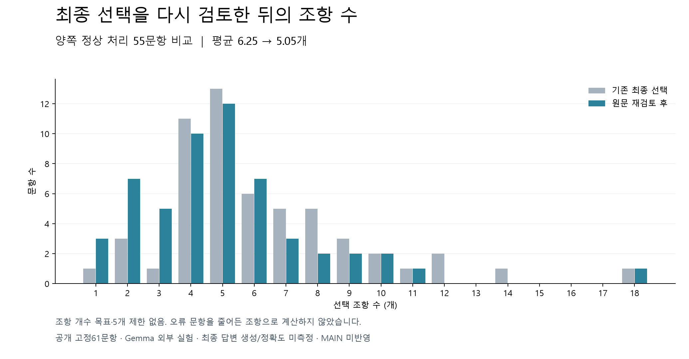

개수 목표 없이 기존 최종 선택을 원문으로 재검토한 실험입니다. 문항을 펼치면 선택 출처, 조문 사이의 방향, 실제 관계 문장을 볼 수 있습니다.
공개61문항 · Gemma · 실제 답변 작성 전 검토용 산출물 · MAIN/GENOS 미반영. 이 화면의 평가 원문 점수는 답변 정확도가 아닙니다.

벤처금융·전문투자자 10% 한도 규정의 핵심 조항
의무보유 예외 대상 및 세부 기준 정의
벤처금융 및 전문투자자의 정의 확인
전문투자자의 세부 범위 및 요건 정의
⑥ 규정 제26조제1항제5호 단서에 따른 취득가격과 공모가격의 괴리율은 다음 각 호에 따라 산정한다.
④ 규정 제26조제1항제3호 단서에서 "세칙으로 정하는 경우"란 다음 각 호의 어느 하나에 해당하는 경우를 말한다.
⑤ 규정 제26조제1항제4호 단서에서 "세칙으로 정하는 경우"란 해당 법인이 다음 각 호의 어느 하나에 해당하는 경우를 말한다. <개정 2022. 4. 29.>
① 규정 제26조제1항제1호 단서에서 "세칙으로 정하는 경우"란 다음 각 호의 어느 하나에 해당하는 경우를 말한다.
③ 규정 제26조제1항제2호 단서에서 "세칙으로 정하는 경우"란 다음 각 호의 어느 하나에 해당하는 경우를 말한다. <개정 2022. 12. 9.>
8. 그 밖에 거래소가 공익 실현과 투자자 보호 등을 위하여 의무보유가 필요하다고 인정하는 주주등(제2조제1항제10호 각 목의 증권을 소유한 자를 말한다. 이하 같다): 상장일부터 거래소와 협의하여 정한 2년 이내의 기간
1. 상장신청일 현재 보통주식총수의 100분의 5 미만을 소유한 특수관계인(규정 제2조제1항제13호나목에 따른 특수관계인을 말한다. 이하 같다)이 다음 각 목의 어느 하나에 해당하는 경우
5. 그 밖에 제1호부터 제4호까지의 규정에 따른 전문투자자에 준하는 자로서 한국거래소(이하 "거래소"라 한다)가 해당 전문투자자의 성격, 주식 소유 목적 등을 고려할 때 규정 제2조제1항제13호가목에 따른 최대주주(이하 "최대주주"라 한다)의 소유주식 수 산정에서 제외하는 것이 타당하다고 인정하는 전문투자자 <개정 2026. 3. 16.>
원문 문구·좌표 확인 / 질문에 대한 법적 적용성 미확정. 답변 생성 전 산출물이며 실제 답변 인용 여부는 미검증.
제4호의 기준일이 명시된 직접적 근거 조항
선택 조항 사이에서 원문으로 검증한 명시 관계를 확인하지 못했습니다.
원문 문구·좌표 확인 / 질문에 대한 법적 적용성 미확정. 답변 생성 전 산출물이며 실제 답변 인용 여부는 미검증.
신규상장 의무보유 대상 및 기간 규정
제3자 배정 취득자 의무보유 예외 규정
상장법인의 제3자 배정 유상증자 의무보유
제3자 배정 유상증자 실권주 처리 정의
⑥ 규정 제26조제1항제5호 단서에 따른 취득가격과 공모가격의 괴리율은 다음 각 호에 따라 산정한다.
④ 규정 제26조제1항제3호 단서에서 "세칙으로 정하는 경우"란 다음 각 호의 어느 하나에 해당하는 경우를 말한다.
⑤ 규정 제26조제1항제4호 단서에서 "세칙으로 정하는 경우"란 해당 법인이 다음 각 호의 어느 하나에 해당하는 경우를 말한다. <개정 2022. 4. 29.>
① 규정 제26조제1항제1호 단서에서 "세칙으로 정하는 경우"란 다음 각 호의 어느 하나에 해당하는 경우를 말한다.
③ 규정 제26조제1항제2호 단서에서 "세칙으로 정하는 경우"란 다음 각 호의 어느 하나에 해당하는 경우를 말한다. <개정 2022. 12. 9.>
규정 제50조제1항제1호에서 "세칙으로 정하는 실권주 처리에 따른 경우"란 주주 배정 유상증자 또는 제3자 배정 방식의 유상증자 시 신주인수의 청약을 하지 않거나 납입을 하지 않아 발생한 실권주를 제3자에게 배정하는 경우를 말한다.
원문 문구·좌표 확인 / 질문에 대한 법적 적용성 미확정. 답변 생성 전 산출물이며 실제 답변 인용 여부는 미검증.
괴리율 산정 대상인 제5호의 근거 조항
괴리율의 구체적인 산정 방법 명시
⑥ 규정 제26조제1항제5호 단서에 따른 취득가격과 공모가격의 괴리율은 다음 각 호에 따라 산정한다.
④ 규정 제26조제1항제3호 단서에서 "세칙으로 정하는 경우"란 다음 각 호의 어느 하나에 해당하는 경우를 말한다.
⑤ 규정 제26조제1항제4호 단서에서 "세칙으로 정하는 경우"란 해당 법인이 다음 각 호의 어느 하나에 해당하는 경우를 말한다. <개정 2022. 4. 29.>
① 규정 제26조제1항제1호 단서에서 "세칙으로 정하는 경우"란 다음 각 호의 어느 하나에 해당하는 경우를 말한다.
③ 규정 제26조제1항제2호 단서에서 "세칙으로 정하는 경우"란 다음 각 호의 어느 하나에 해당하는 경우를 말한다. <개정 2022. 12. 9.>
원문 문구·좌표 확인 / 질문에 대한 법적 적용성 미확정. 답변 생성 전 산출물이며 실제 답변 인용 여부는 미검증.
유가증권시장 신규상장 의무보유 기본 규정
전문투자자 의무보유 제외 및 정의
우회상장 시 의무보유 준용 규정
일반재상장 시 의무보유 준용 규정
외국주권 신규상장 시 의무보유 준용
전문투자자의 법적 정의
종류주권 신규상장 시 의무보유 준용
3. 규정 제27조제1항제1호에 해당하는 자가 소유하는 주식이 법에 따른 증권신고서 제출 수리를 통해 매출이 확정된 경우 <개정 2025. 7. 9.>
2. 규정 제27조제1항제3호·제4호의 경우 다음 각 목의 어느 하나에 해당하는 경우
2. 규정 제27조제1항제3호·제4호의 경우 다음 각 목의 어느 하나에 해당하는 경우
① 규정 제27조제3항제1호라목에서 "세칙으로 정하는 경우"란 최대주주의 특수관계인이 다음 각 호의 어느 하나에 해당하고, 해당 특수관계인의 의무보유를 면제하는 것이 필요하다고 거래소가 인정하는 경우를 말한다. 이 경우 특수관계인은 보통주식총수의 100분의 5 미만을 소유한 자로 한정(제5호에 해당하는 경우는 제외한다)한다. <신설 2014. 6. 25., 2015. 12. 2., 2019. 9. 10., 2022. 3. 17.>
사. 규정 제27조제1항제3호·제4호에 해당하는 자의 의무보유 의무를 대신하기 위하여 최대주주등(신규상장신청인의 임원에는 「상법」 제401조의2제1항 각 호의 자를 포함한다. 이하 이 항에서 같다)이 제3자로부터 해당 주식등을 취득(상장예비심사신청일 1년 전의 날 이후 취득한 것에 한정한다)하였거나 상장예비심사신청일 현재 최대주주등 이외의 자가 그 소유 주식등에 대해 의무보유를 한 경우로서 거래소가 불가피하다고 인정한 경우
1. 규정 제27조제1항제1호의 경우 전문투자자인 최대주주등이 투자를 목적으로 소유한 경우
② 규정 제27조제4항에 따라 다음 각 호의 어느 하나에 해당하는 경우에는 그 수량을 의무보유 대상 주식등에서 제외한다. <개정 2014. 6. 25., 2015. 7. 31., 2019. 9. 10., 2022. 3. 17., 2022. 12. 9.>
아. 규정 제27조제3항제1호라목에 해당하여 의무보유를 요구받지 않은 특수관계인으로부터 주식등을 취득한 경우
사. 규정 제27조제1항제3호·제4호에 해당하는 자의 의무보유 의무를 대신하기 위하여 최대주주등(신규상장신청인의 임원에는 「상법」 제401조의2제1항 각 호의 자를 포함한다. 이하 이 항에서 같다)이 제3자로부터 해당 주식등을 취득(상장예비심사신청일 1년 전의 날 이후 취득한 것에 한정한다)하였거나 상장예비심사신청일 현재 최대주주등 이외의 자가 그 소유 주식등에 대해 의무보유를 한 경우로서 거래소가 불가피하다고 인정한 경우
④ 규정 제27조제5항에 따른 의무보유 관련 제출 서류와 제출 시기는 별표 2에서 정한다. <개정 2019. 9. 10.>
1. 신규상장신청인의 최대주주등(신규상장신청인의 임원에는「상법」제401조의2제1항 각 호의 자를 포함한다. 이하 이 조에서 같다): 상장일부터 6개월. 다만, 신규상장신청인의 최대주주가 법 제9조제19항에 따른 사모집합투자기구인 경우 최대주주등에 대한 의무보유기간은 상장일부터 1년으로 한다.
3. 신규상장신청인의 최대주주의 특수관계인으로서 100주 미만의 주식을 소유한 자이거나 제27조제3항제1호라목에 해당하는 자인 경우
① 외국주권등의 신규상장과 관련한 상장예비심사, 의무보유, 신규상장 신청에는 보통주권의 상장예비심사에 관한 제26조, 의무보유에 관한 제27조, 신규상장 신청에 관한 제28조를 준용한다. <개정 2019. 8. 28.>
② 제1항에 따른 의무보유의 범위와 기간, 첨부서류의 제출 등에 관하여는 세칙으로 정하는 바에 따라 제27조를 준용한다. <개정 2019. 8. 28.>
② 제1항에 따른 의무보유의 범위와 기간, 첨부서류의 제출 등에 관하여는 세칙으로 정하는 바에 따라 제27조를 준용한다. <개정 2019. 8. 28.>
① 종류주권(외국종류주권을 포함한다. 이하 이 장에서 같다)의 신규상장과 관련한 상장예비심사, 의무보유, 신규상장 신청에는 보통주권의 상장예비심사에 관한 제26조, 의무보유에 관한 제27조, 신규상장 신청에 관한 제28조를 준용한다. 다만, 보통주권의 분할재상장 또는 합병재상장에 따라 종류주권을 신규상장하는 경우에는 제27조를 준용하지 않을 수 있다. <개정 2014. 6. 18., 2019. 8. 28.>
② 제1항에 따라 제27조를 준용하는 경우에는 다음 각 호의 증권만을 의무보유 대상으로 한다. <개정 2019. 8. 28., 2022. 3. 16.>
③ 제1항에도 불구하고 의무보유 의무의 면제 기준에 관하여는 외국주권등에 관한 제52조제2항을 준용한다. <개정 2014. 6. 18., 2019. 8. 28.>
③ 제2항제1호에서 "전문투자자"란 법 제9조제5항의 전문투자자 중 다음 각 호의 어느 하나에 해당하는 자를 말한다. <개정 2015. 7. 31., 2022. 3. 17.>
원문 문구·좌표 확인 / 질문에 대한 법적 적용성 미확정. 답변 생성 전 산출물이며 실제 답변 인용 여부는 미검증.
신규상장 의무보유 기본 규정
전문투자자 의무보유 제외 및 범위
전문투자자의 구체적 범위
전문투자자의 법적 정의
사모집합투자기구 관련 준용 규정
우회상장 시 의무보유 준용 규정
3. 규정 제27조제1항제1호에 해당하는 자가 소유하는 주식이 법에 따른 증권신고서 제출 수리를 통해 매출이 확정된 경우 <개정 2025. 7. 9.>
2. 규정 제27조제1항제3호·제4호의 경우 다음 각 목의 어느 하나에 해당하는 경우
2. 규정 제27조제1항제3호·제4호의 경우 다음 각 목의 어느 하나에 해당하는 경우
① 규정 제27조제3항제1호라목에서 "세칙으로 정하는 경우"란 최대주주의 특수관계인이 다음 각 호의 어느 하나에 해당하고, 해당 특수관계인의 의무보유를 면제하는 것이 필요하다고 거래소가 인정하는 경우를 말한다. 이 경우 특수관계인은 보통주식총수의 100분의 5 미만을 소유한 자로 한정(제5호에 해당하는 경우는 제외한다)한다. <신설 2014. 6. 25., 2015. 12. 2., 2019. 9. 10., 2022. 3. 17.>
사. 규정 제27조제1항제3호·제4호에 해당하는 자의 의무보유 의무를 대신하기 위하여 최대주주등(신규상장신청인의 임원에는 「상법」 제401조의2제1항 각 호의 자를 포함한다. 이하 이 항에서 같다)이 제3자로부터 해당 주식등을 취득(상장예비심사신청일 1년 전의 날 이후 취득한 것에 한정한다)하였거나 상장예비심사신청일 현재 최대주주등 이외의 자가 그 소유 주식등에 대해 의무보유를 한 경우로서 거래소가 불가피하다고 인정한 경우
1. 규정 제27조제1항제1호의 경우 전문투자자인 최대주주등이 투자를 목적으로 소유한 경우
② 규정 제27조제4항에 따라 다음 각 호의 어느 하나에 해당하는 경우에는 그 수량을 의무보유 대상 주식등에서 제외한다. <개정 2014. 6. 25., 2015. 7. 31., 2019. 9. 10., 2022. 3. 17., 2022. 12. 9.>
아. 규정 제27조제3항제1호라목에 해당하여 의무보유를 요구받지 않은 특수관계인으로부터 주식등을 취득한 경우
사. 규정 제27조제1항제3호·제4호에 해당하는 자의 의무보유 의무를 대신하기 위하여 최대주주등(신규상장신청인의 임원에는 「상법」 제401조의2제1항 각 호의 자를 포함한다. 이하 이 항에서 같다)이 제3자로부터 해당 주식등을 취득(상장예비심사신청일 1년 전의 날 이후 취득한 것에 한정한다)하였거나 상장예비심사신청일 현재 최대주주등 이외의 자가 그 소유 주식등에 대해 의무보유를 한 경우로서 거래소가 불가피하다고 인정한 경우
④ 규정 제27조제5항에 따른 의무보유 관련 제출 서류와 제출 시기는 별표 2에서 정한다. <개정 2019. 9. 10.>
1. 신규상장신청인의 최대주주등(신규상장신청인의 임원에는「상법」제401조의2제1항 각 호의 자를 포함한다. 이하 이 조에서 같다): 상장일부터 6개월. 다만, 신규상장신청인의 최대주주가 법 제9조제19항에 따른 사모집합투자기구인 경우 최대주주등에 대한 의무보유기간은 상장일부터 1년으로 한다.
② 규정 제35조제2항에 따른 우회상장의 의무보유 범위와 기간에 관하여는 규정 제27조의 규정을 준용한다. 이 경우 같은 조 제1항의 "상장일"은 다음 각 호의 어느 하나에 해당하는 날로 한다. <개정 2014. 6. 25., 2019. 9. 10., 2022. 3. 17.>
② 규정 제35조제2항에 따른 우회상장의 의무보유 범위와 기간에 관하여는 규정 제27조의 규정을 준용한다. 이 경우 같은 조 제1항의 "상장일"은 다음 각 호의 어느 하나에 해당하는 날로 한다. <개정 2014. 6. 25., 2019. 9. 10., 2022. 3. 17.>
④ 보통주권에 관한 규정 제27조제1항제1호단서를 준용하는 경우에 법 제9조제19항에 따른 사모집합투자기구(이하 "사모집합투자기구"라 한다)에는 외국법령상 그에 상응하는 외국법인을 포함한다. <신설 2014. 6. 25., 2020. 12. 18., 2022. 3. 17., 2022. 12. 9.>
③ 제2항제1호에서 "전문투자자"란 법 제9조제5항의 전문투자자 중 다음 각 호의 어느 하나에 해당하는 자를 말한다. <개정 2015. 7. 31., 2022. 3. 17.>
④ 보통주권에 관한 규정 제27조제1항제1호단서를 준용하는 경우에 법 제9조제19항에 따른 사모집합투자기구(이하 "사모집합투자기구"라 한다)에는 외국법령상 그에 상응하는 외국법인을 포함한다. <신설 2014. 6. 25., 2020. 12. 18., 2022. 3. 17., 2022. 12. 9.>
② 법 제9조제5항제3호에서 "대통령령으로 정하는 금융기관"이란 다음 각 호의 금융기관을 말한다. <개정 2009.12.21, 2010.11.15, 2012.1.6, 2015.3.3, 2016.7.28, 2016.10.25>
③ 법 제9조제5항제5호에서 "대통령령으로 정하는 자"란 다음 각 호의 자를 말한다. 다만, 제12호부터 제17호까지의 어느 하나에 해당하는 자가 금융투자업자와 장외파생상품 거래를 하는 경우에는 전문투자자와 같은 대우를 받겠다는 의사를 금융투자업자에게 서면으로 통지하는 경우만 해당한다. <개정 2009.5.29, 2009.7.1, 2013.8.27, 2014.3.24, 2016.2.5, 2016.3.11, 2016.5.31, 2016.6.28, 2018.10.30, 2019.6.25, 2019.8.20, 2021.2.9, 2022.2.17, 2025.9.23>
① 법 제9조제5항 각 호 외의 부분 단서에서 "대통령령으로 정하는 자"란 다음 각 호의 어느 하나에 해당하지 아니하는 전문투자자를 말한다.
원문 문구·좌표 확인 / 질문에 대한 법적 적용성 미확정. 답변 생성 전 산출물이며 실제 답변 인용 여부는 미검증.
코스닥 상장주선인 의무인수 수량 및 기간
유가증권시장 상장주선인 취득 기준 세부사항
유가증권시장 상장주선인 의무인수 수량 및 기간
코스닥 상장주선인 주식 취득 기준 세부사항
코스닥 상장주선인 취득 주식 의무보유 기간
유가증권시장 일반 의무보유 규정(준용 근거)
④ 규정 제13조제5항에 따라 상장주선인이 주식(외국주식예탁증권을 포함한다. 이하 이 항에서 같다)을 취득하는 경우에는 다음 각 호의 기준을 충족하여야 한다.
⑥ 규정 제13조제8항에 따라 상장주선인은 상장예비심사 승인을 통지받은 날부터 7일 이내에 거래소와 상장주선인의 인터넷 홈페이지 등에 사업모델 평가보고서를 게시하여야 한다. 다만, 사업모델 평가보고서에 해당 기업의 기밀 사항 등이 포함된 경우에는 거래소와 협의하여 그 내용을 제외할 수 있다. <개정 2023. 12. 28.>
⑤ 규정 제13조제5항제1호나목 단서에서 "세칙으로 정하는 사유에 해당하는 경우"란 상장주선인이 상장예비심사 신청일을 기준으로 최근 3년 이내에 상장을 주선한 기술성장기업이 상장한 이후 2년 이내에 투자주의 환기종목 또는 관리종목으로 지정되거나 형식적 상장폐지사유 또는 상장적격성 실질심사에 따른 상장폐지 사유가 발생한 경우를 말한다. <신설 2023. 12. 28.>
② 규정 제13조제4항 본문에 따라 신규상장(보통주식 또는 외국주식등의 신규상장으로 한정한다), 우회상장 또는 합병상장을 주선한 상장주선인은 해당 코스닥시장 상장법인의 기업분석보고서를 상장일부터 3년 동안 반기별 1회 이상 거래소에 제출하고 자신의 인터넷 홈페이지에 게시하여야 한다. 다만, 상장일부터 상장일이 속한 반기의 말일까지의 기간이 2개월 미만인 경우에는 상장일이 속한 반기의 다음 반기의 초일부터 적용한다.
① 규정 제13조제1항에 따른 기업실사 과정에서 상장주선인은 상장신청인의 재무상황 등이 사실에 기초하여 진실하고 정확한 방법으로 기재되었음을 입증하는 확인서를 상장신청인의 대표이사 등으로부터 제출받아야 한다.
⑦ 규정 제13조제9항에 따라 상장주선인은 상장예비심사 승인을 통지받은 날부터 7일 이내에 거래소와 상장주선인의 인터넷 홈페이지 등에 별지 제10호의2 서식의 기업 계속성 보고서를 게시하여야 한다. 이 경우 제6항 단서를 준용한다. <신설 2022. 4. 29., 2023. 12. 28.>
② 규정 제13조제3항제5호 본문에 따라 상장주선인은 상장신청인의 재무상황 등을 상장일부터 2년간 반기별 1회 이상 분석하여 거래소에 제출해야 한다. 다만, 상장일이 속한 반기의 잔여기간이 2개월 미만인 경우에는 그 다음 반기부터 적용한다.
① 규정 제13조제3항제1호 후단에 따라 상장주선인이 증권을 취득하는 경우 다음 각 호의 기준을 충족해야 한다.
원문 문구·좌표 확인 / 질문에 대한 법적 적용성 미확정. 답변 생성 전 산출물이며 실제 답변 인용 여부는 미검증.
국내기업 상장주선인 의무보유 기간 및 연장 조건
혁신기술기업 상장주선인의 6개월 의무보유 근거
C001의 6개월 보유 사유(세칙으로 정하는 사유) 명시
유가증권시장 상장주선인의 의무보유 규정 비교
유가증권시장 상장주선인 의무이행 세부 기준
④ 규정 제13조제5항에 따라 상장주선인이 주식(외국주식예탁증권을 포함한다. 이하 이 항에서 같다)을 취득하는 경우에는 다음 각 호의 기준을 충족하여야 한다.
⑥ 규정 제13조제8항에 따라 상장주선인은 상장예비심사 승인을 통지받은 날부터 7일 이내에 거래소와 상장주선인의 인터넷 홈페이지 등에 사업모델 평가보고서를 게시하여야 한다. 다만, 사업모델 평가보고서에 해당 기업의 기밀 사항 등이 포함된 경우에는 거래소와 협의하여 그 내용을 제외할 수 있다. <개정 2023. 12. 28.>
⑤ 규정 제13조제5항제1호나목 단서에서 "세칙으로 정하는 사유에 해당하는 경우"란 상장주선인이 상장예비심사 신청일을 기준으로 최근 3년 이내에 상장을 주선한 기술성장기업이 상장한 이후 2년 이내에 투자주의 환기종목 또는 관리종목으로 지정되거나 형식적 상장폐지사유 또는 상장적격성 실질심사에 따른 상장폐지 사유가 발생한 경우를 말한다. <신설 2023. 12. 28.>
② 규정 제13조제4항 본문에 따라 신규상장(보통주식 또는 외국주식등의 신규상장으로 한정한다), 우회상장 또는 합병상장을 주선한 상장주선인은 해당 코스닥시장 상장법인의 기업분석보고서를 상장일부터 3년 동안 반기별 1회 이상 거래소에 제출하고 자신의 인터넷 홈페이지에 게시하여야 한다. 다만, 상장일부터 상장일이 속한 반기의 말일까지의 기간이 2개월 미만인 경우에는 상장일이 속한 반기의 다음 반기의 초일부터 적용한다.
① 규정 제13조제1항에 따른 기업실사 과정에서 상장주선인은 상장신청인의 재무상황 등이 사실에 기초하여 진실하고 정확한 방법으로 기재되었음을 입증하는 확인서를 상장신청인의 대표이사 등으로부터 제출받아야 한다.
⑦ 규정 제13조제9항에 따라 상장주선인은 상장예비심사 승인을 통지받은 날부터 7일 이내에 거래소와 상장주선인의 인터넷 홈페이지 등에 별지 제10호의2 서식의 기업 계속성 보고서를 게시하여야 한다. 이 경우 제6항 단서를 준용한다. <신설 2022. 4. 29., 2023. 12. 28.>
② 규정 제13조제3항제5호 본문에 따라 상장주선인은 상장신청인의 재무상황 등을 상장일부터 2년간 반기별 1회 이상 분석하여 거래소에 제출해야 한다. 다만, 상장일이 속한 반기의 잔여기간이 2개월 미만인 경우에는 그 다음 반기부터 적용한다.
① 규정 제13조제3항제1호 후단에 따라 상장주선인이 증권을 취득하는 경우 다음 각 호의 기준을 충족해야 한다.
원문 문구·좌표 확인 / 질문에 대한 법적 적용성 미확정. 답변 생성 전 산출물이며 실제 답변 인용 여부는 미검증.
코스닥 상장주선인 의무인수 면제 사유 명시
유가증권 상장주선인 의무인수 면제 사유 명시
상장주선인 의무보유 대상 및 예외 근거
외국주식 신규상장 시 상장주선인 의무보유
코스닥 상장주선인 주식 취득 기준 및 세부사항
유가증권 상장주선인 증권 취득 기준
신규상장 의무보유의 구체적 예외 사유
외국주식 의무보유 예외의 준용 규정
의무보유 일반 예외 인정 사유
의무보유 예외의 세부 인정 범위
④ 규정 제13조제5항에 따라 상장주선인이 주식(외국주식예탁증권을 포함한다. 이하 이 항에서 같다)을 취득하는 경우에는 다음 각 호의 기준을 충족하여야 한다.
⑥ 규정 제13조제8항에 따라 상장주선인은 상장예비심사 승인을 통지받은 날부터 7일 이내에 거래소와 상장주선인의 인터넷 홈페이지 등에 사업모델 평가보고서를 게시하여야 한다. 다만, 사업모델 평가보고서에 해당 기업의 기밀 사항 등이 포함된 경우에는 거래소와 협의하여 그 내용을 제외할 수 있다. <개정 2023. 12. 28.>
⑤ 규정 제13조제5항제1호나목 단서에서 "세칙으로 정하는 사유에 해당하는 경우"란 상장주선인이 상장예비심사 신청일을 기준으로 최근 3년 이내에 상장을 주선한 기술성장기업이 상장한 이후 2년 이내에 투자주의 환기종목 또는 관리종목으로 지정되거나 형식적 상장폐지사유 또는 상장적격성 실질심사에 따른 상장폐지 사유가 발생한 경우를 말한다. <신설 2023. 12. 28.>
② 규정 제13조제4항 본문에 따라 신규상장(보통주식 또는 외국주식등의 신규상장으로 한정한다), 우회상장 또는 합병상장을 주선한 상장주선인은 해당 코스닥시장 상장법인의 기업분석보고서를 상장일부터 3년 동안 반기별 1회 이상 거래소에 제출하고 자신의 인터넷 홈페이지에 게시하여야 한다. 다만, 상장일부터 상장일이 속한 반기의 말일까지의 기간이 2개월 미만인 경우에는 상장일이 속한 반기의 다음 반기의 초일부터 적용한다.
① 규정 제13조제1항에 따른 기업실사 과정에서 상장주선인은 상장신청인의 재무상황 등이 사실에 기초하여 진실하고 정확한 방법으로 기재되었음을 입증하는 확인서를 상장신청인의 대표이사 등으로부터 제출받아야 한다.
⑦ 규정 제13조제9항에 따라 상장주선인은 상장예비심사 승인을 통지받은 날부터 7일 이내에 거래소와 상장주선인의 인터넷 홈페이지 등에 별지 제10호의2 서식의 기업 계속성 보고서를 게시하여야 한다. 이 경우 제6항 단서를 준용한다. <신설 2022. 4. 29., 2023. 12. 28.>
② 규정 제13조제3항제5호 본문에 따라 상장주선인은 상장신청인의 재무상황 등을 상장일부터 2년간 반기별 1회 이상 분석하여 거래소에 제출해야 한다. 다만, 상장일이 속한 반기의 잔여기간이 2개월 미만인 경우에는 그 다음 반기부터 적용한다.
① 규정 제13조제3항제1호 후단에 따라 상장주선인이 증권을 취득하는 경우 다음 각 호의 기준을 충족해야 한다.
② 외국주식등의 신규상장 의무보유에 관하여는 보통주식의 신규상장 의무보유에 관한 제26조제2항 및 제3항을 준용한다.
② 외국주식등의 신규상장 의무보유에 관하여는 보통주식의 신규상장 의무보유에 관한 제26조제2항 및 제3항을 준용한다.
① 규정 제61조제1항제1호 단서에서 "세칙으로 정하는 경우"란 제23조제1항 각 호의 어느 하나에 해당하는 경우를 말한다. 이 경우 제23조제2항을 준용한다.
② 규정 제61조제1항제2호 단서에서 "세칙으로 정하는 경우"란 제23조제3항 각 호의 어느 하나에 해당하는 경우를 말한다.
④ 규정 제61조제1항제4호 단서에서 "세칙으로 정하는 경우"란 제23조제5항(제2호는 제외한다) 각 호의 어느 하나에 해당하는 경우를 말한다.
③ 규정 제61조제1항제3호 단서에서 "세칙으로 정하는 경우"란 제23조제4항(제2호는 제외한다) 각 호의 어느 하나에 해당하는 경우를 말한다.
⑤ 규정 제61조제1항제5호 단서에 따른 취득가격과 공모가격의 괴리율은 제23조제6항 각 호에서 정하는 방법으로 산정한다.
⑥ 규정 제26조제1항제5호 단서에 따른 취득가격과 공모가격의 괴리율은 다음 각 호에 따라 산정한다.
④ 규정 제26조제1항제3호 단서에서 "세칙으로 정하는 경우"란 다음 각 호의 어느 하나에 해당하는 경우를 말한다.
⑤ 규정 제26조제1항제4호 단서에서 "세칙으로 정하는 경우"란 해당 법인이 다음 각 호의 어느 하나에 해당하는 경우를 말한다. <개정 2022. 4. 29.>
① 규정 제26조제1항제1호 단서에서 "세칙으로 정하는 경우"란 다음 각 호의 어느 하나에 해당하는 경우를 말한다.
③ 규정 제26조제1항제2호 단서에서 "세칙으로 정하는 경우"란 다음 각 호의 어느 하나에 해당하는 경우를 말한다. <개정 2022. 12. 9.>
⑤ 규정 제16조제2항에서 "세칙으로 정하는 경우"란 다음 각 호의 어느 하나에 해당하는 경우를 말한다. 다만, 「주식·사채 등의 전자등록에 관한 법률」에 따라 전자등록된 주식등에 대하여 제1호부터 제4호까지의 규정에서 정하는 사유가 발생한 경우에는 거래소의 승인을 받지 않을 수 있다.
③ 거래소는 규정 제16조제1항제1호·제2호에 따라 최대주주등에 대한 의무보유의 예외를 인정하는 경우 그 내용을 시장안내 사항으로 공시하여야 한다. <개정 2022. 12. 9.>
③ 거래소는 규정 제16조제1항제1호·제2호에 따라 최대주주등에 대한 의무보유의 예외를 인정하는 경우 그 내용을 시장안내 사항으로 공시하여야 한다. <개정 2022. 12. 9.>
④ 규정 제16조제1항제3호에서 "그 밖에 의무보유의 예외를 인정할 필요가 있다고 세칙으로 정하는 경우"란 상장신청인이 코스닥시장 상장법인 또는 유가증권시장 주권상장법인의 물적분할로 설립된 경우로서 상장신청인의 모회사(「상법」 제342조의2제1항에 따른 모회사를 말한다. 이하 이 항에서 같다) 주주 보호 방안 등에 따라 모회사의 주주가 주식등을 취득하는 것으로 거래소가 인정하는 경우를 말한다. <신설 2022. 12. 9.>
① 규정 제16조제1항제2호에서 "세칙으로 정하는 경우"란 다음 각 호의 어느 하나에 해당하는 인수·합병 등을 말한다. <개정 2022. 12. 9.>
④ 규정 제61조제1항제4호 단서에서 "세칙으로 정하는 경우"란 제23조제5항(제2호는 제외한다) 각 호의 어느 하나에 해당하는 경우를 말한다.
③ 규정 제61조제1항제3호 단서에서 "세칙으로 정하는 경우"란 제23조제4항(제2호는 제외한다) 각 호의 어느 하나에 해당하는 경우를 말한다.
① 규정 제61조제1항제1호 단서에서 "세칙으로 정하는 경우"란 제23조제1항 각 호의 어느 하나에 해당하는 경우를 말한다. 이 경우 제23조제2항을 준용한다.
① 규정 제61조제1항제1호 단서에서 "세칙으로 정하는 경우"란 제23조제1항 각 호의 어느 하나에 해당하는 경우를 말한다. 이 경우 제23조제2항을 준용한다.
③ 규정 제61조제1항제3호 단서에서 "세칙으로 정하는 경우"란 제23조제4항(제2호는 제외한다) 각 호의 어느 하나에 해당하는 경우를 말한다.
② 규정 제61조제1항제2호 단서에서 "세칙으로 정하는 경우"란 제23조제3항 각 호의 어느 하나에 해당하는 경우를 말한다.
④ 규정 제61조제1항제4호 단서에서 "세칙으로 정하는 경우"란 제23조제5항(제2호는 제외한다) 각 호의 어느 하나에 해당하는 경우를 말한다.
⑤ 규정 제61조제1항제5호 단서에 따른 취득가격과 공모가격의 괴리율은 제23조제6항 각 호에서 정하는 방법으로 산정한다.
원문 문구·좌표 확인 / 질문에 대한 법적 적용성 미확정. 답변 생성 전 산출물이며 실제 답변 인용 여부는 미검증.
재검토 실패: ValueError. 성공적으로 0개를 선택한 결과가 아닙니다.
선택 조항 사이에서 원문으로 검증한 명시 관계를 확인하지 못했습니다.
원문 문구·좌표 확인 / 질문에 대한 법적 적용성 미확정. 답변 생성 전 산출물이며 실제 답변 인용 여부는 미검증.
질적심사기준의 세부 적용방법 명시
코스닥 질적심사요건 및 내부통제 근거
유가증권 질적심사요건 및 내부통제 근거
기업성장투자회사 질적심사 준용 근거
외국주권 질적심사 준용 근거
기업성장투자신탁 질적심사 준용 근거
① 규정 제29조제2항 전단에서 "세칙으로 정하는 질적심사기준"이란 별표 6의 질적심사기준을 말한다.
③ 규정 제29조제3항에 따라 국민경제에 대한 기여도 등을 고려하는 경우 코넥스시장 상장법인의 코넥스시장 상장기간 동안의 주주 가치 제고 노력 등을 반영하여 심사할 수 있다. <신설 2022. 4. 29.>
② 규정 제29조제2항 후단에서 "세칙으로 정하는 업종별 질적심사기준"이란 별표 7의 업종별 질적심사기준을 말한다.
7. 기업성장투자회사의 질적심사에 관하여는 보통주식의 신규상장 질적 심사요건에 관한 제29조를 준용한다. 다만, 제29조제1항제1호의 요건은 준용하지 않는다.
7. 기업성장투자회사의 질적심사에 관하여는 보통주식의 신규상장 질적 심사요건에 관한 제29조를 준용한다. 다만, 제29조제1항제1호의 요건은 준용하지 않는다.
8. 기업성장투자신탁의 질적심사에 관하여는 보통주식의 신규상장 질적 심사요건에 관한 제29조를 준용한다. 다만, 제29조제1항제1호의 요건은 준용하지 않는다.
8. 기업성장투자신탁의 질적심사에 관하여는 보통주식의 신규상장 질적 심사요건에 관한 제29조를 준용한다. 다만, 제29조제1항제1호의 요건은 준용하지 않는다.
② 제1항에도 불구하고 신규상장신청인이 다음 각 호를 모두 충족하는 외국기업인 경우에는 제30조의 질적 심사요건을 적용하지 않을 수 있으며, 제29조제1항제4호의 경영성과 요건은 같은 호 가목의 매출액과 수익성 요건만을 적용한다. <개정 2019. 6. 26.>
5. 제30조의 질적 심사요건: 본국의 법령, 사용언어, 시차, 지리적 여건 등을 고려하여 질적 심사를 할 수 있으며, 같은 조 제2항 각 호의 요건은 제1항제3호의 적용방법을 따른다.
5. 제30조의 질적 심사요건: 본국의 법령, 사용언어, 시차, 지리적 여건 등을 고려하여 질적 심사를 할 수 있으며, 같은 조 제2항 각 호의 요건은 제1항제3호의 적용방법을 따른다.
① 외국주권등의 신규상장에는 보통주권의 신규상장에 관한 제29조의 형식적 심사요건과 제30조의 질적 심사요건을 준용한다. 다만, 그 적용 방법은 다음 각 호에 따른다. <개정 2014. 6. 18.>
원문 문구·좌표 확인 / 질문에 대한 법적 적용성 미확정. 답변 생성 전 산출물이며 실제 답변 인용 여부는 미검증.
보고서식 제정 권한 규정
신고서류 서식제정 권한 규정
약관 제정 시 제출 기한 및 절차
약관 제정 시 제출 기한 및 절차
업무규정 제정 시 승인 및 보고 절차
약관 제정 보고 서식 및 점검항목
윤리강령 제정 및 운영 의무
내부통제기준 제정 목적 규정
성과보수 지급시기 등 제정 기준
선택 조항 사이에서 원문으로 검증한 명시 관계를 확인하지 못했습니다.
원문 문구·좌표 확인 / 질문에 대한 법적 적용성 미확정. 답변 생성 전 산출물이며 실제 답변 인용 여부는 미검증.
정관 및 주주총회/이사회 결의 요건
부여 대상자 자격 및 행사가격 요건
부여 대상, 방법, 한도 및 가격 기준
부여 계약 체결 및 계약서 작성 요건
부여 신고 시 제출 서류 요건
중소벤처기업부장관 신고 의무
행사기간 보장 등 부여 관련 세부 요건
② 제16조의3제1항에 따른 주주총회의 특별결의에서는 다음 각 호의 사항을 정하여야 한다.
① 제16조의3제1항의 주식매수선택권에 관한 정관의 규정에는 다음 각 호의 사항을 포함하여야 한다.
③ 제2항에도 불구하고 제1항제2호에 따른 주식 총수의 100분의 20 이내에 해당하는 주식을 제16조의3제1항제3호에 해당하는 자에게 부여하는 경우에는 주주총회의 특별결의로 제2항제1호 및 제4호의 사항을 그 벤처기업의 이사회에서 정하게 할 수 있다. 이 경우 주식매수선택권을 부여한 후 처음으로 소집되는 주주총회의 승인을 받아야 한다.
3. 이사회 의사록(법 제16조의4제3항에 따라 이사회에서 주식매수선택권의 부여에 관한 사항을 정하는 경우만 해당한다)
① 주식매수선택권을 부여하거나 취소 또는 철회하려는 벤처기업은 제16조의4제2항과 제3항에 따른 결의를 한 경우 대통령령으로 정하는 바에 따라 중소벤처기업부장관에게 그 내용을 신고하여야 한다.
① 주식매수선택권을 부여하거나 취소 또는 철회하려는 벤처기업은 제16조의4제2항과 제3항에 따른 결의를 한 경우 대통령령으로 정하는 바에 따라 중소벤처기업부장관에게 그 내용을 신고하여야 한다.
② 법 제16조의3제1항에 따른 주식매수선택권(이하 "주식매수선택권"이라 한다)의 행사가격(법 제16조의3제2항제1호에 따른 행사가격을 말한다. 이하 같다) 설정(주식매수선택권을 부여한 후 그 행사가격을 조정하는 경우를 포함한다)에 필요한 주식의 시가와 주식매수선택권을 행사한 날을 기준으로 한 주식의 시가는 「상속세 및 증여세법」 제60조 및 같은 법 시행령 제49조를 준용하여 평가한다. 이 경우 같은 법 시행령 제49조 중 "평가기준일 전후 6개월"은 각각 "평가기준일 전 6개월"로 본다. <개정 2024.7.2>
② 법 제16조의3제1항에 따른 주식매수선택권(이하 "주식매수선택권"이라 한다)의 행사가격(법 제16조의3제2항제1호에 따른 행사가격을 말한다. 이하 같다) 설정(주식매수선택권을 부여한 후 그 행사가격을 조정하는 경우를 포함한다)에 필요한 주식의 시가와 주식매수선택권을 행사한 날을 기준으로 한 주식의 시가는 「상속세 및 증여세법」 제60조 및 같은 법 시행령 제49조를 준용하여 평가한다. 이 경우 같은 법 시행령 제49조 중 "평가기준일 전후 6개월"은 각각 "평가기준일 전 6개월"로 본다. <개정 2024.7.2>
⑤ 법 제16조의3제5항에서 "대통령령으로 정하는 요건"이란 주식매수선택권을 부여받는 자 1인이 부여일을 기준으로 한 주식의 시가보다 낮은 행사가격으로 부여받았거나 부여받을 각 주식매수선택권에 대하여 다음 계산식에 따라 계산한 금액의 합계가 20억원 이하인 것을 말한다. <개정 2025.12.30> <img src="http://www.law.go.kr/flDownload.do?flSeq=130273075" alt="img130273075" > (부여일 기준 주식의 시가 － 행사가격) × 주식매수선택권 행사 대상 주식 수 </img>
③ 법 제16조의3제1항제1호 및 제2호에서 "대통령령으로 정하는 자"란 각각 「상법 시행령」 제30조제2항에 따른 자를 말한다.
④ 법 제16조의3제1항제3호에서 "대통령령으로 정하는 자"란 다음 각 호의 자를 말한다. 다만, 「상법 시행령」 제30조제2항에 따른 자는 제외한다.
③ 법 제16조의3제1항제1호 및 제2호에서 "대통령령으로 정하는 자"란 각각 「상법 시행령」 제30조제2항에 따른 자를 말한다.
① 벤처기업은 주식매수선택권을 부여하는 경우에는 그 주식매수선택권을 부여받는 자와 계약을 체결하고 상당한 기간 내에 그에 관한 계약서를 작성해야 한다. 이 경우 법 제16조의3제1항에 따른 주주총회의 특별결의에 의하여 주식매수선택권을 부여한 경우 그 계약의 체결 및 계약서 작성에 관하여는 「상법」 제340조의3제3항에서 정하는 바에 따른다.
① 벤처기업은 법 제16조의6제1항에 따라 주식매수선택권의 부여에 관하여 신고를 하려는 경우에는 중소벤처기업부령으로 정하는 신고서에 다음 각 호의 서류를 첨부하여 중소벤처기업부장관에게 제출해야 한다.
② 벤처기업은 법 제16조의6제1항에 따라 주식매수선택권의 취소 또는 철회에 관하여 신고를 하려는 경우에는 중소벤처기업부령으로 정하는 신고서를 제출해야 한다.
원문 문구·좌표 확인 / 질문에 대한 법적 적용성 미확정. 답변 생성 전 산출물이며 실제 답변 인용 여부는 미검증.
행사가격의 기준이 되는 시가 규정 명시
시가 평가 방법(상증세법 준용) 규정
부여 시 결정해야 할 행사가격 사항
행사이익 계산 시 시가 기준 언급
시가 이하 발행이익 관련 세부 기준
② 법 제16조의3제1항에 따른 주식매수선택권(이하 "주식매수선택권"이라 한다)의 행사가격(법 제16조의3제2항제1호에 따른 행사가격을 말한다. 이하 같다) 설정(주식매수선택권을 부여한 후 그 행사가격을 조정하는 경우를 포함한다)에 필요한 주식의 시가와 주식매수선택권을 행사한 날을 기준으로 한 주식의 시가는 「상속세 및 증여세법」 제60조 및 같은 법 시행령 제49조를 준용하여 평가한다. 이 경우 같은 법 시행령 제49조 중 "평가기준일 전후 6개월"은 각각 "평가기준일 전 6개월"로 본다. <개정 2024.7.2>
② 법 제16조의3제1항에 따른 주식매수선택권(이하 "주식매수선택권"이라 한다)의 행사가격(법 제16조의3제2항제1호에 따른 행사가격을 말한다. 이하 같다) 설정(주식매수선택권을 부여한 후 그 행사가격을 조정하는 경우를 포함한다)에 필요한 주식의 시가와 주식매수선택권을 행사한 날을 기준으로 한 주식의 시가는 「상속세 및 증여세법」 제60조 및 같은 법 시행령 제49조를 준용하여 평가한다. 이 경우 같은 법 시행령 제49조 중 "평가기준일 전후 6개월"은 각각 "평가기준일 전 6개월"로 본다. <개정 2024.7.2>
⑤ 법 제16조의3제5항에서 "대통령령으로 정하는 요건"이란 주식매수선택권을 부여받는 자 1인이 부여일을 기준으로 한 주식의 시가보다 낮은 행사가격으로 부여받았거나 부여받을 각 주식매수선택권에 대하여 다음 계산식에 따라 계산한 금액의 합계가 20억원 이하인 것을 말한다. <개정 2025.12.30> <img src="http://www.law.go.kr/flDownload.do?flSeq=130273075" alt="img130273075" > (부여일 기준 주식의 시가 － 행사가격) × 주식매수선택권 행사 대상 주식 수 </img>
③ 법 제16조의3제1항제1호 및 제2호에서 "대통령령으로 정하는 자"란 각각 「상법 시행령」 제30조제2항에 따른 자를 말한다.
④ 법 제16조의3제1항제3호에서 "대통령령으로 정하는 자"란 다음 각 호의 자를 말한다. 다만, 「상법 시행령」 제30조제2항에 따른 자는 제외한다.
③ 법 제16조의3제1항제1호 및 제2호에서 "대통령령으로 정하는 자"란 각각 「상법 시행령」 제30조제2항에 따른 자를 말한다.
② 제16조의3제1항에 따른 주주총회의 특별결의에서는 다음 각 호의 사항을 정하여야 한다.
① 제16조의3제1항의 주식매수선택권에 관한 정관의 규정에는 다음 각 호의 사항을 포함하여야 한다.
③ 제2항에도 불구하고 제1항제2호에 따른 주식 총수의 100분의 20 이내에 해당하는 주식을 제16조의3제1항제3호에 해당하는 자에게 부여하는 경우에는 주주총회의 특별결의로 제2항제1호 및 제4호의 사항을 그 벤처기업의 이사회에서 정하게 할 수 있다. 이 경우 주식매수선택권을 부여한 후 처음으로 소집되는 주주총회의 승인을 받아야 한다.
② 제1항이 적용되는 주식매수선택권은 「벤처기업육성에 관한 특별법」 제16조의3에 따라 부여받은 주식매수선택권 및 「상법」 제340조의2 또는 제542조의3에 따라 부여받은 주식매수선택권(코넥스상장기업으로부터 부여받은 경우로 한정한다)으로 한정한다. <신설 2022.12.31, 2024.1.9>
① 법 제16조의4제1항 각 호 외의 부분에서 "대통령령으로 정하는 바에 따라 벤처기업이 인수한 기업"이란 벤처기업이 발행주식 총수의 100분의 30 이상을 인수한 기업을 말하며, 법 제16조의4제1항 각 호 외의 부분에서 "대통령령으로 정하는 자"란 「벤처기업육성에 관한 특별법」 제16조의3제1항에 따른 주식매수선택권을 부여받은 임직원(「벤처기업육성에 관한 특별법」 제16조의3제1항에 따른 주주총회의 결의가 있는 날 현재 다음 각 호의 어느 하나에 해당하는 자는 제외하며, 이하 이 조에서 "벤처기업 임직원"이라 한다)을 말한다. <개정 2018.2.13, 2022.2.15, 2024.7.2>
3. 사망, 정년 등 재정경제부령으로 정하는 불가피한 사유가 있는 경우를 제외하고는 「벤처기업육성에 관한 특별법」 제16조의3제1항에 따른 주주총회의 결의가 있는 날부터 2년 이상 해당 법인에 재임 또는 재직한 후에 주식매수선택권을 행사할 것
원문 문구·좌표 확인 / 질문에 대한 법적 적용성 미확정. 답변 생성 전 산출물이며 실제 답변 인용 여부는 미검증.
신고 의무 대상자 및 신고처 명시
신고 서류 및 제출처 구체화
부여 신고서 서식 및 제출처 확인
취소·철회 신고서 서식 및 제출처 확인
신고 권한의 지방중소벤처기업청장 위임
「벤처기업육성에 관한 특별법」 제16조의6제1항, 같은 법 시행령 제11조의5제1항 및 같은 법 시행
「벤처기업육성에 관한 특별법」 제16조의6제1항, 같은 법 시행령 제11조의5제1항 및 같은 법 시행
「벤처기업육성에 관한 특별법」 제16조의6제1항, 같은 법 시행령 제11조의5제2항 및 같은 법 시행
① 벤처기업은 법 제16조의6제1항에 따라 주식매수선택권의 부여에 관하여 신고를 하려는 경우에는 중소벤처기업부령으로 정하는 신고서에 다음 각 호의 서류를 첨부하여 중소벤처기업부장관에게 제출해야 한다.
② 벤처기업은 법 제16조의6제1항에 따라 주식매수선택권의 취소 또는 철회에 관하여 신고를 하려는 경우에는 중소벤처기업부령으로 정하는 신고서를 제출해야 한다.
「벤처기업육성에 관한 특별법」 제16조의6제1항, 같은 법 시행령 제11조의5제2항 및 같은 법 시행
1. 법 제16조의6에 따른 주식매수선택권의 신고에 관한 사항
원문 문구·좌표 확인 / 질문에 대한 법적 적용성 미확정. 답변 생성 전 산출물이며 실제 답변 인용 여부는 미검증.
벤처기업 주식매수선택권 행사 요건의 기본 근거
행사 요건 중 대통령령으로 정하는 예외 및 상세 요건
③ 법 제16조의5제1항 단서에서 "대통령령으로 정한 요건"이란 주식매수선택권을 부여받은 자가 벤처기업과 주식매수선택권의 부여와 관련된 용역계약을 체결하고 이를 이행한 경우를 말한다.
① 법 제16조의5제1항 본문에서 "대통령령으로 정하는 경우"란 주식매수선택권을 부여받은 자가 사망하거나 그 밖에 본인의 책임이 아닌 사유로 퇴임 또는 퇴직한 경우를 말한다. 이 경우 정년에 따른 퇴임 또는 퇴직은 본인의 책임이 아닌 사유에 포함되지 않는다.
원문 문구·좌표 확인 / 질문에 대한 법적 적용성 미확정. 답변 생성 전 산출물이며 실제 답변 인용 여부는 미검증.
벤처기업 시가 평가 준용 규정
행사가격 설정 기준 가액 규정
상법상 주식 실질가액 기준
상증세법상 시가 평가 원칙
상증세법상 시가 인정 범위
비상장주식 보충적 평가방법
유가증권 및 상장주식 평가방법
비상장주식 평가심의 절차
② 법 제16조의3제1항에 따른 주식매수선택권(이하 "주식매수선택권"이라 한다)의 행사가격(법 제16조의3제2항제1호에 따른 행사가격을 말한다. 이하 같다) 설정(주식매수선택권을 부여한 후 그 행사가격을 조정하는 경우를 포함한다)에 필요한 주식의 시가와 주식매수선택권을 행사한 날을 기준으로 한 주식의 시가는 「상속세 및 증여세법」 제60조 및 같은 법 시행령 제49조를 준용하여 평가한다. 이 경우 같은 법 시행령 제49조 중 "평가기준일 전후 6개월"은 각각 "평가기준일 전 6개월"로 본다. <개정 2024.7.2>
② 법 제16조의3제1항에 따른 주식매수선택권(이하 "주식매수선택권"이라 한다)의 행사가격(법 제16조의3제2항제1호에 따른 행사가격을 말한다. 이하 같다) 설정(주식매수선택권을 부여한 후 그 행사가격을 조정하는 경우를 포함한다)에 필요한 주식의 시가와 주식매수선택권을 행사한 날을 기준으로 한 주식의 시가는 「상속세 및 증여세법」 제60조 및 같은 법 시행령 제49조를 준용하여 평가한다. 이 경우 같은 법 시행령 제49조 중 "평가기준일 전후 6개월"은 각각 "평가기준일 전 6개월"로 본다. <개정 2024.7.2>
⑤ 법 제16조의3제5항에서 "대통령령으로 정하는 요건"이란 주식매수선택권을 부여받는 자 1인이 부여일을 기준으로 한 주식의 시가보다 낮은 행사가격으로 부여받았거나 부여받을 각 주식매수선택권에 대하여 다음 계산식에 따라 계산한 금액의 합계가 20억원 이하인 것을 말한다. <개정 2025.12.30> <img src="http://www.law.go.kr/flDownload.do?flSeq=130273075" alt="img130273075" > (부여일 기준 주식의 시가 － 행사가격) × 주식매수선택권 행사 대상 주식 수 </img>
③ 법 제16조의3제1항제1호 및 제2호에서 "대통령령으로 정하는 자"란 각각 「상법 시행령」 제30조제2항에 따른 자를 말한다.
④ 법 제16조의3제1항제3호에서 "대통령령으로 정하는 자"란 다음 각 호의 자를 말한다. 다만, 「상법 시행령」 제30조제2항에 따른 자는 제외한다.
③ 법 제16조의3제1항제1호 및 제2호에서 "대통령령으로 정하는 자"란 각각 「상법 시행령」 제30조제2항에 따른 자를 말한다.
② 법 제16조의3제1항에 따른 주식매수선택권(이하 "주식매수선택권"이라 한다)의 행사가격(법 제16조의3제2항제1호에 따른 행사가격을 말한다. 이하 같다) 설정(주식매수선택권을 부여한 후 그 행사가격을 조정하는 경우를 포함한다)에 필요한 주식의 시가와 주식매수선택권을 행사한 날을 기준으로 한 주식의 시가는 「상속세 및 증여세법」 제60조 및 같은 법 시행령 제49조를 준용하여 평가한다. 이 경우 같은 법 시행령 제49조 중 "평가기준일 전후 6개월"은 각각 "평가기준일 전 6개월"로 본다. <개정 2024.7.2>
② 법 제16조의3제1항에 따른 주식매수선택권(이하 "주식매수선택권"이라 한다)의 행사가격(법 제16조의3제2항제1호에 따른 행사가격을 말한다. 이하 같다) 설정(주식매수선택권을 부여한 후 그 행사가격을 조정하는 경우를 포함한다)에 필요한 주식의 시가와 주식매수선택권을 행사한 날을 기준으로 한 주식의 시가는 「상속세 및 증여세법」 제60조 및 같은 법 시행령 제49조를 준용하여 평가한다. 이 경우 같은 법 시행령 제49조 중 "평가기준일 전후 6개월"은 각각 "평가기준일 전 6개월"로 본다. <개정 2024.7.2>
⑦ 법 제60조제5항 후단에서 "대통령령으로 정하는 사유"란 납세자가 제시한 감정기관(이하 이 조에서 "원감정기관"이라 한다)의 감정가액(이하 이 조에서 "원감정가액"이라 한다)이 세무서장등이 다른 감정기관에 의뢰하여 평가한 감정가액(이하 이 조에서 "재감정가액"이라 한다)의 100분의 80에 미달하는 경우를 말한다. <신설 2016.2.5, 2018.2.13>
①법 제60조제2항에서 "수용가격ㆍ공매가격 및 감정가격 등 대통령령으로 정하는 바에 따라 시가로 인정되는 것"이란 상속개시일 또는 증여일(이하 "평가기준일"이라 한다) 전후 6개월(증여재산의 경우에는 평가기준일 전 6개월부터 평가기준일 후 3개월까지로 한다. 이하 이 항에서 "평가기간"이라 한다)이내의 기간 중 매매ㆍ감정ㆍ수용ㆍ경매(「민사집행법」에 따른 경매를 말한다. 이하 이 항에서 같다) 또는 공매(이하 이 조 및 제49조의2에서 "매매등"이라 한다)가 있는 경우에 다음 각 호의 어느 하나에 따라 확인되는 가액을 말한다. 다만, 평가기간에 해당하지 않는 기간으로서 평가기준일 전 2년 이내의 기간 중에 매매등이 있거나 평가기간이 경과한 후부터 제78조제1항에 따른 기한까지의 기간 중에 매매등이 있는 경우에도 평가기준일부터 제2항 각 호의 어느 하나에 해당하는 날까지의 기간 중에 주식발행회사의 경영상태, 시간의 경과 및 주위환경의 변화 등을 고려하여 가격변동의 특별한 사정이 없다고 보아 상속세 또는 증여세 납부의무가 있는 자(이하 이 조 및 제54조에서 "납세자"라 한다), 지방국세청장 또는 관할세무서장이 신청하는 때에는 제49조의2제1항에 따른 평가심의위원회의 심의를 거쳐 해당 매매등의 가액을 다음 각 호의 어느 하나에 따라 확인되는 가액에 포함시킬 수 있다. <개정 1998.12.31, 1999.12.31, 2000.12.29, 2002.12.30, 2003.12.30, 2005.8.5, 2006.2.9, 2008.2.29, 2010.2.18, 2010.12.30, 2012.2.2, 2014.2.21, 2016.2.5, 2017.2.7, 2019.2.12, 2020.2.11, 2021.1.5, 2022.2.15, 2023.2.28, 2025.12.30, 2026.2.27>
⑥ 법 제60조제5항 전단에서 "대통령령으로 정하는 금액 이하의 부동산"이란 「소득세법」 제99조제1항제1호에 따른 부동산 중 기준시가 10억원 이하의 것을 말한다. <신설 2018.2.13>
④제1항을 적용할 때 재정경제부령으로 정하는 해당 재산과 면적ㆍ위치ㆍ용도ㆍ종목 및 기준시가가 동일하거나 유사한 다른 재산에 대한 같은 항 각 호의 어느 하나에 해당하는 가액[법 제67조 또는 제68조에 따라 상속세 또는 증여세 과세표준을 신고한 경우에는 평가기준일 전 6개월부터 제1항에 따른 평가기간 이내의 신고일까지의 가액을 말한다]이 있는 경우에는 해당 가액을 법 제60조제2항에 따른 시가로 본다. <신설 2003.12.30, 2010.12.30, 2012.2.2, 2016.2.5, 2017.2.7, 2019.2.12, 2025.12.30>
③제1항 및 제2항을 적용할 때 법 제63조제1항제1호나목의 주식등을 발행한 법인이 다른 비상장주식등을 발행한 법인의 발행주식총수등(자기주식과 자기출자지분은 제외한다)의 100분의 10 이하의 주식 및 출자지분을 소유하고 있는 경우에는 그 다른 비상장주식등의 평가는 제1항 및 제2항에도 불구하고 「법인세법 시행령」 제74조제1항제1호 마목에 따른 취득가액에 의할 수 있다. 다만, 법 제60조제1항에 따른 시가가 있으면 시가를 우선하여 적용한다. <개정 1999.12.31, 2005.8.5, 2009.2.4, 2015.2.3, 2016.2.5, 2017.2.7>
③ 제1항제1호, 제2항 및 제60조제2항을 적용할 때 대통령령으로 정하는 최대주주 또는 최대출자자 및 그의 특수관계인에 해당하는 주주등(이하 이 항에서 "최대주주등"이라 한다)의 주식등(대통령령으로 정하는 중소기업, 대통령령으로 정하는 중견기업 및 평가기준일이 속하는 사업연도 전 3년 이내의 사업연도부터 계속하여 「법인세법」 제14조제2항에 따른 결손금이 있는 법인의 주식등 등 대통령령으로 정하는 주식등은 제외한다)에 대해서는 제1항제1호 및 제2항에 따라 평가한 가액 또는 제60조제2항에 따라 인정되는 가액에 그 가액의 100분의 20을 가산한다. 이 경우 최대주주등이 보유하는 주식등의 계산방법은 대통령령으로 정한다. <개정 2011.12.31, 2015.12.15, 2016.12.20, 2019.12.31, 2022.12.31>
라. 제15조제3항에 따른 최대주주등의 상속인 또는 최대주주등의 특수관계인이 최대주주등이 보유하고 있던 제54조제1항에 따른 비상장주식등을 경매 또는 공매로 취득한 경우
①법 제60조제2항에서 "수용가격ㆍ공매가격 및 감정가격 등 대통령령으로 정하는 바에 따라 시가로 인정되는 것"이란 상속개시일 또는 증여일(이하 "평가기준일"이라 한다) 전후 6개월(증여재산의 경우에는 평가기준일 전 6개월부터 평가기준일 후 3개월까지로 한다. 이하 이 항에서 "평가기간"이라 한다)이내의 기간 중 매매ㆍ감정ㆍ수용ㆍ경매(「민사집행법」에 따른 경매를 말한다. 이하 이 항에서 같다) 또는 공매(이하 이 조 및 제49조의2에서 "매매등"이라 한다)가 있는 경우에 다음 각 호의 어느 하나에 따라 확인되는 가액을 말한다. 다만, 평가기간에 해당하지 않는 기간으로서 평가기준일 전 2년 이내의 기간 중에 매매등이 있거나 평가기간이 경과한 후부터 제78조제1항에 따른 기한까지의 기간 중에 매매등이 있는 경우에도 평가기준일부터 제2항 각 호의 어느 하나에 해당하는 날까지의 기간 중에 주식발행회사의 경영상태, 시간의 경과 및 주위환경의 변화 등을 고려하여 가격변동의 특별한 사정이 없다고 보아 상속세 또는 증여세 납부의무가 있는 자(이하 이 조 및 제54조에서 "납세자"라 한다), 지방국세청장 또는 관할세무서장이 신청하는 때에는 제49조의2제1항에 따른 평가심의위원회의 심의를 거쳐 해당 매매등의 가액을 다음 각 호의 어느 하나에 따라 확인되는 가액에 포함시킬 수 있다. <개정 1998.12.31, 1999.12.31, 2000.12.29, 2002.12.30, 2003.12.30, 2005.8.5, 2006.2.9, 2008.2.29, 2010.2.18, 2010.12.30, 2012.2.2, 2014.2.21, 2016.2.5, 2017.2.7, 2019.2.12, 2020.2.11, 2021.1.5, 2022.2.15, 2023.2.28, 2025.12.30, 2026.2.27>
1. 제49조제1항 각 호 외의 부분 단서에 따른 매매등의 가액의 시가인정
1의2. 제49조제8항에 따른 시가불인정 감정기관의 지정
나. 거래된 비상장주식의 가액(액면가액의 합계액을 말한다)이 다음의 금액 중 적은 금액 미만인 경우(제49조의2제1항에 따른 평가심의위원회의 심의를 거쳐 그 거래가액이 거래의 관행상 정당한 사유가 있다고 인정되는 경우는 제외한다) 1) 액면가액의 합계액으로 계산한 해당 법인의 발행주식총액 또는 출자총액의 100분의 1에 해당하는 금액 2) 3억원
⑧ 제7항의 사유에 해당하는 경우 세무서장등은 제49조의2제1항에 따른 평가심의위원회의 심의를 거쳐 부실감정의 고의성 및 원감정가액이 재감정가액에 미달하는 정도 등을 고려하여 1년의 범위에서 재정경제부령으로 정하는 기간 동안 원감정기관을 시가불인정 감정기관으로 지정할 수 있다. 이 경우 그 기간은 세무서장등이 원감정기관을 시가불인정 감정기관으로 지정하여 통지한 날부터 기산한다. <신설 2016.2.5, 2017.2.7, 2018.2.13, 2021.1.5, 2025.12.30>
2. 해당 재산(법 제63조제1항제1호 및 제65조제2항에 따른 재산을 제외한다)에 대하여 둘 이상의 재정경제부령으로 정하는 공신력 있는 감정기관(이하 "감정기관"이라 한다)이 평가한 감정가액이 있는 경우에는 그 감정가액의 평균액. 다만, 다음 각 목의 어느 하나에 해당하는 것은 제외하며, 해당 감정가액이 법 제61조ㆍ제62조ㆍ제64조 및 제65조에 따라 평가한 가액과 제4항에 따른 시가의 100분의 90에 해당하는 가액 중 적은 금액(이하 이 호에서 "기준금액"이라 한다)에 미달하는 경우(기준금액 이상인 경우에도 제49조의2제1항에 따른 평가심의위원회의 심의를 거쳐 감정평가목적 등을 고려하여 해당 가액이 부적정하다고 인정되는 경우를 포함한다)에는 세무서장(관할지방국세청장을 포함하며, 이하 "세무서장등"이라 한다)이 다른 감정기관에 의뢰하여 감정한 가액에 의하되, 그 가액이 납세자가 제시한 감정가액보다 낮은 경우에는 그렇지 않다.
①법 제60조제2항에서 "수용가격ㆍ공매가격 및 감정가격 등 대통령령으로 정하는 바에 따라 시가로 인정되는 것"이란 상속개시일 또는 증여일(이하 "평가기준일"이라 한다) 전후 6개월(증여재산의 경우에는 평가기준일 전 6개월부터 평가기준일 후 3개월까지로 한다. 이하 이 항에서 "평가기간"이라 한다)이내의 기간 중 매매ㆍ감정ㆍ수용ㆍ경매(「민사집행법」에 따른 경매를 말한다. 이하 이 항에서 같다) 또는 공매(이하 이 조 및 제49조의2에서 "매매등"이라 한다)가 있는 경우에 다음 각 호의 어느 하나에 따라 확인되는 가액을 말한다. 다만, 평가기간에 해당하지 않는 기간으로서 평가기준일 전 2년 이내의 기간 중에 매매등이 있거나 평가기간이 경과한 후부터 제78조제1항에 따른 기한까지의 기간 중에 매매등이 있는 경우에도 평가기준일부터 제2항 각 호의 어느 하나에 해당하는 날까지의 기간 중에 주식발행회사의 경영상태, 시간의 경과 및 주위환경의 변화 등을 고려하여 가격변동의 특별한 사정이 없다고 보아 상속세 또는 증여세 납부의무가 있는 자(이하 이 조 및 제54조에서 "납세자"라 한다), 지방국세청장 또는 관할세무서장이 신청하는 때에는 제49조의2제1항에 따른 평가심의위원회의 심의를 거쳐 해당 매매등의 가액을 다음 각 호의 어느 하나에 따라 확인되는 가액에 포함시킬 수 있다. <개정 1998.12.31, 1999.12.31, 2000.12.29, 2002.12.30, 2003.12.30, 2005.8.5, 2006.2.9, 2008.2.29, 2010.2.18, 2010.12.30, 2012.2.2, 2014.2.21, 2016.2.5, 2017.2.7, 2019.2.12, 2020.2.11, 2021.1.5, 2022.2.15, 2023.2.28, 2025.12.30, 2026.2.27>
①법 제60조제2항에서 "수용가격ㆍ공매가격 및 감정가격 등 대통령령으로 정하는 바에 따라 시가로 인정되는 것"이란 상속개시일 또는 증여일(이하 "평가기준일"이라 한다) 전후 6개월(증여재산의 경우에는 평가기준일 전 6개월부터 평가기준일 후 3개월까지로 한다. 이하 이 항에서 "평가기간"이라 한다)이내의 기간 중 매매ㆍ감정ㆍ수용ㆍ경매(「민사집행법」에 따른 경매를 말한다. 이하 이 항에서 같다) 또는 공매(이하 이 조 및 제49조의2에서 "매매등"이라 한다)가 있는 경우에 다음 각 호의 어느 하나에 따라 확인되는 가액을 말한다. 다만, 평가기간에 해당하지 않는 기간으로서 평가기준일 전 2년 이내의 기간 중에 매매등이 있거나 평가기간이 경과한 후부터 제78조제1항에 따른 기한까지의 기간 중에 매매등이 있는 경우에도 평가기준일부터 제2항 각 호의 어느 하나에 해당하는 날까지의 기간 중에 주식발행회사의 경영상태, 시간의 경과 및 주위환경의 변화 등을 고려하여 가격변동의 특별한 사정이 없다고 보아 상속세 또는 증여세 납부의무가 있는 자(이하 이 조 및 제54조에서 "납세자"라 한다), 지방국세청장 또는 관할세무서장이 신청하는 때에는 제49조의2제1항에 따른 평가심의위원회의 심의를 거쳐 해당 매매등의 가액을 다음 각 호의 어느 하나에 따라 확인되는 가액에 포함시킬 수 있다. <개정 1998.12.31, 1999.12.31, 2000.12.29, 2002.12.30, 2003.12.30, 2005.8.5, 2006.2.9, 2008.2.29, 2010.2.18, 2010.12.30, 2012.2.2, 2014.2.21, 2016.2.5, 2017.2.7, 2019.2.12, 2020.2.11, 2021.1.5, 2022.2.15, 2023.2.28, 2025.12.30, 2026.2.27>
2. 해당 재산(법 제63조제1항제1호 및 제65조제2항에 따른 재산을 제외한다)에 대하여 둘 이상의 재정경제부령으로 정하는 공신력 있는 감정기관(이하 "감정기관"이라 한다)이 평가한 감정가액이 있는 경우에는 그 감정가액의 평균액. 다만, 다음 각 목의 어느 하나에 해당하는 것은 제외하며, 해당 감정가액이 법 제61조ㆍ제62조ㆍ제64조 및 제65조에 따라 평가한 가액과 제4항에 따른 시가의 100분의 90에 해당하는 가액 중 적은 금액(이하 이 호에서 "기준금액"이라 한다)에 미달하는 경우(기준금액 이상인 경우에도 제49조의2제1항에 따른 평가심의위원회의 심의를 거쳐 감정평가목적 등을 고려하여 해당 가액이 부적정하다고 인정되는 경우를 포함한다)에는 세무서장(관할지방국세청장을 포함하며, 이하 "세무서장등"이라 한다)이 다른 감정기관에 의뢰하여 감정한 가액에 의하되, 그 가액이 납세자가 제시한 감정가액보다 낮은 경우에는 그렇지 않다.
가. 제54조제1항ㆍ제4항, 제55조 및 제56조에 따라 평가한 비상장주식등의 평가액(이하 이 조 및 제54조에서 "보충적 평가방법에 따른 주식평가액"이라 한다) 및 그 평가 부속서류
2. 제54조제1항에 따른 비상장주식등(이하 이 조에서 "비상장주식등"이라 한다)의 같은 조 제6항에 따른 가액평가 및 평가방법
2. 제54조제1항에 따른 비상장주식등(이하 이 조에서 "비상장주식등"이라 한다)의 같은 조 제6항에 따른 가액평가 및 평가방법
다. 제54조제6항 각 호의 어느 하나의 방법에 따라 평가한 비상장주식등의 평가액 및 그 평가 부속서류
가. 제54조제1항ㆍ제4항, 제55조 및 제56조에 따라 평가한 비상장주식등의 평가액(이하 이 조 및 제54조에서 "보충적 평가방법에 따른 주식평가액"이라 한다) 및 그 평가 부속서류
가. 제54조제1항ㆍ제4항, 제55조 및 제56조에 따라 평가한 비상장주식등의 평가액(이하 이 조 및 제54조에서 "보충적 평가방법에 따른 주식평가액"이라 한다) 및 그 평가 부속서류
⑥ 비상장주식등을 평가할 때 납세자가 다음 각 호의 어느 하나에 해당하는 방법으로 평가한 평가가액을 첨부하여 제49조의2제1항에 따른 평가심의위원회에 비상장주식등의 평가가액 및 평가방법에 대한 심의를 신청하는 경우에는 제54조제1항ㆍ제4항, 제55조 및 제56조에도 불구하고 평가심의위원회가 심의하여 제시하는 평가가액에 의하거나 그 위원회가 제시하는 평가방법 등을 고려하여 계산한 평가가액에 의할 수 있다. 다만, 납세자가 평가한 가액이 보충적 평가방법에 따른 주식평가액의 100분의 70에서 100분의 130까지의 범위 안의 가액인 경우로 한정한다. <신설 2016.2.5, 2017.2.7>
①법 제63조제1항제1호나목에 따른 주식등(이하 이 조에서 "비상장주식등"이라 한다)은 1주당 다음의 계산식에 따라 평가한 가액(이하 "순손익가치"라 한다)과 1주당 순자산가치를 각각 3과 2의 비율[부동산과다보유법인(「소득세법」 제94조제1항제4호다목에 해당하는 법인을 말한다)의 경우에는 1주당 순손익가치와 순자산가치의 비율을 각각 2와 3으로 한다]로 가중평균한 가액으로 한다. 다만, 그 가중평균한 가액이 1주당 순자산가치에 100분의 80을 곱한 금액 보다 낮은 경우에는 1주당 순자산가치에 100분의 80을 곱한 금액을 비상장주식등의 가액으로 한다. <개정 1999.12.31, 2002.12.30, 2003.12.30, 2005.8.5, 2008.2.22, 2010.2.18, 2015.2.3, 2016.2.5, 2017.2.7, 2021.1.5, 2025.12.30> <img src="http://www.law.go.kr/flDownload.do?flSeq=159748053" alt="img159748053" > ┌───────────────────────────────────────────┐ │ 1주당 가액 ＝ 1주당 최근 3년간의 순손익액의 가중평균액 ÷ 3년 만기 회사채의 유통수익│ │률을 고려하여 재정경제부령으로 정하는 이자율 │ └───────────────────────────────────────────┘ </img>
③제1항 및 제2항을 적용할 때 법 제63조제1항제1호나목의 주식등을 발행한 법인이 다른 비상장주식등을 발행한 법인의 발행주식총수등(자기주식과 자기출자지분은 제외한다)의 100분의 10 이하의 주식 및 출자지분을 소유하고 있는 경우에는 그 다른 비상장주식등의 평가는 제1항 및 제2항에도 불구하고 「법인세법 시행령」 제74조제1항제1호 마목에 따른 취득가액에 의할 수 있다. 다만, 법 제60조제1항에 따른 시가가 있으면 시가를 우선하여 적용한다. <개정 1999.12.31, 2005.8.5, 2009.2.4, 2015.2.3, 2016.2.5, 2017.2.7>
1. 법 제63조에 따른 유가증권등의 평가방법을 준용하여 평가할 경우 예상되는 적정 평가가액
원문 문구·좌표 확인 / 질문에 대한 법적 적용성 미확정. 답변 생성 전 산출물이며 실제 답변 인용 여부는 미검증.
질문 대상인 상증세법 시행령 제49조 제1항 원문
주식매수선택권 시가 평가 시 제49조 준용 근거
② 법 제16조의3제1항에 따른 주식매수선택권(이하 "주식매수선택권"이라 한다)의 행사가격(법 제16조의3제2항제1호에 따른 행사가격을 말한다. 이하 같다) 설정(주식매수선택권을 부여한 후 그 행사가격을 조정하는 경우를 포함한다)에 필요한 주식의 시가와 주식매수선택권을 행사한 날을 기준으로 한 주식의 시가는 「상속세 및 증여세법」 제60조 및 같은 법 시행령 제49조를 준용하여 평가한다. 이 경우 같은 법 시행령 제49조 중 "평가기준일 전후 6개월"은 각각 "평가기준일 전 6개월"로 본다. <개정 2024.7.2>
원문 문구·좌표 확인 / 질문에 대한 법적 적용성 미확정. 답변 생성 전 산출물이며 실제 답변 인용 여부는 미검증.
평가심의위원회의 설치기관 및 구성 근거
평가심의위원회 심의 대상 및 절차 근거
주식매수선택권 시가 평가 시 상증세법 준용 근거
비상장주식 평가 시 위원회 심의 신청 근거
② 법 제16조의3제1항에 따른 주식매수선택권(이하 "주식매수선택권"이라 한다)의 행사가격(법 제16조의3제2항제1호에 따른 행사가격을 말한다. 이하 같다) 설정(주식매수선택권을 부여한 후 그 행사가격을 조정하는 경우를 포함한다)에 필요한 주식의 시가와 주식매수선택권을 행사한 날을 기준으로 한 주식의 시가는 「상속세 및 증여세법」 제60조 및 같은 법 시행령 제49조를 준용하여 평가한다. 이 경우 같은 법 시행령 제49조 중 "평가기준일 전후 6개월"은 각각 "평가기준일 전 6개월"로 본다. <개정 2024.7.2>
1. 제49조제1항 각 호 외의 부분 단서에 따른 매매등의 가액의 시가인정
1의2. 제49조제8항에 따른 시가불인정 감정기관의 지정
나. 거래된 비상장주식의 가액(액면가액의 합계액을 말한다)이 다음의 금액 중 적은 금액 미만인 경우(제49조의2제1항에 따른 평가심의위원회의 심의를 거쳐 그 거래가액이 거래의 관행상 정당한 사유가 있다고 인정되는 경우는 제외한다) 1) 액면가액의 합계액으로 계산한 해당 법인의 발행주식총액 또는 출자총액의 100분의 1에 해당하는 금액 2) 3억원
⑧ 제7항의 사유에 해당하는 경우 세무서장등은 제49조의2제1항에 따른 평가심의위원회의 심의를 거쳐 부실감정의 고의성 및 원감정가액이 재감정가액에 미달하는 정도 등을 고려하여 1년의 범위에서 재정경제부령으로 정하는 기간 동안 원감정기관을 시가불인정 감정기관으로 지정할 수 있다. 이 경우 그 기간은 세무서장등이 원감정기관을 시가불인정 감정기관으로 지정하여 통지한 날부터 기산한다. <신설 2016.2.5, 2017.2.7, 2018.2.13, 2021.1.5, 2025.12.30>
2. 해당 재산(법 제63조제1항제1호 및 제65조제2항에 따른 재산을 제외한다)에 대하여 둘 이상의 재정경제부령으로 정하는 공신력 있는 감정기관(이하 "감정기관"이라 한다)이 평가한 감정가액이 있는 경우에는 그 감정가액의 평균액. 다만, 다음 각 목의 어느 하나에 해당하는 것은 제외하며, 해당 감정가액이 법 제61조ㆍ제62조ㆍ제64조 및 제65조에 따라 평가한 가액과 제4항에 따른 시가의 100분의 90에 해당하는 가액 중 적은 금액(이하 이 호에서 "기준금액"이라 한다)에 미달하는 경우(기준금액 이상인 경우에도 제49조의2제1항에 따른 평가심의위원회의 심의를 거쳐 감정평가목적 등을 고려하여 해당 가액이 부적정하다고 인정되는 경우를 포함한다)에는 세무서장(관할지방국세청장을 포함하며, 이하 "세무서장등"이라 한다)이 다른 감정기관에 의뢰하여 감정한 가액에 의하되, 그 가액이 납세자가 제시한 감정가액보다 낮은 경우에는 그렇지 않다.
①법 제60조제2항에서 "수용가격ㆍ공매가격 및 감정가격 등 대통령령으로 정하는 바에 따라 시가로 인정되는 것"이란 상속개시일 또는 증여일(이하 "평가기준일"이라 한다) 전후 6개월(증여재산의 경우에는 평가기준일 전 6개월부터 평가기준일 후 3개월까지로 한다. 이하 이 항에서 "평가기간"이라 한다)이내의 기간 중 매매ㆍ감정ㆍ수용ㆍ경매(「민사집행법」에 따른 경매를 말한다. 이하 이 항에서 같다) 또는 공매(이하 이 조 및 제49조의2에서 "매매등"이라 한다)가 있는 경우에 다음 각 호의 어느 하나에 따라 확인되는 가액을 말한다. 다만, 평가기간에 해당하지 않는 기간으로서 평가기준일 전 2년 이내의 기간 중에 매매등이 있거나 평가기간이 경과한 후부터 제78조제1항에 따른 기한까지의 기간 중에 매매등이 있는 경우에도 평가기준일부터 제2항 각 호의 어느 하나에 해당하는 날까지의 기간 중에 주식발행회사의 경영상태, 시간의 경과 및 주위환경의 변화 등을 고려하여 가격변동의 특별한 사정이 없다고 보아 상속세 또는 증여세 납부의무가 있는 자(이하 이 조 및 제54조에서 "납세자"라 한다), 지방국세청장 또는 관할세무서장이 신청하는 때에는 제49조의2제1항에 따른 평가심의위원회의 심의를 거쳐 해당 매매등의 가액을 다음 각 호의 어느 하나에 따라 확인되는 가액에 포함시킬 수 있다. <개정 1998.12.31, 1999.12.31, 2000.12.29, 2002.12.30, 2003.12.30, 2005.8.5, 2006.2.9, 2008.2.29, 2010.2.18, 2010.12.30, 2012.2.2, 2014.2.21, 2016.2.5, 2017.2.7, 2019.2.12, 2020.2.11, 2021.1.5, 2022.2.15, 2023.2.28, 2025.12.30, 2026.2.27>
①법 제60조제2항에서 "수용가격ㆍ공매가격 및 감정가격 등 대통령령으로 정하는 바에 따라 시가로 인정되는 것"이란 상속개시일 또는 증여일(이하 "평가기준일"이라 한다) 전후 6개월(증여재산의 경우에는 평가기준일 전 6개월부터 평가기준일 후 3개월까지로 한다. 이하 이 항에서 "평가기간"이라 한다)이내의 기간 중 매매ㆍ감정ㆍ수용ㆍ경매(「민사집행법」에 따른 경매를 말한다. 이하 이 항에서 같다) 또는 공매(이하 이 조 및 제49조의2에서 "매매등"이라 한다)가 있는 경우에 다음 각 호의 어느 하나에 따라 확인되는 가액을 말한다. 다만, 평가기간에 해당하지 않는 기간으로서 평가기준일 전 2년 이내의 기간 중에 매매등이 있거나 평가기간이 경과한 후부터 제78조제1항에 따른 기한까지의 기간 중에 매매등이 있는 경우에도 평가기준일부터 제2항 각 호의 어느 하나에 해당하는 날까지의 기간 중에 주식발행회사의 경영상태, 시간의 경과 및 주위환경의 변화 등을 고려하여 가격변동의 특별한 사정이 없다고 보아 상속세 또는 증여세 납부의무가 있는 자(이하 이 조 및 제54조에서 "납세자"라 한다), 지방국세청장 또는 관할세무서장이 신청하는 때에는 제49조의2제1항에 따른 평가심의위원회의 심의를 거쳐 해당 매매등의 가액을 다음 각 호의 어느 하나에 따라 확인되는 가액에 포함시킬 수 있다. <개정 1998.12.31, 1999.12.31, 2000.12.29, 2002.12.30, 2003.12.30, 2005.8.5, 2006.2.9, 2008.2.29, 2010.2.18, 2010.12.30, 2012.2.2, 2014.2.21, 2016.2.5, 2017.2.7, 2019.2.12, 2020.2.11, 2021.1.5, 2022.2.15, 2023.2.28, 2025.12.30, 2026.2.27>
가. 제54조제1항ㆍ제4항, 제55조 및 제56조에 따라 평가한 비상장주식등의 평가액(이하 이 조 및 제54조에서 "보충적 평가방법에 따른 주식평가액"이라 한다) 및 그 평가 부속서류
2. 제54조제1항에 따른 비상장주식등(이하 이 조에서 "비상장주식등"이라 한다)의 같은 조 제6항에 따른 가액평가 및 평가방법
2. 제54조제1항에 따른 비상장주식등(이하 이 조에서 "비상장주식등"이라 한다)의 같은 조 제6항에 따른 가액평가 및 평가방법
다. 제54조제6항 각 호의 어느 하나의 방법에 따라 평가한 비상장주식등의 평가액 및 그 평가 부속서류
가. 제54조제1항ㆍ제4항, 제55조 및 제56조에 따라 평가한 비상장주식등의 평가액(이하 이 조 및 제54조에서 "보충적 평가방법에 따른 주식평가액"이라 한다) 및 그 평가 부속서류
가. 제54조제1항ㆍ제4항, 제55조 및 제56조에 따라 평가한 비상장주식등의 평가액(이하 이 조 및 제54조에서 "보충적 평가방법에 따른 주식평가액"이라 한다) 및 그 평가 부속서류
⑥ 비상장주식등을 평가할 때 납세자가 다음 각 호의 어느 하나에 해당하는 방법으로 평가한 평가가액을 첨부하여 제49조의2제1항에 따른 평가심의위원회에 비상장주식등의 평가가액 및 평가방법에 대한 심의를 신청하는 경우에는 제54조제1항ㆍ제4항, 제55조 및 제56조에도 불구하고 평가심의위원회가 심의하여 제시하는 평가가액에 의하거나 그 위원회가 제시하는 평가방법 등을 고려하여 계산한 평가가액에 의할 수 있다. 다만, 납세자가 평가한 가액이 보충적 평가방법에 따른 주식평가액의 100분의 70에서 100분의 130까지의 범위 안의 가액인 경우로 한정한다. <신설 2016.2.5, 2017.2.7>
라. 제15조제3항에 따른 최대주주등의 상속인 또는 최대주주등의 특수관계인이 최대주주등이 보유하고 있던 제54조제1항에 따른 비상장주식등을 경매 또는 공매로 취득한 경우
①법 제60조제2항에서 "수용가격ㆍ공매가격 및 감정가격 등 대통령령으로 정하는 바에 따라 시가로 인정되는 것"이란 상속개시일 또는 증여일(이하 "평가기준일"이라 한다) 전후 6개월(증여재산의 경우에는 평가기준일 전 6개월부터 평가기준일 후 3개월까지로 한다. 이하 이 항에서 "평가기간"이라 한다)이내의 기간 중 매매ㆍ감정ㆍ수용ㆍ경매(「민사집행법」에 따른 경매를 말한다. 이하 이 항에서 같다) 또는 공매(이하 이 조 및 제49조의2에서 "매매등"이라 한다)가 있는 경우에 다음 각 호의 어느 하나에 따라 확인되는 가액을 말한다. 다만, 평가기간에 해당하지 않는 기간으로서 평가기준일 전 2년 이내의 기간 중에 매매등이 있거나 평가기간이 경과한 후부터 제78조제1항에 따른 기한까지의 기간 중에 매매등이 있는 경우에도 평가기준일부터 제2항 각 호의 어느 하나에 해당하는 날까지의 기간 중에 주식발행회사의 경영상태, 시간의 경과 및 주위환경의 변화 등을 고려하여 가격변동의 특별한 사정이 없다고 보아 상속세 또는 증여세 납부의무가 있는 자(이하 이 조 및 제54조에서 "납세자"라 한다), 지방국세청장 또는 관할세무서장이 신청하는 때에는 제49조의2제1항에 따른 평가심의위원회의 심의를 거쳐 해당 매매등의 가액을 다음 각 호의 어느 하나에 따라 확인되는 가액에 포함시킬 수 있다. <개정 1998.12.31, 1999.12.31, 2000.12.29, 2002.12.30, 2003.12.30, 2005.8.5, 2006.2.9, 2008.2.29, 2010.2.18, 2010.12.30, 2012.2.2, 2014.2.21, 2016.2.5, 2017.2.7, 2019.2.12, 2020.2.11, 2021.1.5, 2022.2.15, 2023.2.28, 2025.12.30, 2026.2.27>
원문 문구·좌표 확인 / 질문에 대한 법적 적용성 미확정. 답변 생성 전 산출물이며 실제 답변 인용 여부는 미검증.
공모가격 반영 기간 및 평가 방법 명시
기업공개 준비 주식의 평가 근거 조항
②법 제63조제2항제2호에서 "대통령령으로 정하는 기간"이란 평가기준일 현재 유가증권 신고(유가증권 신고를 하지 아니하고 등록신청을 한 경우에는 등록신청을 말한다) 직전 6개월(증여세가 부과되는 주식등의 경우에는 3개월로 한다)부터 한국금융투자협회에 등록하기 전까지의 기간을 말하며, 해당 주식등은 제1항제1호의 가액과 법 제63조제1항제1호나목에 따라 평가한 가액 중 큰 가액으로 평가한다. <개정 2002.12.30, 2010.2.18, 2017.2.7>
③법 제63조제2항제3호에 따른 주식의 평가는 거래소에 상장되어 있는 법인의 주식에 대하여 법 제63조제1항제1호가목에 따라 평가한 가액에서 재정경제부령으로 정하는 배당차액을 뺀 가액으로 한다. <개정 1998.12.31, 2000.12.29, 2008.2.22, 2008.2.29, 2010.2.18, 2015.2.3, 2017.2.7, 2025.12.30>
①법 제63조제2항제1호에서 "대통령령으로 정하는 기간"이란 평가기준일 현재 유가증권 신고(유가증권 신고를 하지 아니하고 상장신청을 한 경우에는 상장신청을 말한다) 직전 6개월(증여세가 부과되는 주식등의 경우에는 3개월로 한다)부터 거래소에 최초로 주식등을 상장하기 전까지의 기간을 말하며, 해당 주식등은 제1호의 가액과 제2호의 가액 중 큰 가액으로 평가한다. <개정 2002.12.30, 2005.8.5, 2008.2.22, 2008.2.29, 2010.2.18, 2015.2.3, 2017.2.7>
③법 제63조제2항제3호에 따른 주식의 평가는 거래소에 상장되어 있는 법인의 주식에 대하여 법 제63조제1항제1호가목에 따라 평가한 가액에서 재정경제부령으로 정하는 배당차액을 뺀 가액으로 한다. <개정 1998.12.31, 2000.12.29, 2008.2.22, 2008.2.29, 2010.2.18, 2015.2.3, 2017.2.7, 2025.12.30>
2. 법 제63조제1항제1호가목에 따라 평가한 해당 주식등의 가액(같은 목의 가액이 없는 경우에는 같은 호 나목의 가액을 말한다)
②법 제63조제2항제2호에서 "대통령령으로 정하는 기간"이란 평가기준일 현재 유가증권 신고(유가증권 신고를 하지 아니하고 등록신청을 한 경우에는 등록신청을 말한다) 직전 6개월(증여세가 부과되는 주식등의 경우에는 3개월로 한다)부터 한국금융투자협회에 등록하기 전까지의 기간을 말하며, 해당 주식등은 제1항제1호의 가액과 법 제63조제1항제1호나목에 따라 평가한 가액 중 큰 가액으로 평가한다. <개정 2002.12.30, 2010.2.18, 2017.2.7>
원문 문구·좌표 확인 / 질문에 대한 법적 적용성 미확정. 답변 생성 전 산출물이며 실제 답변 인용 여부는 미검증.
기업공개 준비 주식의 6개월/3개월 기준 명시
기업공개 준비 주식 평가의 법적 근거 조항
②법 제63조제2항제2호에서 "대통령령으로 정하는 기간"이란 평가기준일 현재 유가증권 신고(유가증권 신고를 하지 아니하고 등록신청을 한 경우에는 등록신청을 말한다) 직전 6개월(증여세가 부과되는 주식등의 경우에는 3개월로 한다)부터 한국금융투자협회에 등록하기 전까지의 기간을 말하며, 해당 주식등은 제1항제1호의 가액과 법 제63조제1항제1호나목에 따라 평가한 가액 중 큰 가액으로 평가한다. <개정 2002.12.30, 2010.2.18, 2017.2.7>
③법 제63조제2항제3호에 따른 주식의 평가는 거래소에 상장되어 있는 법인의 주식에 대하여 법 제63조제1항제1호가목에 따라 평가한 가액에서 재정경제부령으로 정하는 배당차액을 뺀 가액으로 한다. <개정 1998.12.31, 2000.12.29, 2008.2.22, 2008.2.29, 2010.2.18, 2015.2.3, 2017.2.7, 2025.12.30>
①법 제63조제2항제1호에서 "대통령령으로 정하는 기간"이란 평가기준일 현재 유가증권 신고(유가증권 신고를 하지 아니하고 상장신청을 한 경우에는 상장신청을 말한다) 직전 6개월(증여세가 부과되는 주식등의 경우에는 3개월로 한다)부터 거래소에 최초로 주식등을 상장하기 전까지의 기간을 말하며, 해당 주식등은 제1호의 가액과 제2호의 가액 중 큰 가액으로 평가한다. <개정 2002.12.30, 2005.8.5, 2008.2.22, 2008.2.29, 2010.2.18, 2015.2.3, 2017.2.7>
③법 제63조제2항제3호에 따른 주식의 평가는 거래소에 상장되어 있는 법인의 주식에 대하여 법 제63조제1항제1호가목에 따라 평가한 가액에서 재정경제부령으로 정하는 배당차액을 뺀 가액으로 한다. <개정 1998.12.31, 2000.12.29, 2008.2.22, 2008.2.29, 2010.2.18, 2015.2.3, 2017.2.7, 2025.12.30>
2. 법 제63조제1항제1호가목에 따라 평가한 해당 주식등의 가액(같은 목의 가액이 없는 경우에는 같은 호 나목의 가액을 말한다)
②법 제63조제2항제2호에서 "대통령령으로 정하는 기간"이란 평가기준일 현재 유가증권 신고(유가증권 신고를 하지 아니하고 등록신청을 한 경우에는 등록신청을 말한다) 직전 6개월(증여세가 부과되는 주식등의 경우에는 3개월로 한다)부터 한국금융투자협회에 등록하기 전까지의 기간을 말하며, 해당 주식등은 제1항제1호의 가액과 법 제63조제1항제1호나목에 따라 평가한 가액 중 큰 가액으로 평가한다. <개정 2002.12.30, 2010.2.18, 2017.2.7>
원문 문구·좌표 확인 / 질문에 대한 법적 적용성 미확정. 답변 생성 전 산출물이며 실제 답변 인용 여부는 미검증.
비상장주식 보충적 평가방법의 기본 원칙 및 산식
비상장주식 평가의 법적 근거 및 최대주주 할증
순손익가치 계산을 위한 순손익액 산정 방법
순자산가치 계산 방법 및 영업권 합산 기준
평가심의위원회를 통한 가액 및 방법 심의 절차
순손익액 계산 시 예외 상황 및 환산주식수 산식
순자산가액 계산 시 자산·부채 가감 세부 항목
보충적 평가 산식에 적용되는 구체적 이자율
가. 제54조제1항ㆍ제4항, 제55조 및 제56조에 따라 평가한 비상장주식등의 평가액(이하 이 조 및 제54조에서 "보충적 평가방법에 따른 주식평가액"이라 한다) 및 그 평가 부속서류
2. 제54조제1항에 따른 비상장주식등(이하 이 조에서 "비상장주식등"이라 한다)의 같은 조 제6항에 따른 가액평가 및 평가방법
2. 제54조제1항에 따른 비상장주식등(이하 이 조에서 "비상장주식등"이라 한다)의 같은 조 제6항에 따른 가액평가 및 평가방법
다. 제54조제6항 각 호의 어느 하나의 방법에 따라 평가한 비상장주식등의 평가액 및 그 평가 부속서류
가. 제54조제1항ㆍ제4항, 제55조 및 제56조에 따라 평가한 비상장주식등의 평가액(이하 이 조 및 제54조에서 "보충적 평가방법에 따른 주식평가액"이라 한다) 및 그 평가 부속서류
가. 제54조제1항ㆍ제4항, 제55조 및 제56조에 따라 평가한 비상장주식등의 평가액(이하 이 조 및 제54조에서 "보충적 평가방법에 따른 주식평가액"이라 한다) 및 그 평가 부속서류
⑥ 비상장주식등을 평가할 때 납세자가 다음 각 호의 어느 하나에 해당하는 방법으로 평가한 평가가액을 첨부하여 제49조의2제1항에 따른 평가심의위원회에 비상장주식등의 평가가액 및 평가방법에 대한 심의를 신청하는 경우에는 제54조제1항ㆍ제4항, 제55조 및 제56조에도 불구하고 평가심의위원회가 심의하여 제시하는 평가가액에 의하거나 그 위원회가 제시하는 평가방법 등을 고려하여 계산한 평가가액에 의할 수 있다. 다만, 납세자가 평가한 가액이 보충적 평가방법에 따른 주식평가액의 100분의 70에서 100분의 130까지의 범위 안의 가액인 경우로 한정한다. <신설 2016.2.5, 2017.2.7>
④ 영 제56조제2항 각 호 외의 부분에서 "재정경제부령으로 정하는 기준에 따라 산출한 1주당 추정이익의 평균가액"이란 「자본시장과 금융투자업에 관한 법률 시행령」 제176조의5제2항에 따라 금융위원회가 정한 수익가치에 영 제54조제1항 따른 순손익가치환원율을 곱한 금액을 말한다. <개정 2008.4.30, 2009.4.23, 2010.3.31, 2014.3.14, 2026.1.2>
1. 제54조제4항제1호 또는 제3호에 해당하는 경우
1. 제54조제4항제1호 또는 제3호에 해당하는 경우
2. 제54조제4항제2호에 해당하는 경우. 다만, 다음 각 목에 모두 해당하는 경우는 제외한다.
①제54조제2항의 규정에 의한 순자산가액은 평가기준일 현재 당해 법인의 자산을 법 제60조 내지 제66조의 규정에 의하여 평가한 가액에서 부채를 차감한 가액으로 하며, 순자산가액이 0원 이하인 경우에는 0원으로 한다. 이 경우 당해 법인의 자산을 법 제60조제3항 및 법 제66조의 규정에 의하여 평가한 가액이 장부가액(취득가액에서 감가상각비를 차감한 가액을 말한다. 이하 이 항에서 같다)보다 적은 경우에는 장부가액으로 하되, 장부가액보다 적은 정당한 사유가 있는 경우에는 그러하지 아니하다. <개정 1998.12.31, 2000.12.29, 2003.12.30, 2009.2.4>
⑥ 비상장주식등을 평가할 때 납세자가 다음 각 호의 어느 하나에 해당하는 방법으로 평가한 평가가액을 첨부하여 제49조의2제1항에 따른 평가심의위원회에 비상장주식등의 평가가액 및 평가방법에 대한 심의를 신청하는 경우에는 제54조제1항ㆍ제4항, 제55조 및 제56조에도 불구하고 평가심의위원회가 심의하여 제시하는 평가가액에 의하거나 그 위원회가 제시하는 평가방법 등을 고려하여 계산한 평가가액에 의할 수 있다. 다만, 납세자가 평가한 가액이 보충적 평가방법에 따른 주식평가액의 100분의 70에서 100분의 130까지의 범위 안의 가액인 경우로 한정한다. <신설 2016.2.5, 2017.2.7>
①법 제63조제1항제1호나목에 따른 주식등(이하 이 조에서 "비상장주식등"이라 한다)은 1주당 다음의 계산식에 따라 평가한 가액(이하 "순손익가치"라 한다)과 1주당 순자산가치를 각각 3과 2의 비율[부동산과다보유법인(「소득세법」 제94조제1항제4호다목에 해당하는 법인을 말한다)의 경우에는 1주당 순손익가치와 순자산가치의 비율을 각각 2와 3으로 한다]로 가중평균한 가액으로 한다. 다만, 그 가중평균한 가액이 1주당 순자산가치에 100분의 80을 곱한 금액 보다 낮은 경우에는 1주당 순자산가치에 100분의 80을 곱한 금액을 비상장주식등의 가액으로 한다. <개정 1999.12.31, 2002.12.30, 2003.12.30, 2005.8.5, 2008.2.22, 2010.2.18, 2015.2.3, 2016.2.5, 2017.2.7, 2021.1.5, 2025.12.30> <img src="http://www.law.go.kr/flDownload.do?flSeq=159748053" alt="img159748053" > ┌───────────────────────────────────────────┐ │ 1주당 가액 ＝ 1주당 최근 3년간의 순손익액의 가중평균액 ÷ 3년 만기 회사채의 유통수익│ │률을 고려하여 재정경제부령으로 정하는 이자율 │ └───────────────────────────────────────────┘ </img>
③제1항 및 제2항을 적용할 때 법 제63조제1항제1호나목의 주식등을 발행한 법인이 다른 비상장주식등을 발행한 법인의 발행주식총수등(자기주식과 자기출자지분은 제외한다)의 100분의 10 이하의 주식 및 출자지분을 소유하고 있는 경우에는 그 다른 비상장주식등의 평가는 제1항 및 제2항에도 불구하고 「법인세법 시행령」 제74조제1항제1호 마목에 따른 취득가액에 의할 수 있다. 다만, 법 제60조제1항에 따른 시가가 있으면 시가를 우선하여 적용한다. <개정 1999.12.31, 2005.8.5, 2009.2.4, 2015.2.3, 2016.2.5, 2017.2.7>
제17조(비상장주식의 평가) 영 제54조제1항의 계산식에서 "재정경제부령으로 정하는 이자율"이란 연간 100분의 10을 말한다. <개정 2026.1.2>
② 제1항에도 불구하고 다음 각 호의 요건을 모두 갖춘 경우에는 제54조제1항에 따른 1주당 최근 3년간의 순손익액의 가중평균액을 재정경제부령으로 정하는 신용평가전문기관, 「공인회계사법」에 따른 회계법인 또는 「세무사법」에 따른 세무법인 중 둘 이상의 신용평가전문기관, 「공인회계사법」에 따른 회계법인 또는 「세무사법」에 따른 세무법인이 재정경제부령으로 정하는 기준에 따라 산출한 1주당 추정이익의 평균가액으로 할 수 있다. <개정 2014.2.21, 2025.12.30>
①제54조제1항에 따른 1주당 최근 3년간의 순손익액의 가중평균액은 다음 계산식에 따라 계산한 가액으로 한다. 이 경우 그 가액이 음수(陰數)인 경우에는 영으로 한다. <개정 2014.2.21> <img src="http://www.law.go.kr/flDownload.do?flSeq=22221119" alt="img22221119" > ┌───────────────────────────────────────────┐ │1주당 최근 3년간의 순손익액의 가중평균액 = {(평가기준일 이전 1년이 되는 사업연도의 │ │1주당 순손익액 × 3) + (평가기준일 이전 2년이 되는 사업연도의 1주당 순손익액 × 2) + │ │(평가기준일 이전 3년이 되는 사업연도의 1주당 순손익액 × 1)} ÷ 6 │ └───────────────────────────────────────────┘ </img>
⑥ 비상장주식등을 평가할 때 납세자가 다음 각 호의 어느 하나에 해당하는 방법으로 평가한 평가가액을 첨부하여 제49조의2제1항에 따른 평가심의위원회에 비상장주식등의 평가가액 및 평가방법에 대한 심의를 신청하는 경우에는 제54조제1항ㆍ제4항, 제55조 및 제56조에도 불구하고 평가심의위원회가 심의하여 제시하는 평가가액에 의하거나 그 위원회가 제시하는 평가방법 등을 고려하여 계산한 평가가액에 의할 수 있다. 다만, 납세자가 평가한 가액이 보충적 평가방법에 따른 주식평가액의 100분의 70에서 100분의 130까지의 범위 안의 가액인 경우로 한정한다. <신설 2016.2.5, 2017.2.7>
가. 제54조제1항ㆍ제4항, 제55조 및 제56조에 따라 평가한 비상장주식등의 평가액(이하 이 조 및 제54조에서 "보충적 평가방법에 따른 주식평가액"이라 한다) 및 그 평가 부속서류
1. 법 제63조에 따른 유가증권등의 평가방법을 준용하여 평가할 경우 예상되는 적정 평가가액
⑨ 평가심의위원회는 공정하고 객관적인 심의를 위하여 필요하다고 인정되는 경우에는 제56조제2항에 따른 신용평가전문기관에 평가를 의뢰하거나 심의에 앞서 관계인의 증언을 청취할 수 있다. 이 경우 납세자가 신용평가전문기관의 평가에 따른 평가수수료를 부담하여야 한다. <개정 2020.2.11>
가. 제54조제1항ㆍ제4항, 제55조 및 제56조에 따라 평가한 비상장주식등의 평가액(이하 이 조 및 제54조에서 "보충적 평가방법에 따른 주식평가액"이라 한다) 및 그 평가 부속서류
⑥ 영 제56조제5항제1호 및 제2호에서 "재정경제부령으로 정하는 율"이란 제17조에 따른 이자율을 말한다. <신설 2011.7.26, 2016.3.21, 2026.1.2>
③영 제56조제2항 각 호 외의 부분에서 "재정경제부령으로 정하는 신용평가전문기관"이란 「자본시장과 금융투자업에 관한 법률」 제335조의3에 따라 신용평가업인가를 받은 자를 말한다. <개정 2001.4.3, 2002.12.31, 2005.3.19, 2008.4.30, 2009.4.23, 2010.3.31, 2014.3.14, 2015.3.13, 2026.1.2>
⑤영 제56조제3항 단서에 따른 증자 또는 감자 전의 각 사업연도 종료일 현재의 발행주식총수는 다음 각 호의 계산식에 따라 환산한 주식수에 의한다. <개정 2001.4.3, 2002.12.31, 2011.7.26, 2012.2.28>
④ 영 제56조제2항 각 호 외의 부분에서 "재정경제부령으로 정하는 기준에 따라 산출한 1주당 추정이익의 평균가액"이란 「자본시장과 금융투자업에 관한 법률 시행령」 제176조의5제2항에 따라 금융위원회가 정한 수익가치에 영 제54조제1항 따른 순손익가치환원율을 곱한 금액을 말한다. <개정 2008.4.30, 2009.4.23, 2010.3.31, 2014.3.14, 2026.1.2>
②영 제56조제1항의 계산식에 따라 1주당 최근 3년간의 순손익액의 가중평균액을 계산할 때 사업연도가 1년 미만인 경우에는 1년으로 계산한 가액으로 한다. <신설 2002.12.31, 2014.3.14>
①영 제56조제2항제1호에서 "일시적이고 우발적인 사건으로 해당 법인의 최근 3년간 순손익액이 증가하는 등 재정경제부령으로 정하는 경우"란 다음 각 호의 어느 하나에 해당하는 경우를 말한다. <신설 2001.4.3, 2003.12.31, 2008.4.30, 2010.3.31, 2014.3.14, 2015.3.13, 2025.3.21, 2026.1.2>
⑥ 영 제56조제5항제1호 및 제2호에서 "재정경제부령으로 정하는 율"이란 제17조에 따른 이자율을 말한다. <신설 2011.7.26, 2016.3.21, 2026.1.2>
⑥ 영 제56조제5항제1호 및 제2호에서 "재정경제부령으로 정하는 율"이란 제17조에 따른 이자율을 말한다. <신설 2011.7.26, 2016.3.21, 2026.1.2>
제17조의2(순자산가액의 계산방법) 영 제55조제2항에 따라 무형고정자산ㆍ준비금ㆍ충당금등 기타 자산 및 부채를 평가할 때 해당 법인의 자산 또는 부채에 차감하거나 가산하는 방법은 다음 각 호의 구분에 따른다. <개정 2002.4.4, 2002.12.31, 2003.12.31, 2005.3.19, 2011.7.26, 2019.3.20, 2025.3.21>
원문 문구·좌표 확인 / 질문에 대한 법적 적용성 미확정. 답변 생성 전 산출물이며 실제 답변 인용 여부는 미검증.
상장차익 증여의제 성립 요건의 핵심 조항
이익 계산방법 및 기준금액 등 세부 요건
정산기준일 주식 평가의 근거 조항
③ 법 제41조의3제1항 각 호 외의 부분 단서에서 "대통령령으로 정하는 기준금액"이란 다음 각 호의 금액 중 적은 금액을 말한다. <개정 2016.2.5, 2017.2.7>
1. 법 제41조의3제3항에 따른 정산기준일(이하 이 조에서 "정산기준일"이라 한다) 현재 1주당 평가가액(법 제63조에 따라 평가한 가액을 말한다)
② 법 제41조의3제1항 각 호 외의 부분 본문에서 "대통령령으로 정하는 증권시장"이란 유가증권시장 및 코스닥시장을 말한다. <신설 2017.2.7>
⑥ 법 제41조의3제4항 단서에서 "대통령령으로 정하는 기준 이상인 경우"란 제1항에 따라 계산한 금액이 제3항의 기준금액 이상인 경우를 말한다. <개정 2016.2.5, 2017.2.7, 2019.2.12>
① 법 제41조의3제1항 각 호 외의 부분 본문에 따른 이익은 제1호의 가액에서 제2호 및 제3호의 가액을 차감한 가액에 증여받거나 유상으로 취득한 주식등의 수를 곱한 금액으로 한다. <개정 2016.2.5>
④법 제41조의3제1항제2호에서 "100분의 25 이상을 소유한 자로서 대통령령으로 정하는 자"란 특수관계인의 소유주식등을 합하여 100분의 25이상을 소유한 경우의 해당주주등을 말한다. <개정 2003.12.30, 2010.2.18, 2012.2.2, 2016.2.5, 2017.2.7>
1. 법 제41조의3제3항에 따른 정산기준일(이하 이 조에서 "정산기준일"이라 한다) 현재 1주당 평가가액(법 제63조에 따라 평가한 가액을 말한다)
원문 문구·좌표 확인 / 질문에 대한 법적 적용성 미확정. 답변 생성 전 산출물이며 실제 답변 인용 여부는 미검증.
재검토 실패: ValueError. 성공적으로 0개를 선택한 결과가 아닙니다.
선택 조항 사이에서 원문으로 검증한 명시 관계를 확인하지 못했습니다.
원문 문구·좌표 확인 / 질문에 대한 법적 적용성 미확정. 답변 생성 전 산출물이며 실제 답변 인용 여부는 미검증.
상장 이익의 증여 및 정산 근거 조항
상장 이익의 구체적 계산 방법 규정
③ 법 제41조의3제1항 각 호 외의 부분 단서에서 "대통령령으로 정하는 기준금액"이란 다음 각 호의 금액 중 적은 금액을 말한다. <개정 2016.2.5, 2017.2.7>
1. 법 제41조의3제3항에 따른 정산기준일(이하 이 조에서 "정산기준일"이라 한다) 현재 1주당 평가가액(법 제63조에 따라 평가한 가액을 말한다)
② 법 제41조의3제1항 각 호 외의 부분 본문에서 "대통령령으로 정하는 증권시장"이란 유가증권시장 및 코스닥시장을 말한다. <신설 2017.2.7>
⑥ 법 제41조의3제4항 단서에서 "대통령령으로 정하는 기준 이상인 경우"란 제1항에 따라 계산한 금액이 제3항의 기준금액 이상인 경우를 말한다. <개정 2016.2.5, 2017.2.7, 2019.2.12>
① 법 제41조의3제1항 각 호 외의 부분 본문에 따른 이익은 제1호의 가액에서 제2호 및 제3호의 가액을 차감한 가액에 증여받거나 유상으로 취득한 주식등의 수를 곱한 금액으로 한다. <개정 2016.2.5>
④법 제41조의3제1항제2호에서 "100분의 25 이상을 소유한 자로서 대통령령으로 정하는 자"란 특수관계인의 소유주식등을 합하여 100분의 25이상을 소유한 경우의 해당주주등을 말한다. <개정 2003.12.30, 2010.2.18, 2012.2.2, 2016.2.5, 2017.2.7>
원문 문구·좌표 확인 / 질문에 대한 법적 적용성 미확정. 답변 생성 전 산출물이며 실제 답변 인용 여부는 미검증.
신주 배정 포함 여부를 명시한 핵심 조항
상장 이익 계산방법을 규정하는 시행령
유상증자(신주발행) 이익의 증여 근거
증자에 따른 이익의 구체적 계산방법
전환사채등의 주식전환 이익 규정
5. 법 제39조제1항제2호 다목 및 라목에 따른 이익 : <img src="http://www.law.go.kr/flDownload.do?flSeq=22220727" alt="img22220727" > ┌────────────────────────────────────────────────┐ │ │ │ │ │ (제3호 가목의 가액 - 제3호 나목의 × 신주를 배정받지 아니하거나 미달되게 배정받은 │ │ 가액) × 신주를 배정받지 아니하거나 주주의 특수관계인이 인수한 신주수 │ │ 균등한 조건에 의하여 배정받을 신주수에 ─────────────────────────│ │ 미달되게 신주를 배정받은 주주의 주주가 아닌 자에게 배정된 신주 및 당해 법인의 │ │ 배정받지 아니하거나 그 미달되게 주주가 균등한 조건에 의하여 배정받을 │ │ 배정받은 부분의 신주수 신주수를 초과하여 인수한 신주의 총수 │ │ │ │ │ └────────────────────────────────────────────────┘ </img>
4. 법 제39조제1항제2호 나목에서 규정하고 있는 이익 : 다음 산식에 의하여 계산한 금액(그 금액이 3억원 이상인 경우 또는 제3호 가목의 가액에서 제3호 나목의 가액을 차감한 금액이 제3호 나목의 가액의 100분의 30 이상인 경우에 한한다) <img src="http://www.law.go.kr/flDownload.do?flSeq=22220638" alt="img22220638" > ┌──────────────────────────────────────────┐ │ │ │ │ │ (제3호 가목의 가액 - 제3호 나목의 × 신주인수를 포기한 주주의 특수관계인이 │ │ 가액) × 신주인수를 포기한 인수한 신주수 │ │ 주주의 실권주수 ──────────────────────│ │ 증자전의 지분비율대로 균등하게 증자하는 │ │ 경우의 증자 주식총수 │ │ │ │ │ └──────────────────────────────────────────┘ </img>
②법 제39조제1항에 따른 이익은 다음 각 호의 구분에 따라 계산한 금액으로 한다. 다만, 증자 전ㆍ후의 주식 1주당 가액이 모두 영 이하인 경우에는 이익이 없는 것으로 본다. <개정 2002.12.30, 2003.12.30, 2004.12.31, 2012.2.2, 2016.2.5, 2017.2.7>
①법 제39조제1항 각 호 외의 부분에서 "주식대금 납입일 등 대통령령으로 정하는 날"이란 다음 각 호의 구분에 따른 날을 말한다. <신설 2002.12.30, 2003.12.30, 2015.2.3, 2016.2.5, 2017.2.7>
6. 법 제39조제1항제3호에 따른 이익: 가목에 따른 가액에서 나목에 따른 가액을 차감한 금액. 이 경우 그 금액이 영 이하인 경우에는 이익이 없는 것으로 본다.
⑤법 제39조제2항에서 "소액주주"라 함은 당해 법인의 발행주식총수등의 100분의 1미만을 소유하는 경우로서 주식등의 액면가액의 합계액이 3억원 미만인 주주등을 말한다. <개정 2016.2.5, 2017.2.7>
3. 법 제39조제1항제2호 가목에서 규정하고 있는 이익 : 가목의 규정에 의한 금액에서 나목의 금액을 차감한 금액에 다목의 실권주수를 곱하여 계산한 금액
④ 법 제39조제1항제1호다목 및 제40조제1항제1호나목에서 "대통령령으로 정하는 방법으로 인수ㆍ취득하는 경우"란 각각 제3자에게 증권을 취득시킬 목적으로 그 증권의 전부 또는 일부를 취득한 자로부터 인수ㆍ취득한 경우를 말한다. <신설 2017.2.7>
2. 법 제39조제1항제3호에 해당하는 경우: 전환주식을 다른 종류의 주식으로 전환한 날
③ 법 제39조제1항제1호가목에서 "대통령령으로 정하는 경우"란 「자본시장과 금융투자업에 관한 법률 시행령」 제11조제3항에 따라 모집하는 경우를 말한다. <신설 2016.2.5>
2. 법 제39조제1항제1호 나목에서 규정하고 있는 이익 : 가목의 규정에 의하여 계산한 가액에서 나목의 규정에 의한 가액을 차감한 가액이 가목의 규정에 의하여 계산한 가액의 100분의 30 이상이거나 그 가액에 다목의 규정에 의한 실권주수를 곱하여 계산한 가액이 3억원 이상인 경우의 당해 금액
1. 법 제39조제1항제1호 가목, 다목 및 라목에 따른 이익 : 가목의 규정에 따라 계산한 가액에서 나목에 따른 가액을 차감한 가액에 다목에 따른 실권주수 또는 신주수를 곱하여 계산한 금액
1. 신주를 시가(제60조와 제63조에 따라 평가한 가액을 말한다. 이하 이 조, 제39조의2, 제39조의3 및 제40조에서 같다)보다 낮은 가액으로 발행하는 경우: 다음 각 목의 어느 하나에 해당하는 이익
④ 법 제39조제1항제1호다목 및 제40조제1항제1호나목에서 "대통령령으로 정하는 방법으로 인수ㆍ취득하는 경우"란 각각 제3자에게 증권을 취득시킬 목적으로 그 증권의 전부 또는 일부를 취득한 자로부터 인수ㆍ취득한 경우를 말한다. <신설 2017.2.7>
③ 법 제41조의3제1항 각 호 외의 부분 단서에서 "대통령령으로 정하는 기준금액"이란 다음 각 호의 금액 중 적은 금액을 말한다. <개정 2016.2.5, 2017.2.7>
1. 법 제41조의3제3항에 따른 정산기준일(이하 이 조에서 "정산기준일"이라 한다) 현재 1주당 평가가액(법 제63조에 따라 평가한 가액을 말한다)
② 법 제41조의3제1항 각 호 외의 부분 본문에서 "대통령령으로 정하는 증권시장"이란 유가증권시장 및 코스닥시장을 말한다. <신설 2017.2.7>
⑥ 법 제41조의3제4항 단서에서 "대통령령으로 정하는 기준 이상인 경우"란 제1항에 따라 계산한 금액이 제3항의 기준금액 이상인 경우를 말한다. <개정 2016.2.5, 2017.2.7, 2019.2.12>
① 법 제41조의3제1항 각 호 외의 부분 본문에 따른 이익은 제1호의 가액에서 제2호 및 제3호의 가액을 차감한 가액에 증여받거나 유상으로 취득한 주식등의 수를 곱한 금액으로 한다. <개정 2016.2.5>
④법 제41조의3제1항제2호에서 "100분의 25 이상을 소유한 자로서 대통령령으로 정하는 자"란 특수관계인의 소유주식등을 합하여 100분의 25이상을 소유한 경우의 해당주주등을 말한다. <개정 2003.12.30, 2010.2.18, 2012.2.2, 2016.2.5, 2017.2.7>
① 전환사채, 신주인수권부사채(신주인수권증권이 분리된 경우에는 신주인수권증권을 말한다) 또는 그 밖의 주식으로 전환ㆍ교환하거나 주식을 인수할 수 있는 권리가 부여된 사채(이하 이 조 및 제41조의3에서 "전환사채등"이라 한다)를 인수ㆍ취득ㆍ양도하거나, 전환사채등에 의하여 주식으로 전환ㆍ교환 또는 주식의 인수(이하 이 조에서 "주식전환등"이라 한다)를 함으로써 다음 각 호의 어느 하나에 해당하는 이익을 얻은 경우에는 그 이익에 상당하는 금액을 그 이익을 얻은 자의 증여재산가액으로 한다. 다만, 그 이익에 상당하는 금액이 대통령령으로 정하는 기준금액 미만인 경우는 제외한다. <개정 2011.12.31, 2015.12.15, 2016.12.20>
원문 문구·좌표 확인 / 질문에 대한 법적 적용성 미확정. 답변 생성 전 산출물이며 실제 답변 인용 여부는 미검증.
비과세 특례의 기본 근거 조항
비과세 특례의 세부 적용 범위 및 절차
납부특례(분할납부)의 기본 근거 조항
납부특례의 계산식 및 신청 절차
과세특례(양도소득세 과세)의 기본 근거 조항
과세특례의 적격 요건 및 세부 절차
① 벤처기업 또는 대통령령으로 정하는 바에 따라 벤처기업이 인수한 기업의 임원 또는 종업원(이하 이 조 및 제16조의3에서 "벤처기업 임원 등"이라 한다)이 해당 벤처기업으로부터 2027년 12월 31일 이전에 부여받은 주식매수선택권을 행사(벤처기업 임원 등으로서 부여받은 주식매수선택권을 퇴직 후 행사하는 경우를 포함한다)함으로써 얻은 이익(주식매수선택권 행사 당시의 시가와 실제 매수가액과의 차액을 말하며, 주식에는 신주인수권을 포함한다. 이하 이 조부터 제16조의4까지 "벤처기업 주식매수선택권 행사이익"이라 한다) 중 연간 2억원 이내의 금액에 대해서는 소득세를 과세하지 아니한다. 다만, 소득세를 과세하지 아니하는 벤처기업 주식매수선택권 행사이익의 벤처기업별 총 누적 금액은 5억원을 초과하지 못한다. <개정 2018.12.24, 2019.12.31, 2021.12.28, 2022.12.31, 2024.12.31>
③ 원천징수의무자는 법 제16조의2제1항 본문에 따른 벤처기업 임원 등(이하 제14조의3에서 "벤처기업임원등"이라 한다)이 주식매수선택권 행사로 취득한 주식이 입고된 계좌를 관리하는 「금융실명거래 및 비밀보장에 관한 법률」 제2조제1호의 금융회사등(이하 이 조 및 제14조의3에서 "금융회사등"이라 한다)에 해당 주식의 주식매수선택권 행사 당시 시가 정보를 제공해야 한다. <신설 2025.2.28>
② 원천징수의무자는 법 제16조의2제1항을 적용하는 경우 재정경제부령으로 정하는 비과세특례적용명세서를 벤처기업 주식매수선택권 행사일이 속하는 연도의 다음 연도 2월 말일까지 원천징수 관할 세무서장에게 제출해야 한다. 다만, 법 제16조의3에 따른 벤처기업 주식매수선택권 행사이익 납부특례 또는 법 제16조의4에 따른 벤처기업 주식매수선택권 행사이익 과세특례를 적용받기 위하여 제14조의3에 따른 특례적용대상명세서 또는 제14조의4에 따른 특례적용대상명세서를 원천징수 관할 세무서장에게 제출한 경우에는 그렇지 않다. <개정 2022.2.15, 2025.12.30>
① 법 제16조의2제1항에서 "대통령령으로 정하는 바에 따라 벤처기업이 인수한 기업"이란 벤처기업(「벤처기업육성에 관한 특별법」에 따른 벤처기업을 말하며, 이하 같다)이 발행주식 총수의 100분의 30 이상을 인수한 기업을 말한다. <신설 2022.2.15, 2024.7.2>
①법 제16조의3제1항제2호에서 "대통령령으로 정하는 금액"이란 다음 계산식에 따라 계산한 금액을 말한다. 이 경우 해당 과세기간의 종합소득금액과 주식매수선택권 행사이익에 따른 소득금액을 계산할 때 법 제16조의2에 따라 비과세되는 금액은 제외한다. <개정 2018.2.13> <img src="http://www.law.go.kr/flDownload.do?flSeq=33329985" alt="img33329985" > ┌──────────────────────────────────────────┐ │해당 과세기간의 종합소득금액에 대한 - 해당 과세기간의 종합소득금액에서 │ │결정세액 주식매수선택권 행사이익에 따른 소득금액을 │ │ 제외하여 산출한 결정세액 │ └──────────────────────────────────────────┘ </img>
③ 제2항에 따라 양도소득세를 과세하는 경우 양도소득금액은 다음 계산식에 따라 계산한 금액으로 한다. <개정 2024.12.31> <img src="http://www.law.go.kr/flDownload.do?flSeq=147210897" alt="img147210897" > ┌───────────────────────────────┐ │양도소득금액 = A － B - (C － D) │ │A: 적격주식매수선택권 행사에 따라 취득한 주식의 양도가액 │ │B: 적격주식매수선택권 행사 당시의 실제 매수가액과 적격주식매수│ │선택권 부여 당시의 시가 중 큰 금액 │ │C: 제16조의2에 따라 비과세되는 금액 │ │D: 시가 이하 발행이익에 대하여 제16조의2에 따라 비과세를 적용 │ │받은 금액 │ └───────────────────────────────┘ </img>
② 적격주식매수선택권 행사시 제1항 각 호 외의 부분 본문에 따라 소득세를 과세하지 아니한 경우 적격주식매수선택권 행사에 따라 취득한 주식(해당 주식의 보유를 원인으로 해당 벤처기업의 잉여금을 자본에 전입함에 따라 무상으로 취득한 주식을 포함한다)을 양도하여 발생하는 소득(제16조의2에 따라 비과세되는 금액은 제외한다)에 대해서는 「소득세법」 제94조제1항제3호에도 불구하고 양도소득세를 과세한다. <개정 2015.12.15, 2017.12.19, 2019.12.31, 2021.12.28, 2024.12.31>
② 원천징수의무자는 법 제16조의2제1항을 적용하는 경우 재정경제부령으로 정하는 비과세특례적용명세서를 벤처기업 주식매수선택권 행사일이 속하는 연도의 다음 연도 2월 말일까지 원천징수 관할 세무서장에게 제출해야 한다. 다만, 법 제16조의3에 따른 벤처기업 주식매수선택권 행사이익 납부특례 또는 법 제16조의4에 따른 벤처기업 주식매수선택권 행사이익 과세특례를 적용받기 위하여 제14조의3에 따른 특례적용대상명세서 또는 제14조의4에 따른 특례적용대상명세서를 원천징수 관할 세무서장에게 제출한 경우에는 그렇지 않다. <개정 2022.2.15, 2025.12.30>
② 원천징수의무자는 법 제16조의2제1항을 적용하는 경우 재정경제부령으로 정하는 비과세특례적용명세서를 벤처기업 주식매수선택권 행사일이 속하는 연도의 다음 연도 2월 말일까지 원천징수 관할 세무서장에게 제출해야 한다. 다만, 법 제16조의3에 따른 벤처기업 주식매수선택권 행사이익 납부특례 또는 법 제16조의4에 따른 벤처기업 주식매수선택권 행사이익 과세특례를 적용받기 위하여 제14조의3에 따른 특례적용대상명세서 또는 제14조의4에 따른 특례적용대상명세서를 원천징수 관할 세무서장에게 제출한 경우에는 그렇지 않다. <개정 2022.2.15, 2025.12.30>
③ 원천징수의무자는 법 제16조의2제1항 본문에 따른 벤처기업 임원 등(이하 제14조의3에서 "벤처기업임원등"이라 한다)이 주식매수선택권 행사로 취득한 주식이 입고된 계좌를 관리하는 「금융실명거래 및 비밀보장에 관한 법률」 제2조제1호의 금융회사등(이하 이 조 및 제14조의3에서 "금융회사등"이라 한다)에 해당 주식의 주식매수선택권 행사 당시 시가 정보를 제공해야 한다. <신설 2025.2.28>
② 원천징수의무자는 법 제16조의2제1항을 적용하는 경우 재정경제부령으로 정하는 비과세특례적용명세서를 벤처기업 주식매수선택권 행사일이 속하는 연도의 다음 연도 2월 말일까지 원천징수 관할 세무서장에게 제출해야 한다. 다만, 법 제16조의3에 따른 벤처기업 주식매수선택권 행사이익 납부특례 또는 법 제16조의4에 따른 벤처기업 주식매수선택권 행사이익 과세특례를 적용받기 위하여 제14조의3에 따른 특례적용대상명세서 또는 제14조의4에 따른 특례적용대상명세서를 원천징수 관할 세무서장에게 제출한 경우에는 그렇지 않다. <개정 2022.2.15, 2025.12.30>
② 원천징수의무자는 법 제16조의2제1항을 적용하는 경우 재정경제부령으로 정하는 비과세특례적용명세서를 벤처기업 주식매수선택권 행사일이 속하는 연도의 다음 연도 2월 말일까지 원천징수 관할 세무서장에게 제출해야 한다. 다만, 법 제16조의3에 따른 벤처기업 주식매수선택권 행사이익 납부특례 또는 법 제16조의4에 따른 벤처기업 주식매수선택권 행사이익 과세특례를 적용받기 위하여 제14조의3에 따른 특례적용대상명세서 또는 제14조의4에 따른 특례적용대상명세서를 원천징수 관할 세무서장에게 제출한 경우에는 그렇지 않다. <개정 2022.2.15, 2025.12.30>
①법 제16조의3제1항제2호에서 "대통령령으로 정하는 금액"이란 다음 계산식에 따라 계산한 금액을 말한다. 이 경우 해당 과세기간의 종합소득금액과 주식매수선택권 행사이익에 따른 소득금액을 계산할 때 법 제16조의2에 따라 비과세되는 금액은 제외한다. <개정 2018.2.13> <img src="http://www.law.go.kr/flDownload.do?flSeq=33329985" alt="img33329985" > ┌──────────────────────────────────────────┐ │해당 과세기간의 종합소득금액에 대한 - 해당 과세기간의 종합소득금액에서 │ │결정세액 주식매수선택권 행사이익에 따른 소득금액을 │ │ 제외하여 산출한 결정세액 │ └──────────────────────────────────────────┘ </img>
② 법 제16조의3제1항에 따라 소득세를 납부하려는 벤처기업의 임원 또는 종업원(이하 이 조에서 "벤처기업 임원 등"이라 한다)은 주식매수선택권을 행사한 날이 속하는 달의 다음 달 5일까지 재정경제부령으로 정하는 특례적용신청서(이하 이 조에서 "특례적용신청서"라 한다)를 원천징수의무자에게 제출하여야 한다. <개정 2018.2.13, 2025.12.30>
⑤ 제2항부터 제4항까지의 규정에도 불구하고 제2항의 기간 내에 특례적용신청서를 제출하지 아니한 벤처기업 임원 등으로서 법 제16조의3제1항에 따라 소득세를 납부하려는 자는 주식매수선택권을 행사한 날이 속하는 과세기간의 종합소득금액에 대한 「소득세법」 제70조에 따른 종합소득과세표준 확정신고를 할 때 특례적용신청서를 납세지 관할 세무서장에게 제출하여야 한다. <개정 2018.2.13>
⑦ 법 제16조의4제4항에서 "대통령령으로 정하는 금액"이란 약정된 주식매수시기에 약정된 주식의 매수가액과 시가의 차액을 말한다. 다만, 주식매수선택권의 행사 당시 실제 매수가액이 해당 주식매수선택권 부여 당시의 시가보다 낮은 주식매수선택권의 경우에는 본문에 따른 금액에서 법 제16조의4제1항 각 호 외의 부분 단서에 따른 시가 이하 발행이익을 제외한 금액을 말한다. <개정 2018.2.13, 2022.2.15>
⑥ 법 제16조의4제2항에 따라 양도소득세를 납부하려는 벤처기업 임직원은 「소득세법」 제105조 및 제110조에 따라 양도소득과세표준을 신고하는 경우 제2항에 따른 특례적용신청서 제출에 대하여 해당 벤처기업이 발급하는 재정경제부령으로 정하는 특례신청확인서를 납세지 관할 세무서장에게 제출하여야 한다. <개정 2018.2.13, 2022.2.15, 2024.12.31, 2025.12.30>
⑤ 법 제16조의4제1항제1호에서 "대통령령으로 정하는 요건"이란 다음 각 호의 요건을 말한다. <개정 2016.12.1, 2018.2.13, 2024.7.2, 2025.12.30>
① 법 제16조의4제1항 각 호 외의 부분에서 "대통령령으로 정하는 바에 따라 벤처기업이 인수한 기업"이란 벤처기업이 발행주식 총수의 100분의 30 이상을 인수한 기업을 말하며, 법 제16조의4제1항 각 호 외의 부분에서 "대통령령으로 정하는 자"란 「벤처기업육성에 관한 특별법」 제16조의3제1항에 따른 주식매수선택권을 부여받은 임직원(「벤처기업육성에 관한 특별법」 제16조의3제1항에 따른 주주총회의 결의가 있는 날 현재 다음 각 호의 어느 하나에 해당하는 자는 제외하며, 이하 이 조에서 "벤처기업 임직원"이라 한다)을 말한다. <개정 2018.2.13, 2022.2.15, 2024.7.2>
⑦ 법 제16조의4제4항에서 "대통령령으로 정하는 금액"이란 약정된 주식매수시기에 약정된 주식의 매수가액과 시가의 차액을 말한다. 다만, 주식매수선택권의 행사 당시 실제 매수가액이 해당 주식매수선택권 부여 당시의 시가보다 낮은 주식매수선택권의 경우에는 본문에 따른 금액에서 법 제16조의4제1항 각 호 외의 부분 단서에 따른 시가 이하 발행이익을 제외한 금액을 말한다. <개정 2018.2.13, 2022.2.15>
⑧ 법 제16조의4제5항제1호에서 "해당 벤처기업의 파산 등 대통령령으로 정하는 부득이한 사유"란 다음 각 호의 사유를 말한다. <개정 2017.2.7, 2018.2.13>
⑨ 법 제16조의4제6항에서 "대통령령으로 정하는 자료"란 주식매수선택권 행사주식지급명세서, 특례적용대상명세서 및 주식매수선택권 전용계좌거래현황신고서를 말한다. <개정 2018.2.13>
② 법 제16조의4제1항을 적용받으려는 벤처기업 임직원은 재정경제부령으로 정하는 특례적용신청서에 재정경제부령으로 정하는 주식매수선택권 전용계좌개설확인서를 첨부하여 주식매수선택권 행사일 전일까지 해당 벤처기업에 제출해야 한다. <개정 2023.2.28, 2025.12.30>
⑩ 법 제16조의4제8항에 따라 벤처기업 임직원은 다음 각 호의 요건을 모두 충족하는 전용계좌를 개설해야 한다. <신설 2023.2.28>
원문 문구·좌표 확인 / 질문에 대한 법적 적용성 미확정. 답변 생성 전 산출물이며 실제 답변 인용 여부는 미검증.
적격주식매수선택권 요건 및 과세특례 효과
적격주식매수선택권의 세부 요건 및 절차
행사이익 비과세 특례(비교 및 관련 근거)
벤처기업 주식매수선택권 부여의 기본 요건
③ 제2항에 따라 양도소득세를 과세하는 경우 양도소득금액은 다음 계산식에 따라 계산한 금액으로 한다. <개정 2024.12.31> <img src="http://www.law.go.kr/flDownload.do?flSeq=147210897" alt="img147210897" > ┌───────────────────────────────┐ │양도소득금액 = A － B - (C － D) │ │A: 적격주식매수선택권 행사에 따라 취득한 주식의 양도가액 │ │B: 적격주식매수선택권 행사 당시의 실제 매수가액과 적격주식매수│ │선택권 부여 당시의 시가 중 큰 금액 │ │C: 제16조의2에 따라 비과세되는 금액 │ │D: 시가 이하 발행이익에 대하여 제16조의2에 따라 비과세를 적용 │ │받은 금액 │ └───────────────────────────────┘ </img>
② 적격주식매수선택권 행사시 제1항 각 호 외의 부분 본문에 따라 소득세를 과세하지 아니한 경우 적격주식매수선택권 행사에 따라 취득한 주식(해당 주식의 보유를 원인으로 해당 벤처기업의 잉여금을 자본에 전입함에 따라 무상으로 취득한 주식을 포함한다)을 양도하여 발생하는 소득(제16조의2에 따라 비과세되는 금액은 제외한다)에 대해서는 「소득세법」 제94조제1항제3호에도 불구하고 양도소득세를 과세한다. <개정 2015.12.15, 2017.12.19, 2019.12.31, 2021.12.28, 2024.12.31>
⑦ 법 제16조의4제4항에서 "대통령령으로 정하는 금액"이란 약정된 주식매수시기에 약정된 주식의 매수가액과 시가의 차액을 말한다. 다만, 주식매수선택권의 행사 당시 실제 매수가액이 해당 주식매수선택권 부여 당시의 시가보다 낮은 주식매수선택권의 경우에는 본문에 따른 금액에서 법 제16조의4제1항 각 호 외의 부분 단서에 따른 시가 이하 발행이익을 제외한 금액을 말한다. <개정 2018.2.13, 2022.2.15>
⑥ 법 제16조의4제2항에 따라 양도소득세를 납부하려는 벤처기업 임직원은 「소득세법」 제105조 및 제110조에 따라 양도소득과세표준을 신고하는 경우 제2항에 따른 특례적용신청서 제출에 대하여 해당 벤처기업이 발급하는 재정경제부령으로 정하는 특례신청확인서를 납세지 관할 세무서장에게 제출하여야 한다. <개정 2018.2.13, 2022.2.15, 2024.12.31, 2025.12.30>
⑤ 법 제16조의4제1항제1호에서 "대통령령으로 정하는 요건"이란 다음 각 호의 요건을 말한다. <개정 2016.12.1, 2018.2.13, 2024.7.2, 2025.12.30>
① 법 제16조의4제1항 각 호 외의 부분에서 "대통령령으로 정하는 바에 따라 벤처기업이 인수한 기업"이란 벤처기업이 발행주식 총수의 100분의 30 이상을 인수한 기업을 말하며, 법 제16조의4제1항 각 호 외의 부분에서 "대통령령으로 정하는 자"란 「벤처기업육성에 관한 특별법」 제16조의3제1항에 따른 주식매수선택권을 부여받은 임직원(「벤처기업육성에 관한 특별법」 제16조의3제1항에 따른 주주총회의 결의가 있는 날 현재 다음 각 호의 어느 하나에 해당하는 자는 제외하며, 이하 이 조에서 "벤처기업 임직원"이라 한다)을 말한다. <개정 2018.2.13, 2022.2.15, 2024.7.2>
⑦ 법 제16조의4제4항에서 "대통령령으로 정하는 금액"이란 약정된 주식매수시기에 약정된 주식의 매수가액과 시가의 차액을 말한다. 다만, 주식매수선택권의 행사 당시 실제 매수가액이 해당 주식매수선택권 부여 당시의 시가보다 낮은 주식매수선택권의 경우에는 본문에 따른 금액에서 법 제16조의4제1항 각 호 외의 부분 단서에 따른 시가 이하 발행이익을 제외한 금액을 말한다. <개정 2018.2.13, 2022.2.15>
⑧ 법 제16조의4제5항제1호에서 "해당 벤처기업의 파산 등 대통령령으로 정하는 부득이한 사유"란 다음 각 호의 사유를 말한다. <개정 2017.2.7, 2018.2.13>
⑨ 법 제16조의4제6항에서 "대통령령으로 정하는 자료"란 주식매수선택권 행사주식지급명세서, 특례적용대상명세서 및 주식매수선택권 전용계좌거래현황신고서를 말한다. <개정 2018.2.13>
② 법 제16조의4제1항을 적용받으려는 벤처기업 임직원은 재정경제부령으로 정하는 특례적용신청서에 재정경제부령으로 정하는 주식매수선택권 전용계좌개설확인서를 첨부하여 주식매수선택권 행사일 전일까지 해당 벤처기업에 제출해야 한다. <개정 2023.2.28, 2025.12.30>
⑩ 법 제16조의4제8항에 따라 벤처기업 임직원은 다음 각 호의 요건을 모두 충족하는 전용계좌를 개설해야 한다. <신설 2023.2.28>
1. 「벤처기업육성에 관한 특별법」 제16조의3에 따른 주식매수선택권으로서 대통령령으로 정하는 요건을 갖출 것
② 제1항이 적용되는 주식매수선택권은 「벤처기업육성에 관한 특별법」 제16조의3에 따라 부여받은 주식매수선택권 및 「상법」 제340조의2 또는 제542조의3에 따라 부여받은 주식매수선택권(코넥스상장기업으로부터 부여받은 경우로 한정한다)으로 한정한다. <신설 2022.12.31, 2024.1.9>
① 법 제16조의4제1항 각 호 외의 부분에서 "대통령령으로 정하는 바에 따라 벤처기업이 인수한 기업"이란 벤처기업이 발행주식 총수의 100분의 30 이상을 인수한 기업을 말하며, 법 제16조의4제1항 각 호 외의 부분에서 "대통령령으로 정하는 자"란 「벤처기업육성에 관한 특별법」 제16조의3제1항에 따른 주식매수선택권을 부여받은 임직원(「벤처기업육성에 관한 특별법」 제16조의3제1항에 따른 주주총회의 결의가 있는 날 현재 다음 각 호의 어느 하나에 해당하는 자는 제외하며, 이하 이 조에서 "벤처기업 임직원"이라 한다)을 말한다. <개정 2018.2.13, 2022.2.15, 2024.7.2>
3. 사망, 정년 등 재정경제부령으로 정하는 불가피한 사유가 있는 경우를 제외하고는 「벤처기업육성에 관한 특별법」 제16조의3제1항에 따른 주주총회의 결의가 있는 날부터 2년 이상 해당 법인에 재임 또는 재직한 후에 주식매수선택권을 행사할 것
원문 문구·좌표 확인 / 질문에 대한 법적 적용성 미확정. 답변 생성 전 산출물이며 실제 답변 인용 여부는 미검증.
주식매수선택권 행사주식 취득가액 규정
양도소득 필요경비 및 취득가액 기본 원칙
양도차익 산정 시 취득가액 적용 원칙
벤처기업 주식매수선택권 과세특례 및 양도소득
⑨상속 또는 증여(법 제88조제1호 각 목 외의 부분 후단에 따른 부담부증여의 채무액에 해당하는 부분도 포함하되, 「상속세 및 증여세법」 제34조부터 제39조까지, 제39조의2, 제39조의3, 제40조, 제41조의2부터 제41조의5까지, 제42조, 제42조의2 및 제42조의3에 따른 증여는 제외한다)받은 자산에 대하여 법 제97조제1항제1호가목을 적용할 때에는 상속개시일 또는 증여일 현재 「상속세 및 증여세법」 제60조부터 제66조까지의 규정에 따라 평가한 가액(같은 법 제76조에 따라 세무서장등이 결정ㆍ경정한 가액이 있는 경우 그 결정ㆍ경정한 가액으로 한다)을 취득당시의 실지거래가액으로 본다. 다만, 다음 각 호의 어느 하나에 해당하는 경우에는 각 호의 구분에 따라 계산한 금액으로 한다. <신설 1999.12.31, 2000.12.29, 2003.12.30, 2005.2.19, 2005.8.5, 2005.12.31, 2016.2.17, 2016.8.31, 2017.2.3, 2020.2.11, 2021.2.17>
⑩ 법 제97조제1항제1호가목은 다음 각 호에 따라 적용한다. <개정 2008.2.22, 2012.2.2, 2014.2.21, 2016.2.17, 2017.2.3, 2019.2.12>
③법 제97조제1항제2호에서 "자본적지출액 등으로서 대통령령으로 정하는 것"이란 다음 각 호의 어느 하나에 해당하는 것으로서 그 지출에 관한 법 제160조의2제2항에 따른 증명서류를 수취ㆍ보관하거나 실제 지출사실이 금융거래 증명서류에 의하여 확인되는 경우를 말한다. <개정 2000.12.29, 2006.9.22, 2008.2.29, 2010.2.18, 2015.2.3, 2016.2.17, 2018.2.13, 2020.2.11, 2025.12.30>
①법 제97조제1항제1호가목에 따른 취득에 든 실지거래가액은 다음 각 호의 금액을 합한 것으로 한다. <개정 1996.12.31, 2005.12.31, 2010.2.18, 2012.2.2, 2015.2.3, 2017.2.3, 2018.2.13, 2020.2.11, 2026.2.27>
⑪법 제97조제7항 각 호 외의 부분 본문에서 "대통령령으로 정하는 방법"이란 다음 각 호의 어느 하나에 해당하는 방법을 말한다. <개정 2007.2.28, 2008.2.22, 2008.2.29, 2010.2.18, 2014.7.28, 2016.8.11, 2017.1.17, 2025.12.30>
⑤법 제97조제1항제3호에서 "대통령령으로 정하는 것"이란 다음 각 호의 어느 하나에 해당하는 것으로서 그 지출에 관한 법 제160조의2제2항에 따른 증명서류를 수취ㆍ보관하거나 실제 지출사실이 금융거래 증명서류에 의하여 확인되는 경우를 말한다. <개정 1998.4.1, 2000.12.29, 2005.2.19, 2007.2.28, 2008.2.29, 2009.2.4, 2010.2.18, 2018.2.13, 2025.12.30>
⑬주식매수선택권을 행사하여 취득한 주식을 양도하는 때에는 주식매수선택권을 행사하는 당시의 시가를 법 제97조제1항제1호의 규정에 의한 취득가액으로 한다. <신설 2000.12.29>
⑫ 법 제97조제1항제1호나목에서 "대통령령으로 정하는 매매사례가액, 감정가액 또는 환산취득가액"이란 제176조의2제2항부터 제4항까지의 규정에 따른 가액을 말한다. <개정 2010.2.18, 2020.2.11>
⑥법 제97조제2항제2호 각 목 외의 부분 본문에서 "대통령령으로 정하는 금액"이란 다음 각 호의 금액을 말한다. <개정 1997.12.31, 1999.12.31, 2000.12.29, 2005.8.5, 2009.2.4, 2012.2.2>
① 양도차익을 계산할 때 양도가액을 실지거래가액(제96조제3항에 따른 가액 및 제114조제7항에 따라 매매사례가액ㆍ감정가액이 적용되는 경우 그 매매사례가액ㆍ감정가액 등을 포함한다)에 따를 때에는 취득가액도 실지거래가액(제97조제7항에 따른 가액 및 제114조제7항에 따라 매매사례가액ㆍ감정가액ㆍ환산취득가액이 적용되는 경우 그 매매사례가액ㆍ감정가액ㆍ환산취득가액 등을 포함한다)에 따르고, 양도가액을 기준시가에 따를 때에는 취득가액도 기준시가에 따른다. <개정 2019.12.31>
원문 문구·좌표 확인 / 질문에 대한 법적 적용성 미확정. 답변 생성 전 산출물이며 실제 답변 인용 여부는 미검증.
분기검토보고서 첨부 의무 명시
신고서 첨부서류의 일반적 근거
분기보고서 첨부서류 규정
실무적 징구서류 및 확인서 내용
외국법인등의 분기검토보고서 첨부
합병 시 분기검토보고서 첨부 의무
가. 제2-9조제1항제1호
차. 영 제125조제2항제6호에 따른 상장예비심사결과서류
사. 영 제125조제2항제6호에 따른 상장예비심사결과서류
① 제2-6조에도 불구하고 합병으로 인하여 증권을 모집 또는 매출하는 경우에는 영 제129조에 따라 증권신고서에 다음 각 호의 사항을 기재하여야 한다.
9. 합병당사회사의 분기재무제표에 대한 회계감사인의 분기감사보고서 또는 분기검토보고서(법 제160조에 따른 분기보고서 제출대상법인으로서 영 제170조제1항제2호 단서의 규정을 적용받지 않는 경우에는 회사 제시 분기재무제표로 한다)
④ 영 제125조제1항제3호에도 불구하고 영 제129조에 따라 보증사채권, 담보부사채권, 무보증사채권 등의 증권신고서의 발행인에 관한 사항은 다음 각 호에 따른 사항을 말한다.
③ 영 제125조제1항제3호자목에서 "금융위원회가 정하여 고시하는 사항"이란 다음 각 호의 사항을 말한다.
② 영 제125조제1항제3호 각 목 외의 부분에서 "금융위원회가 정하여 고시하는 사항"이란 다음 각 호의 사항을 말한다.
1. 영 제125조제1항제3호가목 및 나목의 사항
① 영 제125조제1항제2호아목에서 "금융위원회가 정하여 고시하는 사항"이란 다음 각 호의 사항을 말한다.
⑥ 영 제125조제3항의 그 밖에 금융위원회가 정하여 고시하는 사항이란 한국채택국제회계기준을 적용하는 법인에 대하여 다음 각 호에서 정하는 사항으로 한다.<신설 2010. 11. 8.>
⑧ 영 제125조제2항제10호에서 "금융위원회가 정하여 고시하는 서류"란 다음 각 호에 따른 서류를 말한다.
⑤ 영 제125조제1항제3호 및 이 조 제2항은 익명조합의 지분증권에 관하여 이를 준용한다. 이 경우 「상법」 제79조에 따른 영업자는 익명조합의 발행인으로 본다.<개정 2013. 9. 17.>
⑤ 영 제125조제1항제3호 및 이 조 제2항은 익명조합의 지분증권에 관하여 이를 준용한다. 이 경우 「상법」 제79조에 따른 영업자는 익명조합의 발행인으로 본다.<개정 2013. 9. 17.>
원문 문구·좌표 확인 / 질문에 대한 법적 적용성 미확정. 답변 생성 전 산출물이며 실제 답변 인용 여부는 미검증.
코스닥 상장예비심사 재무서류 정의
유가증권 상장예비심사 재무서류 정의
부동산투자회사 상장예비심사 제출서류
기업인수목적회사 상장예비심사 제출서류
외국상장지수펀드 상장예비심사 제출서류
상장서류 작성 언어 및 통화 원칙
코스닥 외국기업 서류 작성방법 원칙
신규상장 신청 시 첨부서류 제출 의무
회계처리기준 및 재무제표 적용기준
코스닥 외국기업 재무서류 작성 및 제출
외국기업 회계처리기준 차이 소명서류
① 규정 제87조에 따라 외국기업이 제출하는 서류 등은 한국어로 작성하여야 한다. 다만, 거래소가 필요하다고 인정하는 경우에는 첨부 서류 등을 영어로 작성할 수 있으며, 이 경우 한국어 요약본을 첨부하여야 한다.
② 규정 제87조에 따라 외국기업이 제출하는 서류 등에 기재하는 내용 중 금액에 관한 사항은 대한민국 통화로 표시하여야 한다. 이 경우 재무정보의 기준시점이 되는 날 현재 외국환거래규정에 따라 지정·고시하는 기준환율을 적용하여 환산한다.
원문 문구·좌표 확인 / 질문에 대한 법적 적용성 미확정. 답변 생성 전 산출물이며 실제 답변 인용 여부는 미검증.
45일과 60일 구분 기준 명시
제출기한 특례 및 연장 근거
제출기한 연장 신고 절차
③ 제159조 및 제160조에도 불구하고 사업보고서 제출대상법인은 그 회계감사인과 감사보고서 작성을 위하여 부득이 사업보고서등(주요사항보고서는 제외한다. 이하 이 항에서 같다)의 제출기한 연장이 필요하다고 미리 합의하고 제159조제1항 및 제160조제1항에 따른 사업보고서등의 제출기한 만료 7일 전까지 금융위원회와 거래소에 기한 연장 사유를 기재하여 신고한 경우에는 연 1회에 한정하여 사업보고서등 제출기한을 5영업일 이내에서 연장하여 제출할 수 있다. <신설 2017.10.31, 2025.1.21>
② 제160조에도 불구하고 「중소기업기본법」 제2조에 따른 중소기업이 발행한 주권을 매매하는 대통령령으로 정하는 증권시장에 상장된 주권을 발행한 법인의 경우에는 대통령령으로 정하는 기준 및 방법에 따라 반기ㆍ분기보고서의 제출의무를 면제하거나 제출기한을 달리하는 등 그 적용을 달리할 수 있다. <신설 2013.8.13>
③ 제159조 및 제160조에도 불구하고 사업보고서 제출대상법인은 그 회계감사인과 감사보고서 작성을 위하여 부득이 사업보고서등(주요사항보고서는 제외한다. 이하 이 항에서 같다)의 제출기한 연장이 필요하다고 미리 합의하고 제159조제1항 및 제160조제1항에 따른 사업보고서등의 제출기한 만료 7일 전까지 금융위원회와 거래소에 기한 연장 사유를 기재하여 신고한 경우에는 연 1회에 한정하여 사업보고서등 제출기한을 5영업일 이내에서 연장하여 제출할 수 있다. <신설 2017.10.31, 2025.1.21>
① 법 제165조제4항에 따라 사업보고서 제출대상법인이 사업보고서등의 제출기한을 연장하기 위해 금웅위원회와 거래소에 제출하는 신고서(이하"사업보고서등의 제출기한 연장 신고서"라 한다)에는 다음 각 호의 사항을 기재하여야 한다.
원문 문구·좌표 확인 / 질문에 대한 법적 적용성 미확정. 답변 생성 전 산출물이며 실제 답변 인용 여부는 미검증.
연결기준 전환 시 제출기한 특례 명시
선택 조항 사이에서 원문으로 검증한 명시 관계를 확인하지 못했습니다.
원문 문구·좌표 확인 / 질문에 대한 법적 적용성 미확정. 답변 생성 전 산출물이며 실제 답변 인용 여부는 미검증.
최초 제출대상법인의 직전 보고서 제출의무 규정
최초 제출대상법인의 제출기한에 관한 경과조치
사업보고서 제출대상법인의 정의 및 제출의무
반기·분기보고서 제출의무의 특례 및 연장
외국법인등의 반기·분기보고서 제출기한 특례
③ 제159조 및 제160조에도 불구하고 사업보고서 제출대상법인은 그 회계감사인과 감사보고서 작성을 위하여 부득이 사업보고서등(주요사항보고서는 제외한다. 이하 이 항에서 같다)의 제출기한 연장이 필요하다고 미리 합의하고 제159조제1항 및 제160조제1항에 따른 사업보고서등의 제출기한 만료 7일 전까지 금융위원회와 거래소에 기한 연장 사유를 기재하여 신고한 경우에는 연 1회에 한정하여 사업보고서등 제출기한을 5영업일 이내에서 연장하여 제출할 수 있다. <신설 2017.10.31, 2025.1.21>
② 제160조에도 불구하고 「중소기업기본법」 제2조에 따른 중소기업이 발행한 주권을 매매하는 대통령령으로 정하는 증권시장에 상장된 주권을 발행한 법인의 경우에는 대통령령으로 정하는 기준 및 방법에 따라 반기ㆍ분기보고서의 제출의무를 면제하거나 제출기한을 달리하는 등 그 적용을 달리할 수 있다. <신설 2013.8.13>
③ 제159조 및 제160조에도 불구하고 사업보고서 제출대상법인은 그 회계감사인과 감사보고서 작성을 위하여 부득이 사업보고서등(주요사항보고서는 제외한다. 이하 이 항에서 같다)의 제출기한 연장이 필요하다고 미리 합의하고 제159조제1항 및 제160조제1항에 따른 사업보고서등의 제출기한 만료 7일 전까지 금융위원회와 거래소에 기한 연장 사유를 기재하여 신고한 경우에는 연 1회에 한정하여 사업보고서등 제출기한을 5영업일 이내에서 연장하여 제출할 수 있다. <신설 2017.10.31, 2025.1.21>
① 사업보고서 제출대상법인은 그 사업연도 개시일부터 6개월간의 사업보고서(이하 "반기보고서"라 한다)와 사업연도 개시일부터 3개월간 및 9개월간의 사업보고서(이하 "분기보고서"라 한다)를 각각 그 기간 경과 후 45일 이내에 금융위원회와 거래소에 제출하여야 하되, 사업보고서 제출대상법인이 재무에 관한 사항과 그 부속명세, 그 밖에 금융위원회가 정하여 고시하는 사항을 연결재무제표를 기준으로 기재하여 작성한 반기보고서와 분기보고서를 금융위원회와 거래소에 제출하는 경우에는 그 최초의 사업연도와 그 다음 사업연도에 한하여 그 기간 경과 후 60일 이내에 제출할 수 있다. 이 경우 제159조제2항(분기보고서에 대하여는 같은 항 제3호 및 제3호의2는 제외한다)ㆍ제4항ㆍ제6항 및 제7항을 준용한다. <개정 2008.2.29, 2009.2.3, 2016.3.29, 2025.1.21>
② 최초로 제159조제1항 본문에 따라 사업보고서를 제출하여야 하는 법인은 사업보고서 제출대상법인에 해당하게 된 날부터 5일(제1항 전단에 따른 반기보고서 또는 분기보고서의 제출기간 중에 사업보고서 제출대상법인에 해당하게 된 경우에는 그 제출기한으로 한다) 이내에 그 직전 반기보고서 또는 분기보고서를 금융위원회와 거래소에 제출하여야 한다. 다만, 그 법인이 증권신고서 등을 통하여 이미 직전 반기보고서 또는 분기보고서에 준하는 사항을 공시한 경우에는 직전 반기보고서 또는 분기보고서를 제출하지 아니할 수 있다. <신설 2025.1.21>
제2조(반기ㆍ분기보고서 제출기한에 관한 특례) 최초로 제159조제1항에 따라 사업보고서를 제출하여야 하는 법인 중 이 법 시행 당시 제160조제2항 본문의 개정규정에 따른 반기보고서 또는 분기보고서 제출기한이 5일 미만으로 남은 법인은 같은 개정규정에도 불구하고 이 법 시행일부터 5일 이내에 그 직전 반기보고서 또는 분기보고서를 제출하여야 한다.
⑨ 코넥스시장에 상장된 주권을 발행한 법인에 대해서는 법 제160조를 적용하지 아니한다. <신설 2013.11.13>
② 외국법인등(제1항 각 호의 어느 하나에 해당하는 외국법인등은 제외한다. 이하 이 조에서 같다)은 사업보고서를 법 제159조제1항 본문에서 정하는 기간이 지난 후 30일 이내에 제출할 수 있고, 반기보고서 및 분기보고서를 법 제160조제1항 전단에서 정하는 기간이 지난 후 15일 이내에 제출할 수 있다. <개정 2025.4.22>
제2조(반기ㆍ분기보고서 제출기한에 관한 특례) 최초로 제159조제1항에 따라 사업보고서를 제출하여야 하는 법인 중 이 법 시행 당시 제160조제2항 본문의 개정규정에 따른 반기보고서 또는 분기보고서 제출기한이 5일 미만으로 남은 법인은 같은 개정규정에도 불구하고 이 법 시행일부터 5일 이내에 그 직전 반기보고서 또는 분기보고서를 제출하여야 한다.
③ 제159조 및 제160조에도 불구하고 사업보고서 제출대상법인은 그 회계감사인과 감사보고서 작성을 위하여 부득이 사업보고서등(주요사항보고서는 제외한다. 이하 이 항에서 같다)의 제출기한 연장이 필요하다고 미리 합의하고 제159조제1항 및 제160조제1항에 따른 사업보고서등의 제출기한 만료 7일 전까지 금융위원회와 거래소에 기한 연장 사유를 기재하여 신고한 경우에는 연 1회에 한정하여 사업보고서등 제출기한을 5영업일 이내에서 연장하여 제출할 수 있다. <신설 2017.10.31, 2025.1.21>
③ 제159조 및 제160조에도 불구하고 사업보고서 제출대상법인은 그 회계감사인과 감사보고서 작성을 위하여 부득이 사업보고서등(주요사항보고서는 제외한다. 이하 이 항에서 같다)의 제출기한 연장이 필요하다고 미리 합의하고 제159조제1항 및 제160조제1항에 따른 사업보고서등의 제출기한 만료 7일 전까지 금융위원회와 거래소에 기한 연장 사유를 기재하여 신고한 경우에는 연 1회에 한정하여 사업보고서등 제출기한을 5영업일 이내에서 연장하여 제출할 수 있다. <신설 2017.10.31, 2025.1.21>
⑧ 법 제165조제2항에서 "대통령령으로 정하는 증권시장"이란 코넥스시장을 말한다. <신설 2013.11.13>
② 외국법인등(제1항 각 호의 어느 하나에 해당하는 외국법인등은 제외한다. 이하 이 조에서 같다)은 사업보고서를 법 제159조제1항 본문에서 정하는 기간이 지난 후 30일 이내에 제출할 수 있고, 반기보고서 및 분기보고서를 법 제160조제1항 전단에서 정하는 기간이 지난 후 15일 이내에 제출할 수 있다. <개정 2025.4.22>
원문 문구·좌표 확인 / 질문에 대한 법적 적용성 미확정. 답변 생성 전 산출물이며 실제 답변 인용 여부는 미검증.
내부회계관리제도 구축의무 및 기본 원칙
구축의무 면제 대상 회사 기준
면제 기준 중 종업원 수 세부 요건
제도 운영 및 보고서 작성 기준
② 법 제8조제1항 각 호의 사항이 포함된 내부회계관리규정과 이를 관리ㆍ운영하는 조직(이하 "내부회계관리제도"라 한다)과 관련된 임직원 및 회계정보의 작성ㆍ공시와 관련된 임직원은 맡은 업무를 수행하는데 필요한 권한과 역량을 충분히 갖추어야 한다.
제6조(내부회계관리제도의 운영) ① 회사는 법 제8조제1항제5호에 따른 회계정보의 작성ㆍ공시와 관련된 임직원의 업무분장과 책임에 관한 사항을 법 제8조제1항제1호부터 제4호까지의 업무가 효과적으로 수행될 수 있도록 정하여야 한다.
③ 회사는 법 제8조제4항에 따른 보고를 위한 문서(이하 이 조 및 제7조에서 "내부회계관리제도 운영실태보고서"라 한다) 및 같은 조 제5항에 따른 보고를 위한 문서(이하 이 조 및 제7조에서 "내부회계관리제도 평가보고서"라 한다)를 작성하는데 필요한 기준 및 절차를 다음 각 호의 구분에 따른 사항을 고려하여 각각 정하여야 한다.
마. 내부회계관리제도에 대하여 영 제29조에 따른 감리를 받은 경우에는 그 감리에 따른 시정조치 계획을 영 제9조제4항제1호의 계획에 반영할 것
제6조의2(내부회계관리제도 운영 예외) 영 제9조제1항제4호에서 "내부회계관리제도를 운영하기 어려운 회사로서 금융위원회가 정하여 고시하는 기준에 맞는 회사"란 영 제5조제1항제3호라목에 따른 직전 사업연도 말의 종업원 수가 6명 미만인 회사를 말한다.
5. 법 제8조제5항에 따른 평가 결과를 회사의 대표자등의 인사ㆍ보수 및 차기 사업연도 내부회계관리제도 운영계획 등에 반영하기 위한 절차 및 방법
4. 그 밖에 회사의 특성을 고려할 때 법 제8조제1항에 따른 내부회계관리제도(이하 "내부회계관리제도"라 한다)를 운영하기가 어려운 회사로서 금융위원회가 정하여 고시하는 기준에 맞는 회사
① 법 제8조제1항 각 호 외의 부분 단서에서 "대통령령으로 정하는 회사"란 다음 각 호의 어느 하나에 해당되는 회사를 말한다. <개정 2021.2.17, 2023.5.2>
⑤ 감사는 법 제8조제5항 전단에 따라 내부회계관리제도의 운영실태를 평가(감사위원회가 설치되어 있는 경우에는 대면 회의를 개최하여 평가하여야 한다)한 후 다음 각 호의 사항을 문서(이하 "내부회계관리제도 평가보고서"라 한다)로 작성ㆍ관리하여야 한다.
④ 회사의 대표자는 법 제8조제4항 본문에 따라 다음 각 호의 사항이 포함된 문서(이하 "내부회계관리제도 운영실태보고서"라 한다)를 작성하여 이사회 및 감사에게 대면(對面) 보고를 하여야 한다. 다만, 법 제8조제4항 단서에 따라 내부회계관리자가 보고하는 경우에는 보고 전에 회사의 대표자가 그 사유를 이사회 및 감사에게 문서로 제출하여야 한다.
② 법 제8조제1항제6호에서 "대통령령으로 정하는 사항"이란 다음 각 호의 사항을 말한다.
3. 법 제8조제4항에 따른 운영실태[회사의 대표자, 감사[회사에 법 제2조제6호에 따른 감사위원회(이하 "감사위원회"라 한다)가 설치되어 있는 경우에는 감사위원회를 말한다. 이하 이 조에서 같다], 내부회계관리규정을 관리ㆍ운영하는 임직원 및 회계정보를 작성ㆍ공시하는 임직원(이하 이 조에서 "회사의 대표자등"이라 한다)이 법 제8조제2항을 준수하였는지를 포함한다] 보고의 기준 및 절차
⑥ 감사 또는 감사인은 법 제8조제5항 또는 제6항에 따른 평가 또는 검토 등을 하는 데 필요한 자료나 정보를 회사의 대표자에게 요청할 수 있다. 이 경우 회사의 대표자는 특별한 사유가 없으면 지체 없이 이를 제공하여야 한다.
⑥ 감사 또는 감사인은 법 제8조제5항 또는 제6항에 따른 평가 또는 검토 등을 하는 데 필요한 자료나 정보를 회사의 대표자에게 요청할 수 있다. 이 경우 회사의 대표자는 특별한 사유가 없으면 지체 없이 이를 제공하여야 한다.
⑧ 주권상장법인의 감사인은 법 제8조제6항 단서에 따라 감사를 할 때에는 법 제16조에 따른 회계감사기준(이하 "회계감사기준"이라 한다)을 준수하여야 한다.
2. 법 제8조제3항에 따른 내부회계관리자(이하 "내부회계관리자"라 한다)의 자격요건 및 임면절차
1. 법 제8조제1항에 따른 내부회계관리규정(이하 "내부회계관리규정"이라 한다)의 제정 및 개정을 위한 절차
4. 법 제8조제5항에 따른 평가ㆍ보고의 기준 및 절차
원문 문구·좌표 확인 / 질문에 대한 법적 적용성 미확정. 답변 생성 전 산출물이며 실제 답변 인용 여부는 미검증.
내부회계관리자 지정 요건 명시
관리자 자격요건 규정 근거
임원의 정의 확인을 위해 필요
5. 법 제8조제5항에 따른 평가 결과를 회사의 대표자등의 인사ㆍ보수 및 차기 사업연도 내부회계관리제도 운영계획 등에 반영하기 위한 절차 및 방법
4. 그 밖에 회사의 특성을 고려할 때 법 제8조제1항에 따른 내부회계관리제도(이하 "내부회계관리제도"라 한다)를 운영하기가 어려운 회사로서 금융위원회가 정하여 고시하는 기준에 맞는 회사
① 법 제8조제1항 각 호 외의 부분 단서에서 "대통령령으로 정하는 회사"란 다음 각 호의 어느 하나에 해당되는 회사를 말한다. <개정 2021.2.17, 2023.5.2>
⑤ 감사는 법 제8조제5항 전단에 따라 내부회계관리제도의 운영실태를 평가(감사위원회가 설치되어 있는 경우에는 대면 회의를 개최하여 평가하여야 한다)한 후 다음 각 호의 사항을 문서(이하 "내부회계관리제도 평가보고서"라 한다)로 작성ㆍ관리하여야 한다.
④ 회사의 대표자는 법 제8조제4항 본문에 따라 다음 각 호의 사항이 포함된 문서(이하 "내부회계관리제도 운영실태보고서"라 한다)를 작성하여 이사회 및 감사에게 대면(對面) 보고를 하여야 한다. 다만, 법 제8조제4항 단서에 따라 내부회계관리자가 보고하는 경우에는 보고 전에 회사의 대표자가 그 사유를 이사회 및 감사에게 문서로 제출하여야 한다.
② 법 제8조제1항제6호에서 "대통령령으로 정하는 사항"이란 다음 각 호의 사항을 말한다.
3. 법 제8조제4항에 따른 운영실태[회사의 대표자, 감사[회사에 법 제2조제6호에 따른 감사위원회(이하 "감사위원회"라 한다)가 설치되어 있는 경우에는 감사위원회를 말한다. 이하 이 조에서 같다], 내부회계관리규정을 관리ㆍ운영하는 임직원 및 회계정보를 작성ㆍ공시하는 임직원(이하 이 조에서 "회사의 대표자등"이라 한다)이 법 제8조제2항을 준수하였는지를 포함한다] 보고의 기준 및 절차
⑥ 감사 또는 감사인은 법 제8조제5항 또는 제6항에 따른 평가 또는 검토 등을 하는 데 필요한 자료나 정보를 회사의 대표자에게 요청할 수 있다. 이 경우 회사의 대표자는 특별한 사유가 없으면 지체 없이 이를 제공하여야 한다.
⑥ 감사 또는 감사인은 법 제8조제5항 또는 제6항에 따른 평가 또는 검토 등을 하는 데 필요한 자료나 정보를 회사의 대표자에게 요청할 수 있다. 이 경우 회사의 대표자는 특별한 사유가 없으면 지체 없이 이를 제공하여야 한다.
⑧ 주권상장법인의 감사인은 법 제8조제6항 단서에 따라 감사를 할 때에는 법 제16조에 따른 회계감사기준(이하 "회계감사기준"이라 한다)을 준수하여야 한다.
2. 법 제8조제3항에 따른 내부회계관리자(이하 "내부회계관리자"라 한다)의 자격요건 및 임면절차
1. 법 제8조제1항에 따른 내부회계관리규정(이하 "내부회계관리규정"이라 한다)의 제정 및 개정을 위한 절차
4. 법 제8조제5항에 따른 평가ㆍ보고의 기준 및 절차
3. 법 제8조제4항에 따른 운영실태[회사의 대표자, 감사[회사에 법 제2조제6호에 따른 감사위원회(이하 "감사위원회"라 한다)가 설치되어 있는 경우에는 감사위원회를 말한다. 이하 이 조에서 같다], 내부회계관리규정을 관리ㆍ운영하는 임직원 및 회계정보를 작성ㆍ공시하는 임직원(이하 이 조에서 "회사의 대표자등"이라 한다)이 법 제8조제2항을 준수하였는지를 포함한다] 보고의 기준 및 절차
원문 문구·좌표 확인 / 질문에 대한 법적 적용성 미확정. 답변 생성 전 산출물이며 실제 답변 인용 여부는 미검증.
검토와 감사의 구분 및 대상 규정
감사 시 회계감사기준 준수 의무
평가 및 보고 기준의 근거 조항
내부회계관리제도 평가 및 보고 기준
검토 및 감사 투입 시간 기록 양식
5. 법 제8조제5항에 따른 평가 결과를 회사의 대표자등의 인사ㆍ보수 및 차기 사업연도 내부회계관리제도 운영계획 등에 반영하기 위한 절차 및 방법
4. 그 밖에 회사의 특성을 고려할 때 법 제8조제1항에 따른 내부회계관리제도(이하 "내부회계관리제도"라 한다)를 운영하기가 어려운 회사로서 금융위원회가 정하여 고시하는 기준에 맞는 회사
① 법 제8조제1항 각 호 외의 부분 단서에서 "대통령령으로 정하는 회사"란 다음 각 호의 어느 하나에 해당되는 회사를 말한다. <개정 2021.2.17, 2023.5.2>
⑤ 감사는 법 제8조제5항 전단에 따라 내부회계관리제도의 운영실태를 평가(감사위원회가 설치되어 있는 경우에는 대면 회의를 개최하여 평가하여야 한다)한 후 다음 각 호의 사항을 문서(이하 "내부회계관리제도 평가보고서"라 한다)로 작성ㆍ관리하여야 한다.
④ 회사의 대표자는 법 제8조제4항 본문에 따라 다음 각 호의 사항이 포함된 문서(이하 "내부회계관리제도 운영실태보고서"라 한다)를 작성하여 이사회 및 감사에게 대면(對面) 보고를 하여야 한다. 다만, 법 제8조제4항 단서에 따라 내부회계관리자가 보고하는 경우에는 보고 전에 회사의 대표자가 그 사유를 이사회 및 감사에게 문서로 제출하여야 한다.
② 법 제8조제1항제6호에서 "대통령령으로 정하는 사항"이란 다음 각 호의 사항을 말한다.
3. 법 제8조제4항에 따른 운영실태[회사의 대표자, 감사[회사에 법 제2조제6호에 따른 감사위원회(이하 "감사위원회"라 한다)가 설치되어 있는 경우에는 감사위원회를 말한다. 이하 이 조에서 같다], 내부회계관리규정을 관리ㆍ운영하는 임직원 및 회계정보를 작성ㆍ공시하는 임직원(이하 이 조에서 "회사의 대표자등"이라 한다)이 법 제8조제2항을 준수하였는지를 포함한다] 보고의 기준 및 절차
⑥ 감사 또는 감사인은 법 제8조제5항 또는 제6항에 따른 평가 또는 검토 등을 하는 데 필요한 자료나 정보를 회사의 대표자에게 요청할 수 있다. 이 경우 회사의 대표자는 특별한 사유가 없으면 지체 없이 이를 제공하여야 한다.
⑥ 감사 또는 감사인은 법 제8조제5항 또는 제6항에 따른 평가 또는 검토 등을 하는 데 필요한 자료나 정보를 회사의 대표자에게 요청할 수 있다. 이 경우 회사의 대표자는 특별한 사유가 없으면 지체 없이 이를 제공하여야 한다.
⑧ 주권상장법인의 감사인은 법 제8조제6항 단서에 따라 감사를 할 때에는 법 제16조에 따른 회계감사기준(이하 "회계감사기준"이라 한다)을 준수하여야 한다.
2. 법 제8조제3항에 따른 내부회계관리자(이하 "내부회계관리자"라 한다)의 자격요건 및 임면절차
1. 법 제8조제1항에 따른 내부회계관리규정(이하 "내부회계관리규정"이라 한다)의 제정 및 개정을 위한 절차
4. 법 제8조제5항에 따른 평가ㆍ보고의 기준 및 절차
1. (목적) 이 기준은 주식회사 등의 외부감사에 관한 법률 제8조, 동 법 시행령 제9조 및 외부감사 및 회계 등에 관한 규정 제6조에 따라 내부회계관리제도 평가 및 보고에 관한 기준과 그 절차를 정하는 데 필요한 사항을 정함을 목적으로 한다.
라. 비상장 중소기업은 「주식회사 등의 외부감사에 관한 법률」제8조제1항, 「주식회사 등의 외부감사에 관한 법률 시행령」제9조제2항에 따른 내부회계관리규정과 이를 준수하는 내부회계관리제도를 갖춘 경우에는 이 별표에서 정한 기준을 준수한 것으로 본다.<신설 24.12.23.>
마. 합리적인 근거 없이 외부감사법 제8조에서 정한 사항이 내부회계관리규정에 포함되지 않거나 준수되지 않은 경우
1. (목적) 이 기준은 주식회사 등의 외부감사에 관한 법률 제8조, 동 법 시행령 제9조 및 외부감사 및 회계 등에 관한 규정 제6조에 따라 내부회계관리제도 평가 및 보고에 관한 기준과 그 절차를 정하는 데 필요한 사항을 정함을 목적으로 한다.
라. 비상장 중소기업은 「주식회사 등의 외부감사에 관한 법률」제8조제1항, 「주식회사 등의 외부감사에 관한 법률 시행령」제9조제2항에 따른 내부회계관리규정과 이를 준수하는 내부회계관리제도를 갖춘 경우에는 이 별표에서 정한 기준을 준수한 것으로 본다.<신설 24.12.23.>
제3조의2(내부회계관리제도 평가 및 보고) 규정 제6조제4항에 따른 내부회계관리제도 평가 및 보고 기준은 별표 6과 같다.<신설 2023. 12. 29.>
원문 문구·좌표 확인 / 질문에 대한 법적 적용성 미확정. 답변 생성 전 산출물이며 실제 답변 인용 여부는 미검증.
대표자의 보고의무 및 위임 근거 조항
보고 방식 및 위임 시 절차 규정
5. 법 제8조제5항에 따른 평가 결과를 회사의 대표자등의 인사ㆍ보수 및 차기 사업연도 내부회계관리제도 운영계획 등에 반영하기 위한 절차 및 방법
4. 그 밖에 회사의 특성을 고려할 때 법 제8조제1항에 따른 내부회계관리제도(이하 "내부회계관리제도"라 한다)를 운영하기가 어려운 회사로서 금융위원회가 정하여 고시하는 기준에 맞는 회사
① 법 제8조제1항 각 호 외의 부분 단서에서 "대통령령으로 정하는 회사"란 다음 각 호의 어느 하나에 해당되는 회사를 말한다. <개정 2021.2.17, 2023.5.2>
⑤ 감사는 법 제8조제5항 전단에 따라 내부회계관리제도의 운영실태를 평가(감사위원회가 설치되어 있는 경우에는 대면 회의를 개최하여 평가하여야 한다)한 후 다음 각 호의 사항을 문서(이하 "내부회계관리제도 평가보고서"라 한다)로 작성ㆍ관리하여야 한다.
④ 회사의 대표자는 법 제8조제4항 본문에 따라 다음 각 호의 사항이 포함된 문서(이하 "내부회계관리제도 운영실태보고서"라 한다)를 작성하여 이사회 및 감사에게 대면(對面) 보고를 하여야 한다. 다만, 법 제8조제4항 단서에 따라 내부회계관리자가 보고하는 경우에는 보고 전에 회사의 대표자가 그 사유를 이사회 및 감사에게 문서로 제출하여야 한다.
② 법 제8조제1항제6호에서 "대통령령으로 정하는 사항"이란 다음 각 호의 사항을 말한다.
3. 법 제8조제4항에 따른 운영실태[회사의 대표자, 감사[회사에 법 제2조제6호에 따른 감사위원회(이하 "감사위원회"라 한다)가 설치되어 있는 경우에는 감사위원회를 말한다. 이하 이 조에서 같다], 내부회계관리규정을 관리ㆍ운영하는 임직원 및 회계정보를 작성ㆍ공시하는 임직원(이하 이 조에서 "회사의 대표자등"이라 한다)이 법 제8조제2항을 준수하였는지를 포함한다] 보고의 기준 및 절차
⑥ 감사 또는 감사인은 법 제8조제5항 또는 제6항에 따른 평가 또는 검토 등을 하는 데 필요한 자료나 정보를 회사의 대표자에게 요청할 수 있다. 이 경우 회사의 대표자는 특별한 사유가 없으면 지체 없이 이를 제공하여야 한다.
⑥ 감사 또는 감사인은 법 제8조제5항 또는 제6항에 따른 평가 또는 검토 등을 하는 데 필요한 자료나 정보를 회사의 대표자에게 요청할 수 있다. 이 경우 회사의 대표자는 특별한 사유가 없으면 지체 없이 이를 제공하여야 한다.
⑧ 주권상장법인의 감사인은 법 제8조제6항 단서에 따라 감사를 할 때에는 법 제16조에 따른 회계감사기준(이하 "회계감사기준"이라 한다)을 준수하여야 한다.
2. 법 제8조제3항에 따른 내부회계관리자(이하 "내부회계관리자"라 한다)의 자격요건 및 임면절차
1. 법 제8조제1항에 따른 내부회계관리규정(이하 "내부회계관리규정"이라 한다)의 제정 및 개정을 위한 절차
4. 법 제8조제5항에 따른 평가ㆍ보고의 기준 및 절차
원문 문구·좌표 확인 / 질문에 대한 법적 적용성 미확정. 답변 생성 전 산출물이며 실제 답변 인용 여부는 미검증.
주주총회 권한의 범위 규정
이사회의 일반적 업무집행 권한
내부통제기준 제정 등 이사회 의결사항
내부통제기준의 정의 및 마련 의무
③ 「상법」 제393조제1항에 따른 이사회의 권한 중 지배인의 선임 또는 해임과 지점의 설치ㆍ이전 또는 폐지에 관한 권한은 정관에서 정하는 바에 따라 위임할 수 있다.
5. 제24조에 따른 내부통제기준 및 제27조에 따른 위험관리기준의 제정ㆍ개정 및 폐지에 관한 사항
원문 문구·좌표 확인 / 질문에 대한 법적 적용성 미확정. 답변 생성 전 산출물이며 실제 답변 인용 여부는 미검증.
정관변경의 주체(주주총회) 명시
정관변경의 구체적 결의요건(특별결의) 명시
주주총회 권한의 일반적 근거
이사회 권한과의 배분 비교 근거
창립총회 시 정관변경 결의 가능성
제434조(정관변경의 특별결의) 제433조제1항의 결의는 출석한 주주의 의결권의 3분의 2 이상의 수와 발행주식총수의 3분의 1 이상의 수로써 하여야 한다.
원문 문구·좌표 확인 / 질문에 대한 법적 적용성 미확정. 답변 생성 전 산출물이며 실제 답변 인용 여부는 미검증.
이사의 최소 인원(3명) 규정의 기본 근거
상장회사 독립이사 구성요건 및 최소 인원 규정
독립이사 판단 기준이 되는 사외이사 정의
독립이사 의무 적용 제외 및 자산규모 기준
④ 법 제542조의8제2항제5호에서 "대통령령으로 정하는 특수한 관계에 있는 자"란 다음 각 호의 어느 하나에 해당하는 자(이하 "특수관계인"이라 한다)를 말한다.
⑤ 법 제542조의8제2항제7호에서 "대통령령으로 정하는 자"란 다음 각 호의 어느 하나에 해당하는 자를 말한다. <개정 2016.6.28, 2020.1.29, 2026.7.21>
② 법 제542조의8제1항 단서에서 "대통령령으로 정하는 상장회사"란 최근 사업연도 말 현재의 자산총액이 2조원 이상인 상장회사를 말한다.
① 법 제542조의8제1항 본문에서 "대통령령으로 정하는 경우"란 다음 각 호의 어느 하나에 해당하는 경우를 말한다. <개정 2013.8.27, 2024.7.2, 2026.7.21>
③ 법 제542조의8제2항제4호에서 "대통령령으로 별도로 정하는 법률"이란 다음 각 호의 금융 관련 법령(이에 상응하는 외국의 금융 관련 법령을 포함한다)을 말한다. <개정 2016.5.31, 2021.2.1, 2022.8.23>
① 상장회사는 자산 규모 등을 고려하여 대통령령으로 정하는 경우를 제외하고는 이사 총수의 3분의 1 이상을 독립이사(제382조제3항의 사외이사로서 사내이사, 집행임원 및 업무집행지시자로부터 독립적인 기능을 수행하는 이사를 말한다. 이하 같다)로 하여야 한다. 다만, 자산 규모 등을 고려하여 대통령령으로 정하는 상장회사의 독립이사는 3명 이상으로 하되, 이사 총수의 과반수가 되도록 하여야 한다. <개정 2025.7.22>
② 상장회사의 독립이사는 제382조제3항 각 호 뿐만 아니라 다음 각 호의 어느 하나에 해당되지 아니하여야 하며, 이에 해당하게 된 경우에는 그 직을 상실한다. <개정 2011.4.14, 2018.9.18, 2025.7.22>
원문 문구·좌표 확인 / 질문에 대한 법적 적용성 미확정. 답변 생성 전 산출물이며 실제 답변 인용 여부는 미검증.
상장회사 독립이사 선임 및 구성요건 개정 내용
사외이사의 일반적 정의 및 결격사유
금융회사 사외이사 자격요건
금융회사 사외이사 자격요건의 구체적 기준
상장회사 독립이사 구성 및 자격요건 세부기준
독립이사 관련 개정규정 시행일 및 경과조치
사외이사 선임 관련 개정규정 적용례
금융회사 이사회의 사외이사 구성요건
금융회사 임원후보추천위원회의 사외이사 추천
① 상장회사는 자산 규모 등을 고려하여 대통령령으로 정하는 경우를 제외하고는 이사 총수의 3분의 1 이상을 독립이사(제382조제3항의 사외이사로서 사내이사, 집행임원 및 업무집행지시자로부터 독립적인 기능을 수행하는 이사를 말한다. 이하 같다)로 하여야 한다. 다만, 자산 규모 등을 고려하여 대통령령으로 정하는 상장회사의 독립이사는 3명 이상으로 하되, 이사 총수의 과반수가 되도록 하여야 한다. <개정 2025.7.22>
② 상장회사의 독립이사는 제382조제3항 각 호 뿐만 아니라 다음 각 호의 어느 하나에 해당되지 아니하여야 하며, 이에 해당하게 된 경우에는 그 직을 상실한다. <개정 2011.4.14, 2018.9.18, 2025.7.22>
제2조(독립이사에 관한 경과조치) 이 법 시행 당시 종전의 제542조의8에 따른 사외이사는 제542조의8의 개정규정에 따른 독립이사로 본다. 다만, 상장회사는 이 법 시행 이후 1년 이내에 제542조의8제1항의 개정규정에 따른 요건을 갖추어야 한다.
제2조(독립이사에 관한 경과조치) 이 법 시행 당시 종전의 제542조의8에 따른 사외이사는 제542조의8의 개정규정에 따른 독립이사로 본다. 다만, 상장회사는 이 법 시행 이후 1년 이내에 제542조의8제1항의 개정규정에 따른 요건을 갖추어야 한다.
④ 법 제542조의8제2항제5호에서 "대통령령으로 정하는 특수한 관계에 있는 자"란 다음 각 호의 어느 하나에 해당하는 자(이하 "특수관계인"이라 한다)를 말한다.
⑤ 법 제542조의8제2항제7호에서 "대통령령으로 정하는 자"란 다음 각 호의 어느 하나에 해당하는 자를 말한다. <개정 2016.6.28, 2020.1.29, 2026.7.21>
② 법 제542조의8제1항 단서에서 "대통령령으로 정하는 상장회사"란 최근 사업연도 말 현재의 자산총액이 2조원 이상인 상장회사를 말한다.
① 법 제542조의8제1항 본문에서 "대통령령으로 정하는 경우"란 다음 각 호의 어느 하나에 해당하는 경우를 말한다. <개정 2013.8.27, 2024.7.2, 2026.7.21>
③ 법 제542조의8제2항제4호에서 "대통령령으로 별도로 정하는 법률"이란 다음 각 호의 금융 관련 법령(이에 상응하는 외국의 금융 관련 법령을 포함한다)을 말한다. <개정 2016.5.31, 2021.2.1, 2022.8.23>
⑥ 제2항과 제16조제4항ㆍ제5항은 최초로 제12조제1항에 따른 이사회를 구성하는 금융회사가 그 임원을 선임하는 경우에는 적용하지 아니한다. <개정 2024.1.2>
① 법 제6조제1항제6호에서 "대통령령으로 정하는 중요한 거래관계가 있거나 사업상 경쟁관계 또는 협력관계에 있는 법인"이란 다음 각 호의 어느 하나에 해당하는 법인을 말한다. <개정 2018.10.30, 2021.1.5>
③ 법 제6조제1항제8호에서 "대통령령으로 정하는 사람"이란 다음 각 호의 어느 하나에 해당하는 사람을 말한다. <개정 2018.10.30, 2020.8.4>
④ 법 제6조제3항에서 "대통령령으로 정하는 사람"이란 금융, 경영, 경제, 법률, 회계, 소비자보호 또는 정보기술 등 금융회사의 금융업 영위와 관련된 분야에서 연구ㆍ조사 또는 근무한 경력이 있는 사람으로서 사외이사 직무 수행에 필요한 전문지식이나 실무경험이 풍부하다고 해당 금융회사가 판단하는 사람을 말한다.
제2조(사외이사 선임에 관한 적용례) 제34조제5항의 개정규정은 이 영 시행 이후 선임하는 사외이사부터 적용한다.
원문 문구·좌표 확인 / 질문에 대한 법적 적용성 미확정. 답변 생성 전 산출물이며 실제 답변 인용 여부는 미검증.
이사의 보수 결정 원칙 제시
감사 보수 결정의 주총 별도 상정 의무
이사회 권한의 위원회 위임 가능성
보수위원회의 보수 결정 심의·의결 권한
감사위원회의 보수 심의·의결 가능성
보수위원회의 실제 운영 및 권한 예시
보수정책 의사결정 절차 관련 세부사항
[작성지침]- 지배구조법 제16조 제1항 및 제4항, 제5항관련 서술한다.- 포함내용ㆍ 보수위원회가 상기 철학을 수행하기 위해 적절한 인원으로 구성이 되었는지 기술한다.ㆍ 총위원수, 사외이사 대표여부, 사외이사 과반여부를 기재한다.ㆍ 상기 사항에 준수에 대한 연간 운영 현황 및 미준수 시 사유를 기재한다.ㆍ 그 밖에 구성상 별도 특이사항 설명한다.[작성예시]보수위원회의 충실한 역할 구현을 위해 당사 보수위원회 규정 제O조에 의거 O인 이상 O인 이내의 이사로 구성하되 사외이사를 대표로 하고 총위원의 과반수를 사외이사로 구성토록 하고 있습니다.2016년 말 기준으로 당사의 보수위원회는 총4인(甲,乙,丙,丁)의 위원으로 구성되어 있으며 이중 3인(甲,乙,丙)의 위원이 사외이사이고 甲 이사가 보수위원회의 대표로 있어, 보수위원회 구성의 독립성 요건을 충족하고 있습니다.이 중 甲 이사는 A회사에서 재무 관련 분야에서 종사한 전문가이며, 乙 이사는 현재 당사 위험관리위원회 위원으로 활동 중인 자로 보수관련 재무적 내용 및 회사의 리스크 관리측면이 심도있게 다루어 질 수 있는 구성을 갖추고 있습니다.아울러 丙이사가 선임되기 이전인 2016년 3월 주총 이전까지는 戊이사(사외이사)가 보수위원회 위원으로 활동하였습니다.그 내용을 요약하면 다음과 같습니다.- OOOO년 3월 정기주총 이전성명직명사외이사 여부(위험관리위원회 위원 여부)회사의 금융, 회계, 또는 재무분야 종사한 경험 여부약력- OOOO년 3월 정기주총 이후성명직명사외이사 여부(위험관리위원회 위원 여부)회사의 금융, 회계, 또는 재무분야 종사한 경험 여부약력
[작성지침]- 지배구조법 제16조 제1항 및 제4항, 제5항관련 서술한다.- 포함내용ㆍ 보수위원회가 상기 철학을 수행하기 위해 적절한 인원으로 구성이 되었는지 기술한다.ㆍ 총위원수, 사외이사 대표여부, 사외이사 과반여부를 기재한다.ㆍ 상기 사항에 준수에 대한 연간 운영 현황 및 미준수 시 사유를 기재한다.ㆍ 그 밖에 구성상 별도 특이사항 설명한다.[작성예시]보수위원회의 충실한 역할 구현을 위해 당사 보수위원회 규정 제O조에 의거 O인 이상 O인 이내의 이사로 구성하되 사외이사를 대표로 하고 총위원의 과반수를 사외이사로 구성토록 하고 있습니다.2016년 말 기준으로 당사의 보수위원회는 총4인(甲,乙,丙,丁)의 위원으로 구성되어 있으며 이중 3인(甲,乙,丙)의 위원이 사외이사이고 甲 이사가 보수위원회의 대표로 있어, 보수위원회 구성의 독립성 요건을 충족하고 있습니다.이 중 甲 이사는 A회사에서 재무 관련 분야에서 종사한 전문가이며, 乙 이사는 현재 당사 위험관리위원회 위원으로 활동 중인 자로 보수관련 재무적 내용 및 회사의 리스크 관리측면이 심도있게 다루어 질 수 있는 구성을 갖추고 있습니다.아울러 丙이사가 선임되기 이전인 2016년 3월 주총 이전까지는 戊이사(사외이사)가 보수위원회 위원으로 활동하였습니다.그 내용을 요약하면 다음과 같습니다.- OOOO년 3월 정기주총 이전성명직명사외이사 여부(위험관리위원회 위원 여부)회사의 금융, 회계, 또는 재무분야 종사한 경험 여부약력- OOOO년 3월 정기주총 이후성명직명사외이사 여부(위험관리위원회 위원 여부)회사의 금융, 회계, 또는 재무분야 종사한 경험 여부약력
[작성지침]- 지배구조법 제16조 제1항 및 제4항, 제5항관련 서술한다.- 포함내용ㆍ 보수위원회가 상기 철학을 수행하기 위해 적절한 인원으로 구성이 되었는지 기술한다.ㆍ 총위원수, 사외이사 대표여부, 사외이사 과반여부를 기재한다.ㆍ 상기 사항에 준수에 대한 연간 운영 현황 및 미준수 시 사유를 기재한다.ㆍ 그 밖에 구성상 별도 특이사항 설명한다.[작성예시]보수위원회의 충실한 역할 구현을 위해 당사 보수위원회 규정 제O조에 의거 O인 이상 O인 이내의 이사로 구성하되 사외이사를 대표로 하고 총위원의 과반수를 사외이사로 구성토록 하고 있습니다.2016년 말 기준으로 당사의 보수위원회는 총4인(甲,乙,丙,丁)의 위원으로 구성되어 있으며 이중 3인(甲,乙,丙)의 위원이 사외이사이고 甲 이사가 보수위원회의 대표로 있어, 보수위원회 구성의 독립성 요건을 충족하고 있습니다.이 중 甲 이사는 A회사에서 재무 관련 분야에서 종사한 전문가이며, 乙 이사는 현재 당사 위험관리위원회 위원으로 활동 중인 자로 보수관련 재무적 내용 및 회사의 리스크 관리측면이 심도있게 다루어 질 수 있는 구성을 갖추고 있습니다.아울러 丙이사가 선임되기 이전인 2016년 3월 주총 이전까지는 戊이사(사외이사)가 보수위원회 위원으로 활동하였습니다.그 내용을 요약하면 다음과 같습니다.- OOOO년 3월 정기주총 이전성명직명사외이사 여부(위험관리위원회 위원 여부)회사의 금융, 회계, 또는 재무분야 종사한 경험 여부약력- OOOO년 3월 정기주총 이후성명직명사외이사 여부(위험관리위원회 위원 여부)회사의 금융, 회계, 또는 재무분야 종사한 경험 여부약력
① 금융회사는 「상법」 제393조의2에 따른 이사회내 위원회로서 다음 각 호의 위원회(이하 이 조에서 "위원회"라 한다)를 설치하여야 한다. 이 경우 제2호의 감사위원회는 「상법」 제415조의2에 따른 감사위원회로 본다. <개정 2024.1.2>
② 제1항제4호에도 불구하고 금융회사의 정관에서 정하는 바에 따라 감사위원회가 제22조제1항 각 호에 관한 사항을 심의ㆍ의결하는 경우에는 보수위원회를 설치하지 아니할 수 있다. 다만, 대통령령으로 정하는 금융회사의 경우에는 그러하지 아니하다.
[작성지침]- 포함내용ㆍ 회계연도말 기준으로 위험관리 및 준법감시 부서의 인원현황을 기재한다.ㆍ 위험관리 및 준법감시 부서의 평균 근속기간, 전문성 확보 여부를 설명한다.[작성예시]당사의 위험관리 부서는 위험관리팀이며, 준법감시 부서는 준법지원부입니다.2016년 12월말 기준 각각 OO명, OO명(변호사 O명)이 근무하고 있습니다.위험관리팀의 경우 해당 업무 평균근속 연수는 O년, 준법지원부의 경우 O년으로 전문적인 역량을 충분히 보유한 직원으로 구성되어 있습니다.분류인원수비고다. 권한과 책임[작성지침]- 지배구조법 제22조 제1항 각호 및 금융회사 지배구조 감독규정 제9조 제1항 각호 관련 심의·의결 사항을 서술한다.- 포함내용ㆍ 지배구조법 제22조 제1항 각호 및 금융회사 지배구조 감독규정 제9조 제1항 각호 관련 활동에 대해 기술한다.
[작성지침]- 포함내용ㆍ 회계연도말 기준으로 위험관리 및 준법감시 부서의 인원현황을 기재한다.ㆍ 위험관리 및 준법감시 부서의 평균 근속기간, 전문성 확보 여부를 설명한다.[작성예시]당사의 위험관리 부서는 위험관리팀이며, 준법감시 부서는 준법지원부입니다.2016년 12월말 기준 각각 OO명, OO명(변호사 O명)이 근무하고 있습니다.위험관리팀의 경우 해당 업무 평균근속 연수는 O년, 준법지원부의 경우 O년으로 전문적인 역량을 충분히 보유한 직원으로 구성되어 있습니다.분류인원수비고다. 권한과 책임[작성지침]- 지배구조법 제22조 제1항 각호 및 금융회사 지배구조 감독규정 제9조 제1항 각호 관련 심의·의결 사항을 서술한다.- 포함내용ㆍ 지배구조법 제22조 제1항 각호 및 금융회사 지배구조 감독규정 제9조 제1항 각호 관련 활동에 대해 기술한다.
① 제542조의11제1항의 상장회사의 경우 제393조의2에도 불구하고 감사위원회위원을 선임하거나 해임하는 권한은 주주총회에 있다.
제9조(보수위원회 및 보수체계 등) ① 법 제22조제1항제3호에서 "그 밖에 금융위원회가 정하여 고시하는 사항"이란 다음 각 호를 말한다.
④ 금융회사는 영 제17조제5항에 따른 연차보고서(이하 "보수체계 연차보고서"라 한다)를 제5조제4항에 따른 지배구조 연차보고서와 함께 익년도 정기주주총회일 20일전부터 해당 금융회사 및 관련협회등의 인터넷 홈페이지 등에 공시하여야 한다. 다만, 금융회사의 이사회등(이사회 및 이사회내 위원회를 말한다. 이하 같다)이 최근 사업연도에 발생한 성과보수(법 제22조제3항에 따른 성과보수를 말한다. 이하 같다)에 관한 사항을 기간 이내에 보수체계 연차보고서를 통해 공시하지 못한 경우에는 최근 사업연도 성과보수는 이를 의결하는 이사회등이 개최된 날의 익월 15일까지 추가로 공시할 수 있다.
원문 문구·좌표 확인 / 질문에 대한 법적 적용성 미확정. 답변 생성 전 산출물이며 실제 답변 인용 여부는 미검증.
분리선출 인원 규정 명시
선택 조항 사이에서 원문으로 검증한 명시 관계를 확인하지 못했습니다.
원문 문구·좌표 확인 / 질문에 대한 법적 적용성 미확정. 답변 생성 전 산출물이며 실제 답변 인용 여부는 미검증.
자기주식 소각의무 신설 규정의 핵심 조항
신설 규정에 따른 기존 자기주식 경과조치
자기주식 소각 방법 및 절차 근거
소각의무 예외 시의 자기주식 처분 규정
제2조(기존 자기주식에 대한 경과조치) ① 이 법은 이 법 시행 전에 회사가 자기의 명의와 계산으로 취득하여 이 법 시행 당시 보유 중인 회사의 자기주식(이하 "기존 직접취득 자기주식"이라 한다) 및 이 법 시행 전에 신탁계약에 따라 수탁자의 명의와 회사의 계산으로 취득되어 이 법 시행 당시 수탁자가 보유 중인 회사의 자기주식(이하 "기존 간접취득 자기주식"이라 한다)에 대해서도 적용한다. 다만, 제341조의4제1항의 개정규정을 적용함에 있어서는 다음 각 호의 구분에 따른 날부터 1년 이내에 자기주식을 소각하여야 한다.
② 제1항 단서 및 제341조의4제1항의 개정규정에도 불구하고 이 법 시행 당시 회사가 보유하는 기존 직접취득 자기주식 또는 기존 간접취득 자기주식 소각으로 인하여 다음 각 호의 어느 하나의 규정을 위반하게 되는 경우, 회사는 각 규정을 준수하기 위하여 필요한 범위의 자기주식을 이 법 시행일부터 3년 이내에 처분하여야 한다. 다만, 회사가 해당 기존 직접취득 자기주식 또는 기존 간접취득 자기주식에 대하여 제341조의4제2항의 개정규정에 따른 자기주식보유처분계획을 작성하여 주주총회의 승인을 받은 때에는 그 승인된 계획에 따라 해당 자기주식을 보유 또는 처분할 수 있다.
② 제1항 단서 및 제341조의4제1항의 개정규정에도 불구하고 이 법 시행 당시 회사가 보유하는 기존 직접취득 자기주식 또는 기존 간접취득 자기주식 소각으로 인하여 다음 각 호의 어느 하나의 규정을 위반하게 되는 경우, 회사는 각 규정을 준수하기 위하여 필요한 범위의 자기주식을 이 법 시행일부터 3년 이내에 처분하여야 한다. 다만, 회사가 해당 기존 직접취득 자기주식 또는 기존 간접취득 자기주식에 대하여 제341조의4제2항의 개정규정에 따른 자기주식보유처분계획을 작성하여 주주총회의 승인을 받은 때에는 그 승인된 계획에 따라 해당 자기주식을 보유 또는 처분할 수 있다.
원문 문구·좌표 확인 / 질문에 대한 법적 적용성 미확정. 답변 생성 전 산출물이며 실제 답변 인용 여부는 미검증.
주주 외의 자에게 처분 가능한 근거 조항
소각의무 예외 및 처분 계획 관련 근거
상장법인의 자기주식 처분 특례
상장법인의 자기주식 처분 기준 및 제한
상장법인의 자기주식 처분 기간 및 방법
⑧ 자기주식의 처분을 위탁받은 투자중개업자는 해당 주권상장법인이 영 제176조의2의 규정에 위반하여 자기주식의 매도를 위탁하는 것임을 안 경우에는 그 위탁을 거부하여야 한다.
다. 법 제165조의3제2항에 따른 한도를 초과하는 자기주식을 처분하는 경우
③ 주권상장법인이 법 제165조의3제1항 및 제2항에 따라 자기주식을 취득하려는 경우에는 법 제391조에 따라 이사회 결의 사실이 공시된 날의 다음 날부터 3개월 이내에 금융위원회가 정하여 고시하는 방법에 따라 증권시장에서 자기주식을 취득하여야 한다. <개정 2009.7.1, 2013.7.5>
③ 주권상장법인이 법 제165조의3제1항 및 제2항에 따라 자기주식을 취득하려는 경우에는 법 제391조에 따라 이사회 결의 사실이 공시된 날의 다음 날부터 3개월 이내에 금융위원회가 정하여 고시하는 방법에 따라 증권시장에서 자기주식을 취득하여야 한다. <개정 2009.7.1, 2013.7.5>
카. 법 제165조의3제1항제2호에 따라 자기주식을 취득하는 경우
② 주권상장법인은 다음 각 호의 어느 하나에 해당하는 기간 동안에는 법 제165조의3에 따른 자기주식의 취득 또는 처분 및 신탁계약의 체결 또는 해지를 할 수 없다. <개정 2010.12.7, 2013.7.5, 2013.8.27, 2024.1.9, 2026.6.30>
① 주권상장법인이 법 제165조의3에 따라 자기주식을 취득 또는 처분하거나 신탁계약을 체결 또는 해지하려는 경우 이사회는 다음 각 호의 사항을 결의하여야 한다. 다만, 주식매수선택권의 행사에 따라 자기주식을 교부하는 경우와 신탁계약의 계약기간이 종료한 경우에는 그러하지 아니하다. <개정 2013.7.5>
1. 법 제165조의3제1항제1호에 따라 자기주식을 취득 또는 처분하려는 경우에는 취득 또는 처분의 목적ㆍ금액 및 방법, 주식의 종류 및 수, 그 밖에 금융위원회가 정하여 고시하는 사항
2. 법 제165조의3제1항제2호에 따른 신탁계약을 체결 또는 해지하려는 경우에는 체결 또는 해지의 목적ㆍ금액, 계약기간, 그 밖에 금융위원회가 정하여 고시하는 사항
⑥ 법 제165조의3에 따라 취득한 자기주식을 거래소가 정하는 시간외대량매매의 방법으로 처분하고자 하는 경우에는 다음 각 호의 방법에 따라야 한다.<개정 2013. 9. 17., 2026. 6. 30.>
원문 문구·좌표 확인 / 질문에 대한 법적 적용성 미확정. 답변 생성 전 산출물이며 실제 답변 인용 여부는 미검증.
우리사주조합원 주식 배정의 기본 근거 조항
우선배정 특례가 적용되는 증권시장 정의
배정 특례의 예외 및 대상 법인의 구체적 기준
실권주 배정 등 발행 및 배정 방법의 세부 기준
신주 배정 방식 및 우리사주 배정 절차의 근거
2. 주권상장법인이 우리사주조합원(제176조의9제3항제1호에 따른 우리사주조합원을 말한다. 이하 이 호에서 같다)에 대하여 법 제165조의7 또는 「근로복지기본법」 제38조제2항에 따라 발행되는 신주를 배정하지 아니하는 경우로서 실권주(법 제165조의6제2항 각 호 외의 부분 본문에 따른 실권주를 말한다)를 우리사주조합원에게 배정하는 경우
나. 「근로복지기본법」에 따른 우리사주조합이 우리사주조합원총회의 의결에 따라 가목의 비율 미만으로 모집하거나 매출하는 주식을 배정받기를 원한다는 의사를 법 제165조의7제1항 각 호 외의 부분 본문에 따른 법인에게 서면으로 표시할 것
1. 주권상장법인(유가증권시장에 주권이 상장된 법인을 말한다)이 주식을 모집 또는 매출하는 경우 우리사주조합원(「근로복지기본법」에 따른 우리사주조합의 조합원을 말한다. 이하 이 조에서 같다)의 청약액과 법 제165조의7제1항 각 호 외의 부분 본문에 따라 청약 직전 12개월간 취득한 해당 법인 주식의 취득가액(취득가액이 액면액에 미달하는 경우에는 액면액을 말한다. 이하 이 조에서 같다)을 합산한 금액이 그 법인으로부터 청약 직전 12개월간 지급받은 급여총액(소득세과세대상이 되는 급여액을 말한다)을 초과하는 경우
③ 법 제165조의7제1항제2호에서 "대통령령으로 정하는 경우"란 다음 각 호의 어느 하나에 해당하는 경우를 말한다. <개정 2010.12.7, 2013.8.27, 2021.6.18>
④ 법 제165조의7제2항에 따른 우리사주조합원의 소유주식수는 법 제119조제1항에 따라 증권의 모집 또는 매출에 관한 신고서를 금융위원회에 제출한 날(법 제119조제2항 전단에 따른 일괄신고서를 제출하여 증권의 모집 또는 매출에 관한 신고서를 제출하지 아니하는 경우에는 주주총회 또는 이사회의 결의가 있은 날)의 직전일의 주주명부상 우리사주조합의 대표자 명의로 명의개서된 주식에 따라 산정한다. 다만, 「근로복지기본법」 제43조제1항에 따른 수탁기관(이하 이 항에서 "수탁기관"이라 한다)을 통해서 전자등록(「주식ㆍ사채 등의 전자등록에 관한 법률」 제2조제2호에 따른 전자등록을 말한다. 이하 같다)된 주식의 경우에는 같은 법 제22조제2항에 따른 고객계좌부에 따라 산정하고, 수탁기관이 예탁결제원에 예탁한 주식의 경우에는 법 제310조제1항에 따른 투자자계좌부에 따라 산정한다. <개정 2010.12.7, 2013.8.27, 2019.6.25>
① 법 제165조의7제1항 각 호 외의 부분 본문에서 "대통령령으로 정하는 주권상장법인"이란 한국거래소가 법 제4조제2항 각 호의 증권의 매매를 위하여 개설한 증권시장으로서 금융위원회가 정하여 고시하는 증권시장(이하 "유가증권시장"이라 한다)에 주권이 상장된 법인을 말한다. <신설 2013.8.27>
다. 법 제165조의7제1항 각 호 외의 부분 본문에 따른 법인이 이 호 나목에 따라 표시된 배정비율에 따라 주식을 배정하는 데 서면으로 동의할 것
② 법 제165조의7제1항 각 호 외의 부분 본문에서 "대통령령으로 정하는 증권시장"이란 유가증권시장을 말한다. <신설 2013.8.27>
2. 제165조의7에 따라 우리사주조합원에 대하여 신주를 배정하고 청약되지 아니한 주식까지 포함하여 불특정 다수인에게 신주인수의 청약을 할 기회를 부여하는 방식
③ 제165조의6제1항제1호의 방식으로 신주를 발행하는 경우 제1항에 따른 우리사주조합원에 대한 배정분에 대하여는 「상법」 제419조제1항부터 제3항까지의 규정을 적용하지 아니한다. <신설 2013.5.28>
제5-15조의3(우리사주조합원에 대한 우선배정 등의 특례가 적용되는 증권시장) 영 제176조의9 제1항에서 "금융위원회가 정하여 고시하는 증권시장"이란 영 제11조제2항에 따른 한국거래소의 「유가증권시장 업무규정」 제1조에 따른 유가증권시장을 말한다.<신설 2013. 9. 17.>
2. 주권상장법인이 우리사주조합원(제176조의9제3항제1호에 따른 우리사주조합원을 말한다. 이하 이 호에서 같다)에 대하여 법 제165조의7 또는 「근로복지기본법」 제38조제2항에 따라 발행되는 신주를 배정하지 아니하는 경우로서 실권주(법 제165조의6제2항 각 호 외의 부분 본문에 따른 실권주를 말한다)를 우리사주조합원에게 배정하는 경우
③ 법 제165조의6제2항제3호에서 "대통령령으로 정하는 경우"란 다음 각 호의 어느 하나에 해당하는 경우를 말한다. <개정 2018.4.10>
② 법 제165조의6제2항제2호 후단에서 "대통령령으로 정하는 비율"이란 100분의 20을 말한다.
⑤ 법 제165조의6제4항제4호에서 "수요예측 등 대통령령으로 정하는 합리적인 기준"이란 수요예측(발행되는 주식의 가격 및 수량 등에 대한 투자자의 수요와 주식의 보유기간 등 투자자의 투자성향을 금융위원회가 정하여 고시하는 방법에 따라 파악하는 것을 말한다)을 말한다.
④ 법 제165조의6제3항 후단에서 "대통령령으로 정하는 방법"이란 다음 각 호의 어느 하나에 해당하는 방법을 말한다.
① 법 제165조의6제2항제1호에서 "대통령령으로 정하는 특수한 관계"란 계열회사의 관계를 말한다.
2. 주권상장법인이 우리사주조합원(제176조의9제3항제1호에 따른 우리사주조합원을 말한다. 이하 이 호에서 같다)에 대하여 법 제165조의7 또는 「근로복지기본법」 제38조제2항에 따라 발행되는 신주를 배정하지 아니하는 경우로서 실권주(법 제165조의6제2항 각 호 외의 부분 본문에 따른 실권주를 말한다)를 우리사주조합원에게 배정하는 경우
원문 문구·좌표 확인 / 질문에 대한 법적 적용성 미확정. 답변 생성 전 산출물이며 실제 답변 인용 여부는 미검증.
발행사항 결정 주체(이사회) 명시
상장법인의 주식 발행 및 배정 특례
우리사주조합원 주식 배정 특례
주식 발행 및 배정 방법의 세부 기준
우리사주 배정 특례의 예외 및 요건
2. 제165조의7에 따라 우리사주조합원에 대하여 신주를 배정하고 청약되지 아니한 주식까지 포함하여 불특정 다수인에게 신주인수의 청약을 할 기회를 부여하는 방식
③ 제165조의6제1항제1호의 방식으로 신주를 발행하는 경우 제1항에 따른 우리사주조합원에 대한 배정분에 대하여는 「상법」 제419조제1항부터 제3항까지의 규정을 적용하지 아니한다. <신설 2013.5.28>
2. 주권상장법인이 우리사주조합원(제176조의9제3항제1호에 따른 우리사주조합원을 말한다. 이하 이 호에서 같다)에 대하여 법 제165조의7 또는 「근로복지기본법」 제38조제2항에 따라 발행되는 신주를 배정하지 아니하는 경우로서 실권주(법 제165조의6제2항 각 호 외의 부분 본문에 따른 실권주를 말한다)를 우리사주조합원에게 배정하는 경우
나. 「근로복지기본법」에 따른 우리사주조합이 우리사주조합원총회의 의결에 따라 가목의 비율 미만으로 모집하거나 매출하는 주식을 배정받기를 원한다는 의사를 법 제165조의7제1항 각 호 외의 부분 본문에 따른 법인에게 서면으로 표시할 것
1. 주권상장법인(유가증권시장에 주권이 상장된 법인을 말한다)이 주식을 모집 또는 매출하는 경우 우리사주조합원(「근로복지기본법」에 따른 우리사주조합의 조합원을 말한다. 이하 이 조에서 같다)의 청약액과 법 제165조의7제1항 각 호 외의 부분 본문에 따라 청약 직전 12개월간 취득한 해당 법인 주식의 취득가액(취득가액이 액면액에 미달하는 경우에는 액면액을 말한다. 이하 이 조에서 같다)을 합산한 금액이 그 법인으로부터 청약 직전 12개월간 지급받은 급여총액(소득세과세대상이 되는 급여액을 말한다)을 초과하는 경우
③ 법 제165조의7제1항제2호에서 "대통령령으로 정하는 경우"란 다음 각 호의 어느 하나에 해당하는 경우를 말한다. <개정 2010.12.7, 2013.8.27, 2021.6.18>
④ 법 제165조의7제2항에 따른 우리사주조합원의 소유주식수는 법 제119조제1항에 따라 증권의 모집 또는 매출에 관한 신고서를 금융위원회에 제출한 날(법 제119조제2항 전단에 따른 일괄신고서를 제출하여 증권의 모집 또는 매출에 관한 신고서를 제출하지 아니하는 경우에는 주주총회 또는 이사회의 결의가 있은 날)의 직전일의 주주명부상 우리사주조합의 대표자 명의로 명의개서된 주식에 따라 산정한다. 다만, 「근로복지기본법」 제43조제1항에 따른 수탁기관(이하 이 항에서 "수탁기관"이라 한다)을 통해서 전자등록(「주식ㆍ사채 등의 전자등록에 관한 법률」 제2조제2호에 따른 전자등록을 말한다. 이하 같다)된 주식의 경우에는 같은 법 제22조제2항에 따른 고객계좌부에 따라 산정하고, 수탁기관이 예탁결제원에 예탁한 주식의 경우에는 법 제310조제1항에 따른 투자자계좌부에 따라 산정한다. <개정 2010.12.7, 2013.8.27, 2019.6.25>
① 법 제165조의7제1항 각 호 외의 부분 본문에서 "대통령령으로 정하는 주권상장법인"이란 한국거래소가 법 제4조제2항 각 호의 증권의 매매를 위하여 개설한 증권시장으로서 금융위원회가 정하여 고시하는 증권시장(이하 "유가증권시장"이라 한다)에 주권이 상장된 법인을 말한다. <신설 2013.8.27>
다. 법 제165조의7제1항 각 호 외의 부분 본문에 따른 법인이 이 호 나목에 따라 표시된 배정비율에 따라 주식을 배정하는 데 서면으로 동의할 것
② 법 제165조의7제1항 각 호 외의 부분 본문에서 "대통령령으로 정하는 증권시장"이란 유가증권시장을 말한다. <신설 2013.8.27>
2. 주권상장법인이 우리사주조합원(제176조의9제3항제1호에 따른 우리사주조합원을 말한다. 이하 이 호에서 같다)에 대하여 법 제165조의7 또는 「근로복지기본법」 제38조제2항에 따라 발행되는 신주를 배정하지 아니하는 경우로서 실권주(법 제165조의6제2항 각 호 외의 부분 본문에 따른 실권주를 말한다)를 우리사주조합원에게 배정하는 경우
③ 법 제165조의6제2항제3호에서 "대통령령으로 정하는 경우"란 다음 각 호의 어느 하나에 해당하는 경우를 말한다. <개정 2018.4.10>
② 법 제165조의6제2항제2호 후단에서 "대통령령으로 정하는 비율"이란 100분의 20을 말한다.
⑤ 법 제165조의6제4항제4호에서 "수요예측 등 대통령령으로 정하는 합리적인 기준"이란 수요예측(발행되는 주식의 가격 및 수량 등에 대한 투자자의 수요와 주식의 보유기간 등 투자자의 투자성향을 금융위원회가 정하여 고시하는 방법에 따라 파악하는 것을 말한다)을 말한다.
④ 법 제165조의6제3항 후단에서 "대통령령으로 정하는 방법"이란 다음 각 호의 어느 하나에 해당하는 방법을 말한다.
① 법 제165조의6제2항제1호에서 "대통령령으로 정하는 특수한 관계"란 계열회사의 관계를 말한다.
2. 주권상장법인이 우리사주조합원(제176조의9제3항제1호에 따른 우리사주조합원을 말한다. 이하 이 호에서 같다)에 대하여 법 제165조의7 또는 「근로복지기본법」 제38조제2항에 따라 발행되는 신주를 배정하지 아니하는 경우로서 실권주(법 제165조의6제2항 각 호 외의 부분 본문에 따른 실권주를 말한다)를 우리사주조합원에게 배정하는 경우
③ 주권상장법인은 제1항제1호의 방식으로 신주를 배정하는 경우 「상법」 제416조제5호 및 제6호에도 불구하고 주주에게 신주인수권증서를 발행하여야 한다. 이 경우 주주 등의 이익 보호, 공정한 시장질서 유지의 필요성 등을 고려하여 대통령령으로 정하는 방법에 따라 신주인수권증서가 유통될 수 있도록 하여야 한다.
③ 주권상장법인은 제1항제1호의 방식으로 신주를 배정하는 경우 「상법」 제416조제5호 및 제6호에도 불구하고 주주에게 신주인수권증서를 발행하여야 한다. 이 경우 주주 등의 이익 보호, 공정한 시장질서 유지의 필요성 등을 고려하여 대통령령으로 정하는 방법에 따라 신주인수권증서가 유통될 수 있도록 하여야 한다.
원문 문구·좌표 확인 / 질문에 대한 법적 적용성 미확정. 답변 생성 전 산출물이며 실제 답변 인용 여부는 미검증.
공동주관 의무 발생 요건 및 예외 규정
지분율에 따른 주관 가능 여부 구체적 예시
주관회사 및 이해관계인 등 용어 정의
주관회사 제한 해당여부 검토 절차 안내
이해상충 방지를 위한 내부통제 및 확인사항
불건전 인수행위 금지 및 이해관계인 제한
➤ (공동주관회사) 금융투자회사와 금융투자회사의 이해관계인이 발행회사의 주식등을 5% 이상 10% 미만(제15조제4항제2호 단서에 해당하는 혁신기업에 해당하는 경우 10% 이상 15% 미만)을 보유하는 경우, 다른 금융투자회사와 공동으로 주관업무를 수행하여야 함(협회 인수규정 제6조제1항)
주관회사 가능 여부 예시(인수규정 제15조제4항제2호 단서 非해당시) ▶ A증권사가 B발행회사(비상장)의 기업공개를 위한 주관업무 가능여부 ⚪ A증권사의 B발행회사 보유지분이 4% → 단독 주관 가능 ⚪ A증권사(4%)와 A증권사의 계열회사의 B발행회사 합산 지분율이 7% → 단독(주관 불가), 공동(주관 가능) ⚪ A증권사(5%)와 A증권사의 계열회사의 B발행회사 합산 지분율이 7% → 주관 불가(단독, 공동 모두) ⚪ A증권사와 A증권사의 계열회사의 B발행회사 합산 지분율이 11% → 주관 불가(단독, 공동 모두) ⚪ A증권사 임원의 B발행회사 보유지분이 2% → 주관 불가(단독, 공동 모두) ⚪ A증권사와 B발행회사가 계열회사 관계 → 주관 불가(단독, 공동 모두)
① 금융투자회사는 자신과 자신의 이해관계인이 합하여 100분의 5(제15조제4항제2호 단서의 경우에는 100분의 10) 이상의 주식등을 보유하고 있는 회사의 기업공개 또는 장외법인공모를 위한 주관회사 업무를 수행하는 경우 다른 금융투자회사(해당 발행회사와 이해관계인에 해당하지 아니하면서 해당 발행회사의 주식등을 보유하고 있지 아니한 금융투자회사를 말한다)와 공동으로 하여야 한다. 다만, 다음 각 호의 어느 하나에 해당하는 기업의 기업공개를 위한 주관회사업무를 수행하는 경우에는 그러하지 아니하다. <개정 2021. 6. 17>
④ 금융투자업규정 제4-19조제7호에서 "협회가 정하는 이해관계가 있는 자"란 다음 각 호의 어느 하나에 해당하는 관계에 있는 자를 말한다. 다만, 한국거래소, 증권금융회사, 기업인수목적회사는 그러하지 아니하다.
⑧ 금융투자업규정 제4-19조제6호에서 "협회가 정한 기준" 중 실사와 관련한 기준은 주관회사가 다음 각 호의 사항을 준수하는 것을 말한다. <신설 2024. 6. 28, 개정 2025. 6. 12>
③ 금융투자업규정 제4-19조제6호에서 "협회가 정한 기준" 중 인수업무조서와 관련한 기준은 다음 각 호의 사항을 말한다. <개정 2016. 12. 13, 2025. 6. 12>
② 금융투자업규정 제4-19조제4호에서 "협회가 정한 기준"이란 제5조 또는 제12조에서 정한 사항을 충족하는 것을 말한다.
⑤ 금융투자업규정 제4-19조제7호에서 "협회가 정하는 기업공개 또는 장외법인공모"란 제2조제3호에 따른 기업공개 및 같은 조 제4호에 따른 장외법인공모를 말한다.
⑤ 금융투자업규정 제4-19조제7호에서 "협회가 정하는 기업공개 또는 장외법인공모"란 제2조제3호에 따른 기업공개 및 같은 조 제4호에 따른 장외법인공모를 말한다.
⑤ 금융투자업규정 제4-19조제7호에서 "협회가 정하는 기업공개 또는 장외법인공모"란 제2조제3호에 따른 기업공개 및 같은 조 제4호에 따른 장외법인공모를 말한다.
7. 금융투자회사가 발행회사의 최대주주이거나 발행회사와 제2조제9호라목의 계열회사 관계에 있는 경우 <신설 2015. 12. 15>
원문 문구·좌표 확인 / 질문에 대한 법적 적용성 미확정. 답변 생성 전 산출물이며 실제 답변 인용 여부는 미검증.
공동주관회사 선임의무 및 10% 적용 근거
10% 적용 대상인 혁신기업의 정의 근거
공동주관회사 선임의무 실무 해석 및 예시
➤ (공동주관회사) 금융투자회사와 금융투자회사의 이해관계인이 발행회사의 주식등을 5% 이상 10% 미만(제15조제4항제2호 단서에 해당하는 혁신기업에 해당하는 경우 10% 이상 15% 미만)을 보유하는 경우, 다른 금융투자회사와 공동으로 주관업무를 수행하여야 함(협회 인수규정 제6조제1항)
① 금융투자회사는 자신과 자신의 이해관계인이 합하여 100분의 5(제15조제4항제2호 단서의 경우에는 100분의 10) 이상의 주식등을 보유하고 있는 회사의 기업공개 또는 장외법인공모를 위한 주관회사 업무를 수행하는 경우 다른 금융투자회사(해당 발행회사와 이해관계인에 해당하지 아니하면서 해당 발행회사의 주식등을 보유하고 있지 아니한 금융투자회사를 말한다)와 공동으로 하여야 한다. 다만, 다음 각 호의 어느 하나에 해당하는 기업의 기업공개를 위한 주관회사업무를 수행하는 경우에는 그러하지 아니하다. <개정 2021. 6. 17>
주관회사 가능 여부 예시(인수규정 제15조제4항제2호 단서 非해당시) ▶ A증권사가 B발행회사(비상장)의 기업공개를 위한 주관업무 가능여부 ⚪ A증권사의 B발행회사 보유지분이 4% → 단독 주관 가능 ⚪ A증권사(4%)와 A증권사의 계열회사의 B발행회사 합산 지분율이 7% → 단독(주관 불가), 공동(주관 가능) ⚪ A증권사(5%)와 A증권사의 계열회사의 B발행회사 합산 지분율이 7% → 주관 불가(단독, 공동 모두) ⚪ A증권사와 A증권사의 계열회사의 B발행회사 합산 지분율이 11% → 주관 불가(단독, 공동 모두) ⚪ A증권사 임원의 B발행회사 보유지분이 2% → 주관 불가(단독, 공동 모두) ⚪ A증권사와 B발행회사가 계열회사 관계 → 주관 불가(단독, 공동 모두)
원문 문구·좌표 확인 / 질문에 대한 법적 적용성 미확정. 답변 생성 전 산출물이며 실제 답변 인용 여부는 미검증.
재검토 실패: ValueError. 성공적으로 0개를 선택한 결과가 아닙니다.
선택 조항 사이에서 원문으로 검증한 명시 관계를 확인하지 못했습니다.
원문 문구·좌표 확인 / 질문에 대한 법적 적용성 미확정. 답변 생성 전 산출물이며 실제 답변 인용 여부는 미검증.
재검토 실패: ValueError. 성공적으로 0개를 선택한 결과가 아닙니다.
선택 조항 사이에서 원문으로 검증한 명시 관계를 확인하지 못했습니다.
원문 문구·좌표 확인 / 질문에 대한 법적 적용성 미확정. 답변 생성 전 산출물이며 실제 답변 인용 여부는 미검증.
상근임원의 겸직제한 원칙 규정
겸직 승인 및 보고 절차 규정
겸직기준의 세부 고시 사항
대통령령으로 정하는 겸직 허용 범위
겸직 승인 기준 및 비상근임원 보고 대상
가. 법 제10조제4항제2호 각 목의 어느 하나에 해당하는 업무
① 법 제10조제2항제4호에서 "대통령령으로 정하는 경우"란 다음 각 호의 구분에 따른 경우를 말한다.
② 법 제10조제4항제2호 각 목 외의 부분에서 "대통령령으로 정하는 회사"란 「금융지주회사법 시행령」 제2조제1항에 따른 금융 및 보험업을 영위하는 회사 또는 같은 조 제2항에 따른 금융업의 영위와 밀접한 관련이 있는 회사를 말한다.
③ 법 제10조제4항제2호가목에서 "대통령령으로 정하는 경우"란 「자본시장과 금융투자업에 관한 법률」에 따른 집합투자업의 업무 중 다음 각 호의 업무에 해당하는 경우를 말한다. <개정 2021.5.18>
② 금융회사는 해당 금융회사의 임원이 다른 금융회사의 임원을 겸직하는 경우(제10조에 따른 겸직은 제외한다)로서 대통령령으로 정하는 경우에는 대통령령으로 정하는 방법 및 절차에 따라 제1항 각 호의 사항을 금융위원회에 보고하여야 한다.
⑨ 법 제11조제2항에서 "해당 금융회사의 임원이 다른 금융회사의 임원을 겸직하는 경우(제10조에 따른 겸직은 제외한다)로서 대통령령으로 정하는 경우"란 해당 금융회사의 사외이사, 비상임이사 또는 비상근감사가 다른 금융회사의 임원을 겸직하는 경우를 말한다. 이 경우 금융회사는 금융위원회가 정하여 고시하는 서류를 첨부하여 반기별 겸직 현황을 매 반기 경과 후 1개월 이내에 금융위원회에 제출하여야 한다. <개정 2017.9.5>
⑦ 금융회사는 법 제11조제1항 각 호 외의 부분 단서에 따라 보고하는 경우에는 금융위원회가 정하여 고시하는 서류를 첨부하여 반기별 겸직 현황을 매 반기 경과 후 1개월 이내에 금융위원회에 제출하여야 한다.
④ 법 제11조제1항 각 호 외의 부분 본문에 따른 겸직 승인을 받으려는 금융회사는 금융위원회가 정하여 고시하는 승인신청서(이하 "승인신청서"라 한다)에 다음 각 호의 서류를 첨부하여 금융위원회에 제출하여야 한다.
⑧ 법 제11조제1항제3호에서 "대통령령으로 정하는 사항"이란 다음 각 호의 사항을 말한다.
1. 최근 3년 이내에 법 제11조제1항 각 호 외의 부분 본문에 따라 겸직 승인을 받은 경우로서 해당 금융회사의 임직원이 인사교체 등으로 변경되었고 새로 변경된 임직원이 겸직하는 업무ㆍ겸직하는 회사가 전임자가 겸직하였던 업무ㆍ겸직하였던 회사와 동일한 경우
⑨ 법 제11조제2항에서 "해당 금융회사의 임원이 다른 금융회사의 임원을 겸직하는 경우(제10조에 따른 겸직은 제외한다)로서 대통령령으로 정하는 경우"란 해당 금융회사의 사외이사, 비상임이사 또는 비상근감사가 다른 금융회사의 임원을 겸직하는 경우를 말한다. 이 경우 금융회사는 금융위원회가 정하여 고시하는 서류를 첨부하여 반기별 겸직 현황을 매 반기 경과 후 1개월 이내에 금융위원회에 제출하여야 한다. <개정 2017.9.5>
① 법 제11조제1항 각 호 외의 부분 본문에서 "대통령령으로 정하는 기준"이란 다음 각 호의 기준을 말한다.
② 법 제11조제1항 각 호 외의 부분 단서에서 "대통령령으로 정하는 경우"란 다음 각 호의 어느 하나에 해당하지 아니하는 경우를 말한다. <개정 2017.9.5, 2021.5.18>
2. 임직원 겸직이 영 제11조제4항제4호 각 목의 요건에 적합하다는 해당 금융회사 준법감시인의 검토의견 및 관련 자료
제4조(임직원의 겸직기준) ① 영 제11조제1항제1호자목에서 "금융위원회가 정하여 고시하는 사항"이란 다음 각 호를 말한다.
④ 영 제11조제6항에서 "금융위원회가 정하여 고시하는 기간"이란 다음 각 호의 어느 하나에 해당하는 기간을 말한다.
⑥ 영 제11조제4항ㆍ제7항ㆍ제9항에 따른 승인신청서, 보고서에 첨부하여야 할 서류가 이미 제출된 경우에는 제출된 서류를 참조하라는 뜻을 기재한 서면으로 첨부서류 제출을 갈음할 수 있다.
③ 영 제11조제4항에 따른 승인신청서(이하 "승인신청서"라 한다)와 첨부서류의 서식은 감독원장이 정한다.
⑥ 영 제11조제4항ㆍ제7항ㆍ제9항에 따른 승인신청서, 보고서에 첨부하여야 할 서류가 이미 제출된 경우에는 제출된 서류를 참조하라는 뜻을 기재한 서면으로 첨부서류 제출을 갈음할 수 있다.
1. 영 제11조제4항제4호 각 목의 요건을 충족하는지를 확인하기 위하여 다른 기관 등으로부터 필요한 자료를 제공받는 데에 걸리는 기간
② 영 제11조제1항제2호마목 및 같은 조 제8항제3호에서 "금융위원회가 정하여 고시하는 사항"이란 다음 각 호를 말한다.
⑤ 영 제11조제7항ㆍ제9항에서 "금융위원회가 정하여 고시하는 서류"란 감독원장이 정하는 서식에 따른 보고서 및 다음 각 호의 첨부서류를 말한다.
⑥ 영 제11조제4항ㆍ제7항ㆍ제9항에 따른 승인신청서, 보고서에 첨부하여야 할 서류가 이미 제출된 경우에는 제출된 서류를 참조하라는 뜻을 기재한 서면으로 첨부서류 제출을 갈음할 수 있다.
2. 영 제11조제5항 후단에 따라 승인신청서 흠결의 보완을 요구한 경우에는 그 보완기간
② 영 제11조제1항제2호마목 및 같은 조 제8항제3호에서 "금융위원회가 정하여 고시하는 사항"이란 다음 각 호를 말한다.
⑤ 영 제11조제7항ㆍ제9항에서 "금융위원회가 정하여 고시하는 서류"란 감독원장이 정하는 서식에 따른 보고서 및 다음 각 호의 첨부서류를 말한다.
원문 문구·좌표 확인 / 질문에 대한 법적 적용성 미확정. 답변 생성 전 산출물이며 실제 답변 인용 여부는 미검증.
준법감시인 겸직 금지 업무의 구체적 범위
준법감시인의 직무 수행 및 겸직 금지 원칙
준법감시인의 정의 및 임면 요건
내부통제기준 및 준법감시인 지원조직
임직원 겸직 승인 및 보고 기준
임직원 겸직의 세부 고시 기준
1. 위험관리책임자: 법 제25조제1항에 따른 준법감시인의 내부통제 관련 업무
② 법 제29조제5호에서 "대통령령으로 정하는 업무"란 다음 각 호의 구분에 따른 업무를 말한다. 다만, 제20조제2항에 따른 금융회사 및 외국금융회사의 자산총액 7천억원 미만인 국내지점(「자본시장과 금융투자업에 관한 법률」 제3조제2항제2호에 따른 파생상품을 대상으로 하는 투자매매업을 겸영하지 아니하는 경우에 한정한다)의 경우에는 다음 각 호의 구분에 따른 업무를 겸직할 수 있다. <개정 2017.9.5>
① 법 제29조제2호에서 "대통령령으로 정하는 업무"란 다음 각 호의 어느 하나에 해당하는 업무를 말한다.
3. 금융위, 「금융위원회의 설치 등에 관한 법률」에 따른 금융감독원(이하 "감독원"이라 한다), 법 제25조에 따른 준법감시인(이하 "준법감시인"이라 한다), 법 제19조에 따른 감사위원회(감사를 포함한다) 및 해당 금융회사로부터 독립된 외부의 감사인 등의 임직원 겸직 관련 자료에 대한 접근권 확보에 관한 사항
2. 해당 금융회사의 감사위원(감사를 포함한다. 이하 이 조에서 같다), 법 제25조제1항에 따른 준법감시인(이하 "준법감시인"이라 한다) 또는 법 제28조제1항에 따른 위험관리책임자(이하 "위험관리책임자"라 한다)가 다른 금융회사의 감사위원, 준법감시인 또는 위험관리책임자를 겸직하려는 경우. 다만, 해당 금융회사가 금융지주회사인 경우로서 그 금융지주회사의 자회사등에서 해당 금융지주회사에서 수행하는 업무와 동일한 업무를 겸직하려는 경우는 제외한다.
2. 임직원 겸직이 영 제11조제4항제4호 각 목의 요건에 적합하다는 해당 금융회사 준법감시인의 검토의견 및 관련 자료
제4조(임직원의 겸직기준) ① 영 제11조제1항제1호자목에서 "금융위원회가 정하여 고시하는 사항"이란 다음 각 호를 말한다.
④ 영 제11조제6항에서 "금융위원회가 정하여 고시하는 기간"이란 다음 각 호의 어느 하나에 해당하는 기간을 말한다.
⑥ 영 제11조제4항ㆍ제7항ㆍ제9항에 따른 승인신청서, 보고서에 첨부하여야 할 서류가 이미 제출된 경우에는 제출된 서류를 참조하라는 뜻을 기재한 서면으로 첨부서류 제출을 갈음할 수 있다.
③ 영 제11조제4항에 따른 승인신청서(이하 "승인신청서"라 한다)와 첨부서류의 서식은 감독원장이 정한다.
⑥ 영 제11조제4항ㆍ제7항ㆍ제9항에 따른 승인신청서, 보고서에 첨부하여야 할 서류가 이미 제출된 경우에는 제출된 서류를 참조하라는 뜻을 기재한 서면으로 첨부서류 제출을 갈음할 수 있다.
1. 영 제11조제4항제4호 각 목의 요건을 충족하는지를 확인하기 위하여 다른 기관 등으로부터 필요한 자료를 제공받는 데에 걸리는 기간
② 영 제11조제1항제2호마목 및 같은 조 제8항제3호에서 "금융위원회가 정하여 고시하는 사항"이란 다음 각 호를 말한다.
⑤ 영 제11조제7항ㆍ제9항에서 "금융위원회가 정하여 고시하는 서류"란 감독원장이 정하는 서식에 따른 보고서 및 다음 각 호의 첨부서류를 말한다.
⑥ 영 제11조제4항ㆍ제7항ㆍ제9항에 따른 승인신청서, 보고서에 첨부하여야 할 서류가 이미 제출된 경우에는 제출된 서류를 참조하라는 뜻을 기재한 서면으로 첨부서류 제출을 갈음할 수 있다.
2. 영 제11조제5항 후단에 따라 승인신청서 흠결의 보완을 요구한 경우에는 그 보완기간
② 영 제11조제1항제2호마목 및 같은 조 제8항제3호에서 "금융위원회가 정하여 고시하는 사항"이란 다음 각 호를 말한다.
⑤ 영 제11조제7항ㆍ제9항에서 "금융위원회가 정하여 고시하는 서류"란 감독원장이 정하는 서식에 따른 보고서 및 다음 각 호의 첨부서류를 말한다.
원문 문구·좌표 확인 / 질문에 대한 법적 적용성 미확정. 답변 생성 전 산출물이며 실제 답변 인용 여부는 미검증.
공매도 제한 및 예외 규정 확인 필요
국채 통합매매계좌 기록 유지 의무
투자매매업자 명시 의무 확인
불건전 영업행위(무보유 증권 매도) 금지
투자매매업자 불건전 영업행위 금지 일반
국채 통합매매계좌 운영 근거
외국인 증권 거래 제한 일반 근거
외국인 거래내역 보고 의무
국채 통합매매계좌 개설 특례
미수금 처리 및 내부통제 기준
① 규정 제6-7조제10항에 따라 외국 금융투자업자는 직접 또는 상임대리인을 통하여 해당 외국 금융투자업자가 개설한 국채 통합매매계좌를 이용하는 외국인의 채권 거래내역을 10년 동안 기록ㆍ유지하여야 한다.
③ 외국인이 제6-7조제1항제8호 및 제9호에 따라 증권을 취득하고자 하는 때에는 증권 종목별로 계좌를 개설할 수 있으며, 이 경우 당해 외국예탁기관명 이외에 증권의 종목명을 함께 기재하여야 한다.<신설 2023. 7. 7.>
③ 외국인이 제6-7조제1항제8호 및 제9호에 따라 증권을 취득하고자 하는 때에는 증권 종목별로 계좌를 개설할 수 있으며, 이 경우 당해 외국예탁기관명 이외에 증권의 종목명을 함께 기재하여야 한다.<신설 2023. 7. 7.>
4. 외국 금융투자업자가 제6-7조제7항에 따라 외국인 통합계좌 내 외국인의 주문을 일괄주문 및 일괄결제의 방법으로 처리하기 위하여 필요한 경우 또는 제6-7조제9항에 따라 국채 통합매매계좌 내 외국인의 주문을 일괄주문의 방법으로 처리하기 위하여 필요한 경우<개정 2025. 2. 19.>
3. 외국 금융투자업자, 대표투자자, 투자매매업자ㆍ투자중개업자가 제6-7조제3항에 따라 투자자집단의 주문을 일괄매매의 방법으로 처리하기 위하여 필요한 경우
4. 외국 금융투자업자가 제6-7조제7항에 따라 외국인 통합계좌 내 외국인의 주문을 일괄주문 및 일괄결제의 방법으로 처리하기 위하여 필요한 경우 또는 제6-7조제9항에 따라 국채 통합매매계좌 내 외국인의 주문을 일괄주문의 방법으로 처리하기 위하여 필요한 경우<개정 2025. 2. 19.>
4. 제3호(제4-20조제1항제11호바목을 포함한다)에 따른 수탁거절사유를 계좌개설시에 투자자에게 고지할 것
나. 조사분석자료의 작성업무에 관여한 계열회사, 계열회사의 임직원, 그 밖에 이에 준하는 자가 있는 경우 사전에 그 자에 대하여 법 제71조제2호에 따른 매매거래를 하지 아니하도록 요구하지 아니하는 행위<개정 2009. 7. 6.>
원문 문구·좌표 확인 / 질문에 대한 법적 적용성 미확정. 답변 생성 전 산출물이며 실제 답변 인용 여부는 미검증.
겸직 금지 원칙 및 대상 업무 규정
자산 7천억 미만 지점의 겸직 허용 예외
자산 규모에 따른 겸직 가능성 보완 설명
② 법 제29조제5호에서 "대통령령으로 정하는 업무"란 다음 각 호의 구분에 따른 업무를 말한다. 다만, 제20조제2항에 따른 금융회사 및 외국금융회사의 자산총액 7천억원 미만인 국내지점(「자본시장과 금융투자업에 관한 법률」 제3조제2항제2호에 따른 파생상품을 대상으로 하는 투자매매업을 겸영하지 아니하는 경우에 한정한다)의 경우에는 다음 각 호의 구분에 따른 업무를 겸직할 수 있다. <개정 2017.9.5>
① 법 제29조제2호에서 "대통령령으로 정하는 업무"란 다음 각 호의 어느 하나에 해당하는 업무를 말한다.
원문 문구·좌표 확인 / 질문에 대한 법적 적용성 미확정. 답변 생성 전 산출물이며 실제 답변 인용 여부는 미검증.
재검토 실패: ValueError. 성공적으로 0개를 선택한 결과가 아닙니다.
선택 조항 사이에서 원문으로 검증한 명시 관계를 확인하지 못했습니다.
원문 문구·좌표 확인 / 질문에 대한 법적 적용성 미확정. 답변 생성 전 산출물이며 실제 답변 인용 여부는 미검증.
신용공여 제한의 법적 근거 조항
신용공여 방법 및 절차의 시행령
증권담보융자 등 용어의 정의
질의 상황에 대한 구체적 해석 사례
지적내용 | 투자매매·중개업자는 상장증권과 관련하여 청약자금대출, 신용거래융자·대주*, 예탁증권담보융자의 방법으로만 투자자에게 신용을 공여할 수 있는데도, * 증권의 매매를 위하여 거래소가 개설하는 시장에 상장된 주권 등의 매매거래에 한정되고, 해외시장거래는 포함되지 않음 ◦ ▣▣▣▣▣부는 20xx.x.x.∼20xx.x.xx. 기간 중 위 방법에 의하지 아니하고 투자자 ◎◎◎명에게 중국 주식 매수대금 ◈,◈◈◈백만원(◇◇◇건)을 대여*한 사실이 있음 * 한국, 미국 등의 주식 결제일(T+2일)과 중국의 주식 결제일(T+1일)이 달라 한국 등 주식 매도 후 같은 날 중국 주식 매수시 1일의 결제일 차이로 인한 투자자의 중국 주식 매수자금 부족분을 ●●증권이 대신 결제 관련법령 | 자본시장법 제8조의2제4항제1호, 제72조제1항 및 제2항, 자본시장법 시행령 제69조제1항, 금융투자업규정 제4-21조제1호, 제4-30조제1항
☞ 자본시장법 제72조제1항 단서에서 규정하는 신용공여 금지는 증권의 인수인이 된 투자매매업자가 인수한 증권을 투자자에게 용이하게 처분함으로써 인수의 위험을 투자자에게 부당하게 전가하는 것을 방지하기 위한 것임을 고려할 때, 자본시장법 제72조제1항 단서의 “그 증권”은 투자매매업자가 인수하여 보유하고 있는 증권을 말하므로, 투자매매업자가 인수하지 않은 증권에 대하여는 해당 규정이 적용되지 않음을 알려드립니다.
Q9 | 투자매매업자는 인수한 증권에 대하여 인수일로부터 3개월 이내에는 투자자가 해당증권을 매수하게 하기 위하여 투자자에게 신용공여를 할 수 없음 이와 관련하여 이미 주권이 상장되어 있는 회사가 추가로 유상증자를 추진하는 과정에서 다음과 같은 경우에는 인수일로부터 3개월 이내라고 하더라도 예탁증권 담보융자를 할 수 있는지 여부 ① 투자매매업자가 특정 회사(이하 회사)의 주권을 인수한 날로부터 3개월 이내에 회사가 기발행한 주권을 담보로 대출해 주는 것이 「자본시장과 금융투자업에 관한 법률」(이하 ‘자본시장법’) 제72조제1항 단서에 의해 금지되는지 여부? ② 회사의 신주가 모두 투자자에게 배정되어 투자매매업자가 인수하여 보유 중인 주식이 없는 경우에도 ①의 대출이 자본시장법 제72조제1항 단서에 의해 금지되는지 여부? ③ ①의 대출을 받는 주주의 목적이 회사의 기업공개에 참여하여 신주를 취득하고자 함인 경우 동 대출이 자본시장법 제72조제1항 단서에 의해 금지되는지 여부? ④ 자본시장법 제72조제1항 단서에 의해 금지하는 신용공여가 증권을 인수한 투자매매업자의 자회사인 저축은행이 대출하는 경우까지 포함되는지 여부?
지적내용 | 투자매매업자 또는 투자중개업자는 청약자금대출, 신용거래융자 또는 신용거래대주, 예탁증권담보융자의 방법 외에는 투자자에게 신용을 공여할 수 없음에도, - ●●증권㈜는 ㈜◎◎의 최대주주인 ⊙⊙⊙에게 개인 용도의 필요자금을 대출해 주기 위하여, '18.1.29. ⊙⊙⊙이 보유한 비상장·비예탁 주식인 ㈜◎◎ 주식 210만주(지분율 15%)에 대한 장래 배당금수령권* 및 ㈜◎◎ 주식 14만주에 대한 근질권**을 SPC인 ◆◆◆◆◆(유)가 취득하도록 한 후, 동 SPC에게 자산담보부대출(ABL) 형태로 40억원을 지급하고 SPC는 동 금액을 ⊙⊙⊙에게 지급하는 방식으로 청약자금대출, 신용거래융자 또는 신용거래대주, 예탁증권담보 융자의 방법에 따르지 않고 개인에게 40억원의 신용을 공여한 사실이 있음 * 신탁 1종 수익권, '18년 배당금 약 18.9억원 상당 ** 대출금의 5배인 약 2,00억원 상당(●●증권㈜ 자체 평가) 관련법령 | 자본시장법 제72조, 자본시장법 시행령 제69조제1항 및 제3항
질의 ④ 관련 : 인수인이 아닌 저축은행은 자본시장법 제72조제1항 단서의 규제 대상이 아닙니다.
☞ 질의 ①,② 관련 : 투자매매업자가 인수한 신주가 아닌 구주를 인수일 이전부터 보유하고 있던 투자자에게 보유하고 있던 구주를 담보로 융자(예탁증권담보융자)하는 경우, 동 투자자가 신주 청약에 참여하지 않는다면 동 융자를 하였다는 사실만으로 자본시장법 제72조를 위반했다고 보기는 어렵습니다.
지적내용 | 투자매매·중개업자는 상장증권과 관련하여 청약자금대출, 신용거래융자·대주*, 예탁증권담보융자의 방법으로만 투자자에게 신용을 공여할 수 있는데도, * 증권의 매매를 위하여 거래소가 개설하는 시장에 상장된 주권 등의 매매거래에 한정되고, 해외시장거래는 포함되지 않음 ◦ ▣▣▣▣▣부는 20xx.x.x.∼20xx.x.xx. 기간 중 위 방법에 의하지 아니하고 투자자 ◎◎◎명에게 중국 주식 매수대금 ◈,◈◈◈백만원(◇◇◇건)을 대여*한 사실이 있음 * 한국, 미국 등의 주식 결제일(T+2일)과 중국의 주식 결제일(T+1일)이 달라 한국 등 주식 매도 후 같은 날 중국 주식 매수시 1일의 결제일 차이로 인한 투자자의 중국 주식 매수자금 부족분을 ●●증권이 대신 결제 관련법령 | 자본시장법 제8조의2제4항제1호, 제72조제1항 및 제2항, 자본시장법 시행령 제69조제1항, 금융투자업규정 제4-21조제1호, 제4-30조제1항
지적내용 | 투자매매·중개업자는 상장증권과 관련하여 청약자금대출, 신용거래융자·대주*, 예탁증권담보융자의 방법으로만 투자자에게 신용을 공여할 수 있는데도, * 증권의 매매를 위하여 거래소가 개설하는 시장에 상장된 주권 등의 매매거래에 한정되고, 해외시장거래는 포함되지 않음 ◦ ▣▣▣▣▣부는 20xx.x.x.∼20xx.x.xx. 기간 중 위 방법에 의하지 아니하고 투자자 ◎◎◎명에게 중국 주식 매수대금 ◈,◈◈◈백만원(◇◇◇건)을 대여*한 사실이 있음 * 한국, 미국 등의 주식 결제일(T+2일)과 중국의 주식 결제일(T+1일)이 달라 한국 등 주식 매도 후 같은 날 중국 주식 매수시 1일의 결제일 차이로 인한 투자자의 중국 주식 매수자금 부족분을 ●●증권이 대신 결제 관련법령 | 자본시장법 제8조의2제4항제1호, 제72조제1항 및 제2항, 자본시장법 시행령 제69조제1항, 금융투자업규정 제4-21조제1호, 제4-30조제1항
☞ 자본시장법 제72조제1항 단서의 “인수일”은 증권의 인수인이 인수계약에 따라 발행인 등으로부터 증권을 취득하는 날 또는 이러한 행위를 전제로 증권의 모집, 사모, 매출을 하는 날 중 가장 빠른 날을 의미하는 것으로 해석됩니다.
지적내용 | 금융회사등은 금융위원회로부터 종합금융투자사업자의 지정을 받지 아니하고 전담중개업무에 해당하는 업무를 영위하여서는 아니되고 전담중개업무를 영위하지 않는 경우에는 전문투자형 사모집합투자기구등에 신용공여를 할 수 없음에도, - ●●증권㈜는 20xx.xx.xx. 금융위원회로부터 종합금융투자사업자로 지정 받았으나 전담중개업무를 지정신청대상 업무범위에 포함하지 않아 전문투자형사모집합투자기구에 신용공여할 수 없었음에도, ●●증권㈜ ⊙⊙⊙⊙팀 등은 20xx.x.xx. ~20xx.x.x. 기간 중 전문투자형 사모집합투자기구에 대하여 신용공여(총 xx건, x,xxx.x억원)를 제공한 사실이 있음 관련법령 | 자본시장법 제72조제1항, (구)자본시장법 제77조의3제4항
① 투자매매업자 또는 투자중개업자는 법 제72조제1항에 따라 다음 각 호의 어느 하나에 해당하는 방법으로 투자자에게 신용을 공여할 수 있다. <개정 2019.6.25, 2021.5.18>
원문 문구·좌표 확인 / 질문에 대한 법적 적용성 미확정. 답변 생성 전 산출물이며 실제 답변 인용 여부는 미검증.
사업보고서 제출면제 요건 명시
증권 소유자 수 산정 방법 규정
사업보고서 제출 의무의 근거 조항
신고서 미제출 모집·매출의 근거
소유자 수 25인 미만 면제 요건
① 법 제159조제1항 본문에서 "대통령령으로 정하는 법인"이란 다음 각 호의 법인을 말한다. <개정 2013.8.27, 2016.1.12, 2018.4.10, 2018.10.30, 2021.12.9>
② 법 제159조제1항 단서에서 "대통령령으로 정하는 경우"란 다음 각 호의 어느 하나에 해당하는 경우를 말한다. <개정 2014.12.9>
2. 제1호 외에 다음 각 목의 어느 하나에 해당하는 증권을 모집 또는 매출(법 제117조의10제1항에 따른 모집과 법 제130조제1항 본문에 따른 모집 또는 매출은 제외한다)한 발행인(주권상장법인 또는 제1호에 따른 발행인으로서 해당 증권의 상장이 폐지된 발행인을 포함한다)
제4-2조(사업보고서 제출대상법인 등) 영 제137조제1항제5호 단서 또는 제167조제1항제3호에 따른 증권의 소유자 수는 해당 증권별로 최근 사업연도말을 기준으로 하여 다음 각 호에서 정하는 방법에 따라 산정한다.
5. 다음 각 목의 결산에 관한 서류를 매 사업연도 경과 후 90일 이내에 금융위원회에 제출할 것. 다만, 법 제159조제1항에 따른 사업보고서 제출대상법인, 제176조제1항 각 호에 따른 외국법인등, 매 사업연도말 모집 또는 매출한 증권의 소유자 수가 25명 미만인 법인, 모집 또는 매출한 증권의 상환 또는 소각을 완료한 법인과 제362조제8항에 따른 보증사채권만을 발행한 법인의 경우에는 그렇지 않다.
1. 증권의 모집 또는 매출 전에 발행인(투자신탁의 수익증권이나 투자익명조합의 지분증권인 경우에는 그 투자신탁이나 투자익명조합을 말하며, 법 제159조제1항에 따른 사업보고서 제출대상법인 및 제176조제1항 각 호에 따른 외국법인등은 제외한다. 이하 이 조에서 같다)의 재무상태와 영업실적을 기재한 서류를 금융위원회에 제출할 것. 이 경우 해당 서류(집합투자증권인 경우는 제외한다)는 금융위원회가 정하여 고시하는 바에 따라 회계감사인의 회계감사를 받거나 공인회계사의 확인과 의견표시를 받은 것이어야 한다.
⑥ 법 제130조제2항에서 "대통령령으로 정하는 사항"이란 제129조의2 각 호의 사항을 말한다. <신설 2018.4.10>
① 법 제130조제1항에서 "대통령령으로 정하는 조치"란 다음 각 호의 조치를 말한다. <개정 2009.7.1, 2012.6.29, 2018.4.10, 2021.10.21, 2021.12.9, 2025.6.2>
원문 문구·좌표 확인 / 질문에 대한 법적 적용성 미확정. 답변 생성 전 산출물이며 실제 답변 인용 여부는 미검증.
투자자문업자의 선관의무 및 충실의무 근거
투자자문계약 체결 시 서면자료 교부 및 기재사항
금융투자업자의 업무위탁 가능성 및 절차
금융기관 업무위탁의 제한 및 본질적 요소 판단
업무위탁의 정의 및 금융기관 범위
업무위수탁 운영기준 마련 의무
본질적 업무 위탁 시 보고 절차 및 서류
투자자문/일임업자의 불건전 영업행위 금지
투자자문업의 법적 정의
투자자문계약 체결 시 준수사항(실무준칙)
금융상품자문업자의 영업행위 준칙
내부 판단 없는 자문 수용의 위법성 사례
일임재산 운용판단 시 준수사항
업무 위수탁 보고 서식 및 첨부서류
업무 위수탁 운영기준의 구체적 항목
금융업의 본질적 요소 판단 기준
업무위탁 운영기준의 고시 사항
내부 판단 없는 운용 행위 금지(규정)
13. 투자자문업자로부터 투자자문을 받은 투자일임업자는 법 제96조의 선관의무 및 충실의무에 위반하여 내부적인 투자판단 과정없이 투자일임재산을 운용하는 행위
| 주1)후선업무는 [별표1] 참조(인사관리/경영지원․총무/법률․회계․세무업무/정보처리업무위탁규정을 제외한 IT업무/기타)하고, 본질적업무는 [별표2] 참조하여 기재 주2) 제4조제2항제4호에 따라 동일한 수탁자에게 반복, 지속적으로 업무위탁이 이루어지는 경우 향후 발생 가능한 추가적인 업무위탁의 내용을 포함하여 기재 | |
5. 제3조제1항제1호단서에 따라 법령에서 해당 업무수행을 허용하고 있는 자에게 다른 금융업의 본질적 요소를 위탁하는 경우 그 위탁받는 자가 해당 업무수행이 허용되고 있음을 증명하는 서류 1부
4. 업무위탁계약이 제3조제3항 각호의 어느 하나에 해당하지 아니하고 제3조의 2에 따른 자체 업무위탁 운영기준에 위배되지 아니하다는 준법감시인(준법감시인이 없는 경우에는 감사 등 이에 준하는 자)의 검토의견 및 관련자료 사본
4. 업무위탁계약이 제3조제3항 각호의 어느 하나에 해당하지 아니하고 제3조의 2에 따른 자체 업무위탁 운영기준에 위배되지 아니하다는 준법감시인(준법감시인이 없는 경우에는 감사 등 이에 준하는 자)의 검토의견 및 관련자료 사본
3. 제3조의2에 따른 업무위탁 운영기준 사본 1부
☞법 제97조, 법시행령 제98조
3. 「자본시장과 금융투자업에 관한 법률」 제98조제1항제5호에 해당하는 행위
④ 제1항에 따라 금융기관의 업무를 위탁받은 자는 위탁자의 동의를 얻어 위탁받은 업무를 제3자에게 재위탁할 수 있다. 이 경우 제2조, 본조 제1항·제2항·제3항, 제4조, 제5조, 제6조를 준용하되, 재위탁시 보고의 주체는 원위탁 금융회사로 한다. <신설 2017. 11. 14.>
② 제1항 제1호의 본질적 요소에 해당하는 사항은 <별표 2>과 같다. <개정 2017. 11. 14.>
⑤ 제1항에 따라 업무를 위탁하는 경우(제4항에 따라 재위탁하는 경우를 포함한다) 위탁회사는 수탁회사가 이 규정 등 금융관련법령 및 제3조의2에 따른 업무위수탁기준상의 의무를 위반하여 발생하는 손해에 대해서 수탁회사와 연대하여 배상책임을 진다. <신설 2017. 11. 14.>
제3조의2(업무위수탁기준) 금융기관은 제3조에서 정한 업무위탁 등에 따른 리스크의 체계적 관리를 위하여 <별표 3>에서 정하는 업무위수탁기준에 따라 금융권역 및 위탁대상자의 특성 등을 감안하여 자체 업무위수탁 운영기준을 마련하고 이를 준수하여야 한다. <개정 2017. 11. 14.>
제3조의2(업무위수탁기준) 금융기관은 제3조에서 정한 업무위탁 등에 따른 리스크의 체계적 관리를 위하여 <별표 3>에서 정하는 업무위수탁기준에 따라 금융권역 및 위탁대상자의 특성 등을 감안하여 자체 업무위수탁 운영기준을 마련하고 이를 준수하여야 한다. <개정 2017. 11. 14.>
③ 금융위원회는 법 제42조제3항에 따라 제한명령 또는 시정명령을 하는 경우에는 그 내용과 사유가 구체적으로 기재된 문서로 하여야 한다.
① 금융투자업자는 법 제42조제1항에 따라 본질적 업무(법 제42조제4항 전단에 따른 본질적 업무를 말한다. 이하 같다)를 위탁한 경우 업무를 위탁받은 자가 해당 업무를 실제로 수행하려는 날의 7일 전까지, 그 밖의 업무를 위탁한 경우에는 업무를 위탁받은 자가 해당 업무를 실제로 수행한 날부터 14일 이내에 각각 다음 각 호의 서류를 첨부하여 금융위원회에 보고해야 한다. 다만, 이미 보고한 내용을 일부 변경하는 경우로서 변경되는 내용이 경미한 경우 등 금융위원회가 정하여 고시하는 경우에는 금융위원회가 보고시기 및 첨부서류 등을 다르게 정하여 고시한 바에 따라 보고할 수 있다. <개정 2009.7.1, 2021.5.18>
3. 업무위탁계약이 법 제42조제3항 각 호의 어느 하나에 해당하지 아니하고 업무위탁 운영기준에 위배되지 아니한다는 준법감시인(준법감시인이 없는 경우에는 감사 등 이에 준하는 자를 말한다)의 검토의견 및 관련 자료
2. 법 제42조제7항에 따른 업무위탁 운영기준(이하 이 항에서 "업무위탁 운영기준"이라 한다)
① 금융투자업자는 법 제42조제1항에 따라 본질적 업무(법 제42조제4항 전단에 따른 본질적 업무를 말한다. 이하 같다)를 위탁한 경우 업무를 위탁받은 자가 해당 업무를 실제로 수행하려는 날의 7일 전까지, 그 밖의 업무를 위탁한 경우에는 업무를 위탁받은 자가 해당 업무를 실제로 수행한 날부터 14일 이내에 각각 다음 각 호의 서류를 첨부하여 금융위원회에 보고해야 한다. 다만, 이미 보고한 내용을 일부 변경하는 경우로서 변경되는 내용이 경미한 경우 등 금융위원회가 정하여 고시하는 경우에는 금융위원회가 보고시기 및 첨부서류 등을 다르게 정하여 고시한 바에 따라 보고할 수 있다. <개정 2009.7.1, 2021.5.18>
4. 법 제42조제4항 후단에 따라 외국 금융투자업자에게 본질적 업무를 위탁하는 경우에는 그 외국 금융투자업자가 제47조제2항에 따른 요건을 갖춘 자임을 증명하는 서류
② 법 제42조제2항제4호에서 "대통령령으로 정하는 사항"이란 다음 각 호의 어느 하나에 해당하는 사항을 말한다.
원문 문구·좌표 확인 / 질문에 대한 법적 적용성 미확정. 답변 생성 전 산출물이며 실제 답변 인용 여부는 미검증.
개인신용정보 제공 동의 및 예외 사유 규정
고객 신용정보 제공 행위 금지 기준
고객 신용정보 제공 행위 금지 기준
신용정보 제공 사실 통지 방법 및 시기
│17. 법 제32조제6항제│개인신용 │개인신용정보를 제 │다음 각 목의 구분 │
│12. 법 제32조제6항제│개인신용 │에 해당하는 사유가 │에 이와 유사한 │
│8. 법 제32조제6항제4│개인신용 │개인신용정보를 제 │ │
│3. 법 제32조제6항제3│개인신용 │개인신용정보를 제 │다음 각 목의 구분 │
│5. 법 제32조제6항제4│채권추심 │개인신용정보를 제 │을 알 수 없는 │
│9. 법 제32조제6항제4│개인신용 │개인신용정보를 제 │다음 각 목의 구분 │
│7. 법 제32조제6항제4│해당 행정 │개인신용정보를 제 │서면, 전화, 문자메 │
│18. 법 제32조제6항제│개인신용 │개인신용정보를 제 │다음 각 목의 구분 │
│16. 법 제32조제6항제│개인신용 │다음 각 목의 구분 │다음 각 목의 구분 │
│14. 법 제32조제6항제│개인신용 │개인신용정보를 제 │ │
│6. 법 제32조제6항제4│채권자 또 │개인신용정보를 제 │ │
│1. 법 제32조제6항제1│개인신용 │개인신용정보를 제 │제34조의4제2항제1 │
│11. 법 제32조제6항제│개인신용 │개인신용정보를 제 │다음 각 목의 구분 │
│4. 법 제32조제6항제4│채권추심 │「채권의 공정한 추 │게 그 사실을 개 │
│13. 법 제32조제6항제│개인신용 │리는 것이 사람 │ │
│10. 법 제32조제6항제│신용정보 │개인신용정보를 제 │ │
│15. 법 제32조제6항제│개인신용 │개인신용정보를 제 │ │
│2. 법 제32조제6항제2│개인신용 │개인신용정보를 제 │제34조의4제2항제1 │
원문 문구·좌표 확인 / 질문에 대한 법적 적용성 미확정. 답변 생성 전 산출물이며 실제 답변 인용 여부는 미검증.